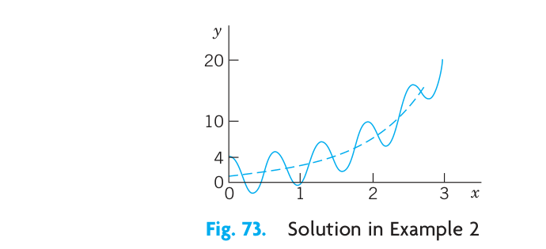
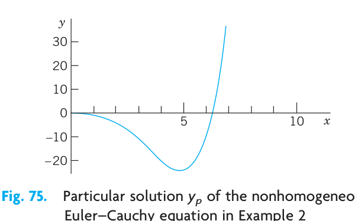
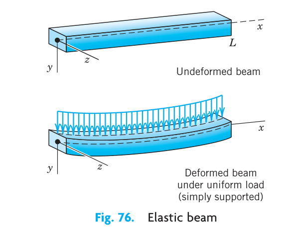
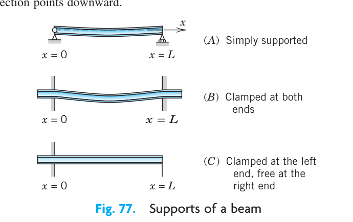

<!DOCTYPE html>
<html xmlns="http://www.w3.org/1999/xhtml" lang="en" xml:lang="en"><head>

<meta charset="utf-8">
<meta name="generator" content="quarto-1.9.37">

<meta name="viewport" content="width=device-width, initial-scale=1.0, user-scalable=yes">


<title>23&nbsp; CHAPTER 24: Data Analysis. Probability Theory – Advanced Engineering Mathematics</title>
<style>
/* Default styles provided by pandoc.
** See https://pandoc.org/MANUAL.html#variables-for-html for config info.
*/
code{white-space: pre-wrap;}
span.smallcaps{font-variant: small-caps;}
div.columns{display: flex; gap: min(4vw, 1.5em);}
div.column{flex: auto; overflow-x: auto;}
div.hanging-indent{margin-left: 1.5em; text-indent: -1.5em;}
ul.task-list{list-style: none;}
ul.task-list li input[type="checkbox"] {
  width: 0.8em;
  margin: 0 0.8em 0.2em -1em; /* quarto-specific, see https://github.com/quarto-dev/quarto-cli/issues/4556 */ 
  vertical-align: middle;
}
</style>


<script src="../site_libs/quarto-nav/quarto-nav.js"></script>
<script src="../site_libs/quarto-nav/headroom.min.js"></script>
<script src="../site_libs/clipboard/clipboard.min.js"></script>
<script src="../site_libs/quarto-search/autocomplete.umd.js"></script>
<script src="../site_libs/quarto-search/fuse.min.js"></script>
<script src="../site_libs/quarto-search/quarto-search.js"></script>
<meta name="quarto:offset" content="../">
<link href="../chapters/ch25.html" rel="next">
<link href="../chapters/ch23.html" rel="prev">
<script src="../site_libs/quarto-html/quarto.js" type="module"></script>
<script src="../site_libs/quarto-html/tabsets/tabsets.js" type="module"></script>
<script src="../site_libs/quarto-html/popper.min.js"></script>
<script src="../site_libs/quarto-html/tippy.umd.min.js"></script>
<script src="../site_libs/quarto-html/anchor.min.js"></script>
<link href="../site_libs/quarto-html/tippy.css" rel="stylesheet">
<link href="../site_libs/quarto-html/quarto-syntax-highlighting-7f8f88aac4f3542376d5c11b86a4c14d.css" rel="stylesheet" id="quarto-text-highlighting-styles">
<script src="../site_libs/bootstrap/bootstrap.min.js"></script>
<link href="../site_libs/bootstrap/bootstrap-icons.css" rel="stylesheet">
<link href="../site_libs/bootstrap/bootstrap-9e3e5b9121e68b3f077afb32f2c64d95.min.css" rel="stylesheet" append-hash="true" id="quarto-bootstrap" data-mode="light">
<script id="quarto-search-options" type="application/json">{
  "location": "sidebar",
  "copy-button": false,
  "collapse-after": 3,
  "panel-placement": "start",
  "type": "textbox",
  "limit": 50,
  "keyboard-shortcut": [
    "f",
    "/",
    "s"
  ],
  "show-item-context": false,
  "language": {
    "search-no-results-text": "No results",
    "search-matching-documents-text": "matching documents",
    "search-copy-link-title": "Copy link to search",
    "search-hide-matches-text": "Hide additional matches",
    "search-more-match-text": "more match in this document",
    "search-more-matches-text": "more matches in this document",
    "search-clear-button-title": "Clear",
    "search-text-placeholder": "",
    "search-detached-cancel-button-title": "Cancel",
    "search-submit-button-title": "Submit",
    "search-label": "Search"
  }
}</script>

  <script src="https://cdnjs.cloudflare.com/polyfill/v3/polyfill.min.js?features=es6"></script>
  <script defer="" src="https://cdn.jsdelivr.net/npm/mathjax@3/es5/tex-chtml-full.js" type="text/javascript"></script>

<script type="text/javascript">
const typesetMath = (el) => {
  if (window.MathJax) {
    // MathJax Typeset
    window.MathJax.typeset([el]);
  } else if (window.katex) {
    // KaTeX Render
    var mathElements = el.getElementsByClassName("math");
    var macros = [];
    for (var i = 0; i < mathElements.length; i++) {
      var texText = mathElements[i].firstChild;
      if (mathElements[i].tagName == "SPAN" && texText && texText.data) {
        window.katex.render(texText.data, mathElements[i], {
          displayMode: mathElements[i].classList.contains('display'),
          throwOnError: false,
          macros: macros,
          fleqn: false
        });
      }
    }
  }
}
window.Quarto = {
  typesetMath
};
</script>

</head>

<body class="nav-sidebar floating quarto-light">

<div id="quarto-search-results"></div>
  <header id="quarto-header" class="headroom fixed-top">
  <nav class="quarto-secondary-nav">
    <div class="container-fluid d-flex">
      <button type="button" class="quarto-btn-toggle btn" data-bs-toggle="collapse" role="button" data-bs-target=".quarto-sidebar-collapse-item" aria-controls="quarto-sidebar" aria-expanded="false" aria-label="Toggle sidebar navigation" onclick="if (window.quartoToggleHeadroom) { window.quartoToggleHeadroom(); }">
        <i class="bi bi-layout-text-sidebar-reverse"></i>
      </button>
        <nav class="quarto-page-breadcrumbs" aria-label="breadcrumb"><ol class="breadcrumb"><li class="breadcrumb-item"><a href="../chapters/ch24.html"><span class="chapter-number">23</span>&nbsp; <span class="chapter-title">CHAPTER 24: Data Analysis. Probability Theory</span></a></li></ol></nav>
        <a class="flex-grow-1" role="navigation" data-bs-toggle="collapse" data-bs-target=".quarto-sidebar-collapse-item" aria-controls="quarto-sidebar" aria-expanded="false" aria-label="Toggle sidebar navigation" onclick="if (window.quartoToggleHeadroom) { window.quartoToggleHeadroom(); }">      
        </a>
      <button type="button" class="btn quarto-search-button" aria-label="Search" onclick="window.quartoOpenSearch();">
        <i class="bi bi-search"></i>
      </button>
    </div>
  </nav>
</header>
<!-- content -->
<div id="quarto-content" class="quarto-container page-columns page-rows-contents page-layout-article">
<!-- sidebar -->
  <nav id="quarto-sidebar" class="sidebar collapse collapse-horizontal quarto-sidebar-collapse-item sidebar-navigation floating overflow-auto">
    <div class="pt-lg-2 mt-2 text-left sidebar-header">
    <div class="sidebar-title mb-0 py-0">
      <a href="../">Advanced Engineering Mathematics</a> 
    </div>
      </div>
        <div class="mt-2 flex-shrink-0 align-items-center">
        <div class="sidebar-search">
        <div id="quarto-search" class="" title="Search"></div>
        </div>
        </div>
    <div class="sidebar-menu-container"> 
    <ul class="list-unstyled mt-1">
        <li class="sidebar-item">
  <div class="sidebar-item-container"> 
  <a href="../index.html" class="sidebar-item-text sidebar-link">
 <span class="menu-text"><span class="chapter-number">1</span>&nbsp; <span class="chapter-title">Advanced Engineering Mathematics</span></span></a>
  </div>
</li>
        <li class="sidebar-item">
  <div class="sidebar-item-container"> 
  <a href="../chapters/ch1.html" class="sidebar-item-text sidebar-link">
 <span class="menu-text"><span class="chapter-number">2</span>&nbsp; <span class="chapter-title">First-Order ODEs</span></span></a>
  </div>
</li>
        <li class="sidebar-item">
  <div class="sidebar-item-container"> 
  <a href="../chapters/ch2.html" class="sidebar-item-text sidebar-link">
 <span class="menu-text"><span class="chapter-number">3</span>&nbsp; <span class="chapter-title">Second-Order Linear ODEs</span></span></a>
  </div>
</li>
        <li class="sidebar-item">
  <div class="sidebar-item-container"> 
  <a href="../chapters/ch3.html" class="sidebar-item-text sidebar-link">
 <span class="menu-text"><span class="chapter-number">4</span>&nbsp; <span class="chapter-title">Higher Order Linear ODEs</span></span></a>
  </div>
</li>
        <li class="sidebar-item">
  <div class="sidebar-item-container"> 
  <a href="../chapters/ch4.html" class="sidebar-item-text sidebar-link">
 <span class="menu-text"><span class="chapter-number">5</span>&nbsp; <span class="chapter-title">Systems of ODEs. Phase Plane. Qualitative Methods</span></span></a>
  </div>
</li>
        <li class="sidebar-item">
  <div class="sidebar-item-container"> 
  <a href="../chapters/ch5.html" class="sidebar-item-text sidebar-link">
 <span class="menu-text"><span class="chapter-number">6</span>&nbsp; <span class="chapter-title">Series Solutions of ODEs. Special Functions</span></span></a>
  </div>
</li>
        <li class="sidebar-item">
  <div class="sidebar-item-container"> 
  <a href="../chapters/ch6.html" class="sidebar-item-text sidebar-link">
 <span class="menu-text"><span class="chapter-number">7</span>&nbsp; <span class="chapter-title">Laplace Transforms</span></span></a>
  </div>
</li>
        <li class="sidebar-item">
  <div class="sidebar-item-container"> 
  <a href="../chapters/ch7.html" class="sidebar-item-text sidebar-link">
 <span class="menu-text"><span class="chapter-number">8</span>&nbsp; <span class="chapter-title">Linear Algebra: Matrices, Vectors, Determinants. Linear Systems</span></span></a>
  </div>
</li>
        <li class="sidebar-item">
  <div class="sidebar-item-container"> 
  <a href="../chapters/ch8.html" class="sidebar-item-text sidebar-link">
 <span class="menu-text"><span class="chapter-number">9</span>&nbsp; <span class="chapter-title">Linear Algebra: Matrix Eigenvalue Problems</span></span></a>
  </div>
</li>
        <li class="sidebar-item">
  <div class="sidebar-item-container"> 
  <a href="../chapters/ch9.html" class="sidebar-item-text sidebar-link">
 <span class="menu-text"><span class="chapter-number">10</span>&nbsp; <span class="chapter-title">Vector Differential Calculus. Grad, Div, Curl</span></span></a>
  </div>
</li>
        <li class="sidebar-item">
  <div class="sidebar-item-container"> 
  <a href="../chapters/ch10.html" class="sidebar-item-text sidebar-link">
 <span class="menu-text"><span class="chapter-number">11</span>&nbsp; <span class="chapter-title">Vector Integral Calculus. Integral Theorems</span></span></a>
  </div>
</li>
        <li class="sidebar-item">
  <div class="sidebar-item-container"> 
  <a href="../chapters/ch13.html" class="sidebar-item-text sidebar-link">
 <span class="menu-text"><span class="chapter-number">12</span>&nbsp; <span class="chapter-title">CHAPTER 13: Complex Numbers and Functions. Complex Differentiation</span></span></a>
  </div>
</li>
        <li class="sidebar-item">
  <div class="sidebar-item-container"> 
  <a href="../chapters/ch14.html" class="sidebar-item-text sidebar-link">
 <span class="menu-text"><span class="chapter-number">13</span>&nbsp; <span class="chapter-title">CHAPTER 14: Complex Integration</span></span></a>
  </div>
</li>
        <li class="sidebar-item">
  <div class="sidebar-item-container"> 
  <a href="../chapters/ch15.html" class="sidebar-item-text sidebar-link">
 <span class="menu-text"><span class="chapter-number">14</span>&nbsp; <span class="chapter-title">CHAPTER 15: Power Series, Taylor Series</span></span></a>
  </div>
</li>
        <li class="sidebar-item">
  <div class="sidebar-item-container"> 
  <a href="../chapters/ch16.html" class="sidebar-item-text sidebar-link">
 <span class="menu-text"><span class="chapter-number">15</span>&nbsp; <span class="chapter-title">CHAPTER 16: Laurent Series. Residue Integration</span></span></a>
  </div>
</li>
        <li class="sidebar-item">
  <div class="sidebar-item-container"> 
  <a href="../chapters/ch17.html" class="sidebar-item-text sidebar-link">
 <span class="menu-text"><span class="chapter-number">16</span>&nbsp; <span class="chapter-title">Conformal Mapping</span></span></a>
  </div>
</li>
        <li class="sidebar-item">
  <div class="sidebar-item-container"> 
  <a href="../chapters/ch18.html" class="sidebar-item-text sidebar-link">
 <span class="menu-text"><span class="chapter-number">17</span>&nbsp; <span class="chapter-title">Complex Analysis and Potential Theory</span></span></a>
  </div>
</li>
        <li class="sidebar-item">
  <div class="sidebar-item-container"> 
  <a href="../chapters/ch19.html" class="sidebar-item-text sidebar-link">
 <span class="menu-text"><span class="chapter-number">18</span>&nbsp; <span class="chapter-title">Numerics in General</span></span></a>
  </div>
</li>
        <li class="sidebar-item">
  <div class="sidebar-item-container"> 
  <a href="../chapters/ch20.html" class="sidebar-item-text sidebar-link">
 <span class="menu-text"><span class="chapter-number">19</span>&nbsp; <span class="chapter-title">CHAPTER 20: Numeric Linear Algebra</span></span></a>
  </div>
</li>
        <li class="sidebar-item">
  <div class="sidebar-item-container"> 
  <a href="../chapters/ch21.html" class="sidebar-item-text sidebar-link">
 <span class="menu-text"><span class="chapter-number">20</span>&nbsp; <span class="chapter-title">CHAPTER 21: Numerics for ODEs and PDEs</span></span></a>
  </div>
</li>
        <li class="sidebar-item">
  <div class="sidebar-item-container"> 
  <a href="../chapters/ch22.html" class="sidebar-item-text sidebar-link">
 <span class="menu-text"><span class="chapter-number">21</span>&nbsp; <span class="chapter-title">CHAPTER 22: Unconstrained Optimization. Linear Programming</span></span></a>
  </div>
</li>
        <li class="sidebar-item">
  <div class="sidebar-item-container"> 
  <a href="../chapters/ch23.html" class="sidebar-item-text sidebar-link">
 <span class="menu-text"><span class="chapter-number">22</span>&nbsp; <span class="chapter-title">CHAPTER 23: Graphs. Combinatorial Optimization</span></span></a>
  </div>
</li>
        <li class="sidebar-item">
  <div class="sidebar-item-container"> 
  <a href="../chapters/ch24.html" class="sidebar-item-text sidebar-link active">
 <span class="menu-text"><span class="chapter-number">23</span>&nbsp; <span class="chapter-title">CHAPTER 24: Data Analysis. Probability Theory</span></span></a>
  </div>
</li>
        <li class="sidebar-item">
  <div class="sidebar-item-container"> 
  <a href="../chapters/ch25.html" class="sidebar-item-text sidebar-link">
 <span class="menu-text"><span class="chapter-number">24</span>&nbsp; <span class="chapter-title">CHAPTER 25: Mathematical Statistics</span></span></a>
  </div>
</li>
    </ul>
    </div>
</nav>
<div id="quarto-sidebar-glass" class="quarto-sidebar-collapse-item" data-bs-toggle="collapse" data-bs-target=".quarto-sidebar-collapse-item"></div>
<!-- margin-sidebar -->
    <div id="quarto-margin-sidebar" class="sidebar margin-sidebar">
        <nav id="TOC" role="doc-toc" class="toc-active">
    <h2 id="toc-title">Table of contents</h2>
   
  <ul>
  <li><a href="#part-g-probability-statistics" id="toc-part-g-probability-statistics" class="nav-link active" data-scroll-target="#part-g-probability-statistics"><span class="header-section-number">24</span> PART G: Probability, Statistics</a>
  <ul class="collapse">
  <li><a href="#additional-software-for-probability-and-statistics" id="toc-additional-software-for-probability-and-statistics" class="nav-link" data-scroll-target="#additional-software-for-probability-and-statistics"><span class="header-section-number">24.0.1</span> Additional Software for Probability and Statistics</a></li>
  <li><a href="#sec-data-representation" id="toc-sec-data-representation" class="nav-link" data-scroll-target="#sec-data-representation"><span class="header-section-number">24.1</span> 24.1 Data Representation. Average. Spread</a>
  <ul class="collapse">
  <li><a href="#example-1-recording-and-sorting" id="toc-example-1-recording-and-sorting" class="nav-link" data-scroll-target="#example-1-recording-and-sorting"><span class="header-section-number">24.1.1</span> EXAMPLE 1 Recording and Sorting</a></li>
  <li><a href="#graphic-representation-of-data" id="toc-graphic-representation-of-data" class="nav-link" data-scroll-target="#graphic-representation-of-data"><span class="header-section-number">24.1.2</span> Graphic Representation of Data</a></li>
  <li><a href="#example-2-stem-and-leaf-plot" id="toc-example-2-stem-and-leaf-plot" class="nav-link" data-scroll-target="#example-2-stem-and-leaf-plot"><span class="header-section-number">24.1.3</span> EXAMPLE 2 Stem-and-Leaf Plot</a></li>
  <li><a href="#example-3-histogram" id="toc-example-3-histogram" class="nav-link" data-scroll-target="#example-3-histogram"><span class="header-section-number">24.1.4</span> EXAMPLE 3 Histogram</a></li>
  <li><a href="#example-4-boxplot.-median.-interquartile-range.-outlier" id="toc-example-4-boxplot.-median.-interquartile-range.-outlier" class="nav-link" data-scroll-target="#example-4-boxplot.-median.-interquartile-range.-outlier"><span class="header-section-number">24.1.5</span> EXAMPLE 4 Boxplot. Median. Interquartile Range. Outlier</a></li>
  <li><a href="#mean.-standard-deviation.-variance.-empirical-rule" id="toc-mean.-standard-deviation.-variance.-empirical-rule" class="nav-link" data-scroll-target="#mean.-standard-deviation.-variance.-empirical-rule"><span class="header-section-number">24.1.6</span> Mean. Standard Deviation. Variance. Empirical Rule</a></li>
  <li><a href="#example-5-empirical-rule-and-outliers.-z-score" id="toc-example-5-empirical-rule-and-outliers.-z-score" class="nav-link" data-scroll-target="#example-5-empirical-rule-and-outliers.-z-score"><span class="header-section-number">24.1.7</span> EXAMPLE 5 Empirical Rule and Outliers. z-Score</a></li>
  </ul></li>
  <li><a href="#problem-set-24.1" id="toc-problem-set-24.1" class="nav-link" data-scroll-target="#problem-set-24.1"><span class="header-section-number">24.2</span> PROBLEM SET 24.1</a></li>
  <li><a href="#sec-experiments-outcomes-events" id="toc-sec-experiments-outcomes-events" class="nav-link" data-scroll-target="#sec-experiments-outcomes-events"><span class="header-section-number">24.3</span> 24.2 Experiments, Outcomes, Events</a>
  <ul class="collapse">
  <li><a href="#examples-16-random-experiments.-sample-spaces" id="toc-examples-16-random-experiments.-sample-spaces" class="nav-link" data-scroll-target="#examples-16-random-experiments.-sample-spaces"><span class="header-section-number">24.3.1</span> EXAMPLES 1–6 Random Experiments. Sample Spaces</a></li>
  <li><a href="#example-7-events" id="toc-example-7-events" class="nav-link" data-scroll-target="#example-7-events"><span class="header-section-number">24.3.2</span> EXAMPLE 7 Events</a></li>
  <li><a href="#unions-intersections-complements-of-events" id="toc-unions-intersections-complements-of-events" class="nav-link" data-scroll-target="#unions-intersections-complements-of-events"><span class="header-section-number">24.3.3</span> Unions, Intersections, Complements of Events</a></li>
  <li><a href="#example-8-unions-and-intersections-of-3-events" id="toc-example-8-unions-and-intersections-of-3-events" class="nav-link" data-scroll-target="#example-8-unions-and-intersections-of-3-events"><span class="header-section-number">24.3.4</span> EXAMPLE 8 Unions and Intersections of 3 Events</a></li>
  </ul></li>
  <li><a href="#problem-set-24.2" id="toc-problem-set-24.2" class="nav-link" data-scroll-target="#problem-set-24.2"><span class="header-section-number">24.4</span> PROBLEM SET 24.2</a></li>
  <li><a href="#sec-probability" id="toc-sec-probability" class="nav-link" data-scroll-target="#sec-probability"><span class="header-section-number">24.5</span> 24.3 Probability</a>
  <ul class="collapse">
  <li><a href="#def-probability-first" id="toc-def-probability-first" class="nav-link" data-scroll-target="#def-probability-first"><span class="header-section-number">24.5.1</span> DEFINITION 1: First Definition of Probability</a></li>
  <li><a href="#example-1-fair-die" id="toc-example-1-fair-die" class="nav-link" data-scroll-target="#example-1-fair-die"><span class="header-section-number">24.5.2</span> EXAMPLE 1: Fair Die</a></li>
  <li><a href="#def-probability-general" id="toc-def-probability-general" class="nav-link" data-scroll-target="#def-probability-general"><span class="header-section-number">24.5.3</span> DEFINITION 2: General Definition of Probability</a></li>
  <li><a href="#basic-theorems-of-probability" id="toc-basic-theorems-of-probability" class="nav-link" data-scroll-target="#basic-theorems-of-probability"><span class="header-section-number">24.5.4</span> Basic Theorems of Probability</a></li>
  <li><a href="#thm-complementation-rule" id="toc-thm-complementation-rule" class="nav-link" data-scroll-target="#thm-complementation-rule"><span class="header-section-number">24.5.5</span> THEOREM 1: Complementation Rule</a></li>
  <li><a href="#example-2-coin-tossing" id="toc-example-2-coin-tossing" class="nav-link" data-scroll-target="#example-2-coin-tossing"><span class="header-section-number">24.5.6</span> EXAMPLE 2: Coin Tossing</a></li>
  <li><a href="#thm-addition-rule-mut-excl" id="toc-thm-addition-rule-mut-excl" class="nav-link" data-scroll-target="#thm-addition-rule-mut-excl"><span class="header-section-number">24.5.7</span> THEOREM 2: Addition Rule for Mutually Exclusive Events</a></li>
  <li><a href="#example-3-mutually-exclusive-events" id="toc-example-3-mutually-exclusive-events" class="nav-link" data-scroll-target="#example-3-mutually-exclusive-events"><span class="header-section-number">24.5.8</span> EXAMPLE 3: Mutually Exclusive Events</a></li>
  <li><a href="#thm-addition-rule-arbitrary" id="toc-thm-addition-rule-arbitrary" class="nav-link" data-scroll-target="#thm-addition-rule-arbitrary"><span class="header-section-number">24.5.9</span> THEOREM 3: Addition Rule for Arbitrary Events</a></li>
  <li><a href="#example-4-union-of-arbitrary-events" id="toc-example-4-union-of-arbitrary-events" class="nav-link" data-scroll-target="#example-4-union-of-arbitrary-events"><span class="header-section-number">24.5.10</span> EXAMPLE 4: Union of Arbitrary Events</a></li>
  <li><a href="#conditional-probability.-independent-events" id="toc-conditional-probability.-independent-events" class="nav-link" data-scroll-target="#conditional-probability.-independent-events"><span class="header-section-number">24.5.11</span> Conditional Probability. Independent Events</a></li>
  <li><a href="#thm-multiplication-rule" id="toc-thm-multiplication-rule" class="nav-link" data-scroll-target="#thm-multiplication-rule"><span class="header-section-number">24.5.12</span> THEOREM 4: Multiplication Rule</a></li>
  <li><a href="#example-5-multiplication-rule" id="toc-example-5-multiplication-rule" class="nav-link" data-scroll-target="#example-5-multiplication-rule"><span class="header-section-number">24.5.13</span> EXAMPLE 5: Multiplication Rule</a></li>
  <li><a href="#independent-events" id="toc-independent-events" class="nav-link" data-scroll-target="#independent-events"><span class="header-section-number">24.5.14</span> Independent Events</a></li>
  <li><a href="#example-6-sampling-with-and-without-replacement" id="toc-example-6-sampling-with-and-without-replacement" class="nav-link" data-scroll-target="#example-6-sampling-with-and-without-replacement"><span class="header-section-number">24.5.15</span> EXAMPLE 6: Sampling With and Without Replacement</a></li>
  </ul></li>
  <li><a href="#problem-set-24.3" id="toc-problem-set-24.3" class="nav-link" data-scroll-target="#problem-set-24.3"><span class="header-section-number">24.6</span> PROBLEM SET 24.3</a></li>
  <li><a href="#sec-permutations-combinations" id="toc-sec-permutations-combinations" class="nav-link" data-scroll-target="#sec-permutations-combinations"><span class="header-section-number">24.7</span> 24.4 Permutations and Combinations</a>
  <ul class="collapse">
  <li><a href="#permutations" id="toc-permutations" class="nav-link" data-scroll-target="#permutations"><span class="header-section-number">24.7.1</span> Permutations</a></li>
  <li><a href="#thm-permutations" id="toc-thm-permutations" class="nav-link" data-scroll-target="#thm-permutations"><span class="header-section-number">24.7.2</span> THEOREM 1: Permutations</a></li>
  <li><a href="#example-1-illustration-of-theorem-1b" id="toc-example-1-illustration-of-theorem-1b" class="nav-link" data-scroll-target="#example-1-illustration-of-theorem-1b"><span class="header-section-number">24.7.3</span> EXAMPLE 1: Illustration of Theorem 1(b)</a></li>
  <li><a href="#thm-permutations-rep" id="toc-thm-permutations-rep" class="nav-link" data-scroll-target="#thm-permutations-rep"><span class="header-section-number">24.7.4</span> THEOREM 2: Permutations</a></li>
  <li><a href="#example-2-illustration-of-theorem-2" id="toc-example-2-illustration-of-theorem-2" class="nav-link" data-scroll-target="#example-2-illustration-of-theorem-2"><span class="header-section-number">24.7.5</span> EXAMPLE 2: Illustration of Theorem 2</a></li>
  <li><a href="#combinations" id="toc-combinations" class="nav-link" data-scroll-target="#combinations"><span class="header-section-number">24.7.6</span> Combinations</a></li>
  <li><a href="#thm-combinations" id="toc-thm-combinations" class="nav-link" data-scroll-target="#thm-combinations"><span class="header-section-number">24.7.7</span> THEOREM 3: Combinations</a></li>
  <li><a href="#example-3-illustration-of-theorem-3" id="toc-example-3-illustration-of-theorem-3" class="nav-link" data-scroll-target="#example-3-illustration-of-theorem-3"><span class="header-section-number">24.7.8</span> EXAMPLE 3: Illustration of Theorem 3</a></li>
  <li><a href="#factorial-function" id="toc-factorial-function" class="nav-link" data-scroll-target="#factorial-function"><span class="header-section-number">24.7.9</span> Factorial Function</a></li>
  <li><a href="#example-4-stirling-formula" id="toc-example-4-stirling-formula" class="nav-link" data-scroll-target="#example-4-stirling-formula"><span class="header-section-number">24.7.10</span> EXAMPLE 4: Stirling Formula</a></li>
  <li><a href="#binomial-coefficients" id="toc-binomial-coefficients" class="nav-link" data-scroll-target="#binomial-coefficients"><span class="header-section-number">24.7.11</span> Binomial Coefficients</a></li>
  </ul></li>
  <li><a href="#problem-set-24.4" id="toc-problem-set-24.4" class="nav-link" data-scroll-target="#problem-set-24.4"><span class="header-section-number">24.8</span> PROBLEM SET 24.4</a></li>
  <li><a href="#sec-random-variables-distributions" id="toc-sec-random-variables-distributions" class="nav-link" data-scroll-target="#sec-random-variables-distributions"><span class="header-section-number">24.9</span> 24.5 Random Variables. Probability Distributions</a>
  <ul class="collapse">
  <li><a href="#def-random-variable" id="toc-def-random-variable" class="nav-link" data-scroll-target="#def-random-variable"><span class="header-section-number">24.9.1</span> DEFINITION: Random Variable</a></li>
  <li><a href="#discrete-random-variables-and-distributions" id="toc-discrete-random-variables-and-distributions" class="nav-link" data-scroll-target="#discrete-random-variables-and-distributions"><span class="header-section-number">24.9.2</span> Discrete Random Variables and Distributions</a></li>
  <li><a href="#example-1-probability-function-and-distribution-function" id="toc-example-1-probability-function-and-distribution-function" class="nav-link" data-scroll-target="#example-1-probability-function-and-distribution-function"><span class="header-section-number">24.9.3</span> EXAMPLE 1: Probability Function and Distribution Function</a></li>
  <li><a href="#example-2-probability-function-and-distribution-function" id="toc-example-2-probability-function-and-distribution-function" class="nav-link" data-scroll-target="#example-2-probability-function-and-distribution-function"><span class="header-section-number">24.9.4</span> EXAMPLE 2: Probability Function and Distribution Function</a></li>
  <li><a href="#example-3-illustration-of-formula-eq-interval-prob-discrete" id="toc-example-3-illustration-of-formula-eq-interval-prob-discrete" class="nav-link" data-scroll-target="#example-3-illustration-of-formula-eq-interval-prob-discrete"><span class="header-section-number">24.9.5</span> EXAMPLE 3: Illustration of Formula (Equation&nbsp;<span>24.47</span>)</a></li>
  <li><a href="#example-4-waiting-time-problem.-countably-infinite-sample-space" id="toc-example-4-waiting-time-problem.-countably-infinite-sample-space" class="nav-link" data-scroll-target="#example-4-waiting-time-problem.-countably-infinite-sample-space"><span class="header-section-number">24.9.6</span> EXAMPLE 4: Waiting Time Problem. Countably Infinite Sample Space</a></li>
  <li><a href="#continuous-random-variables-and-distributions" id="toc-continuous-random-variables-and-distributions" class="nav-link" data-scroll-target="#continuous-random-variables-and-distributions"><span class="header-section-number">24.9.7</span> Continuous Random Variables and Distributions</a></li>
  <li><a href="#example-5-continuous-distribution" id="toc-example-5-continuous-distribution" class="nav-link" data-scroll-target="#example-5-continuous-distribution"><span class="header-section-number">24.9.8</span> EXAMPLE 5: Continuous Distribution</a></li>
  </ul></li>
  <li><a href="#problem-set-24.5" id="toc-problem-set-24.5" class="nav-link" data-scroll-target="#problem-set-24.5"><span class="header-section-number">24.10</span> PROBLEM SET 24.5</a></li>
  <li><a href="#sec-mean-variance" id="toc-sec-mean-variance" class="nav-link" data-scroll-target="#sec-mean-variance"><span class="header-section-number">24.11</span> 24.6 Mean and Variance of a Distribution</a>
  <ul class="collapse">
  <li><a href="#example-1-mean-and-variance" id="toc-example-1-mean-and-variance" class="nav-link" data-scroll-target="#example-1-mean-and-variance"><span class="header-section-number">24.11.1</span> EXAMPLE 1: Mean and Variance</a></li>
  <li><a href="#example-2-uniform-distribution.-variance-measures-spread" id="toc-example-2-uniform-distribution.-variance-measures-spread" class="nav-link" data-scroll-target="#example-2-uniform-distribution.-variance-measures-spread"><span class="header-section-number">24.11.2</span> EXAMPLE 2: Uniform Distribution. Variance Measures Spread</a></li>
  <li><a href="#symmetry" id="toc-symmetry" class="nav-link" data-scroll-target="#symmetry"><span class="header-section-number">24.11.3</span> Symmetry</a></li>
  <li><a href="#thm-mean-symmetric" id="toc-thm-mean-symmetric" class="nav-link" data-scroll-target="#thm-mean-symmetric"><span class="header-section-number">24.11.4</span> THEOREM 1: Mean of a Symmetric Distribution</a></li>
  <li><a href="#transformation-of-mean-and-variance" id="toc-transformation-of-mean-and-variance" class="nav-link" data-scroll-target="#transformation-of-mean-and-variance"><span class="header-section-number">24.11.5</span> Transformation of Mean and Variance</a></li>
  <li><a href="#thm-transformation" id="toc-thm-transformation" class="nav-link" data-scroll-target="#thm-transformation"><span class="header-section-number">24.11.6</span> THEOREM 2: Transformation of Mean and Variance</a></li>
  <li><a href="#expectation-moments" id="toc-expectation-moments" class="nav-link" data-scroll-target="#expectation-moments"><span class="header-section-number">24.11.7</span> Expectation, Moments</a></li>
  </ul></li>
  <li><a href="#problem-set-24.6" id="toc-problem-set-24.6" class="nav-link" data-scroll-target="#problem-set-24.6"><span class="header-section-number">24.12</span> PROBLEM SET 24.6</a></li>
  <li><a href="#sec-discrete-distributions" id="toc-sec-discrete-distributions" class="nav-link" data-scroll-target="#sec-discrete-distributions"><span class="header-section-number">24.13</span> 24.7 Binomial, Poisson, and Hypergeometric Distributions</a>
  <ul class="collapse">
  <li><a href="#binomial-distribution" id="toc-binomial-distribution" class="nav-link" data-scroll-target="#binomial-distribution"><span class="header-section-number">24.13.1</span> Binomial Distribution</a></li>
  <li><a href="#example-1-binomial-distribution" id="toc-example-1-binomial-distribution" class="nav-link" data-scroll-target="#example-1-binomial-distribution"><span class="header-section-number">24.13.2</span> EXAMPLE 1: Binomial Distribution</a></li>
  <li><a href="#poisson-distribution" id="toc-poisson-distribution" class="nav-link" data-scroll-target="#poisson-distribution"><span class="header-section-number">24.13.3</span> Poisson Distribution</a></li>
  <li><a href="#example-2-poisson-distribution" id="toc-example-2-poisson-distribution" class="nav-link" data-scroll-target="#example-2-poisson-distribution"><span class="header-section-number">24.13.4</span> EXAMPLE 2: Poisson Distribution</a></li>
  <li><a href="#example-3-parking-problems.-poisson-distribution" id="toc-example-3-parking-problems.-poisson-distribution" class="nav-link" data-scroll-target="#example-3-parking-problems.-poisson-distribution"><span class="header-section-number">24.13.5</span> EXAMPLE 3: Parking Problems. Poisson Distribution</a></li>
  <li><a href="#sampling-with-replacement" id="toc-sampling-with-replacement" class="nav-link" data-scroll-target="#sampling-with-replacement"><span class="header-section-number">24.13.6</span> Sampling with Replacement</a></li>
  <li><a href="#sampling-without-replacement.-hypergeometric-distribution" id="toc-sampling-without-replacement.-hypergeometric-distribution" class="nav-link" data-scroll-target="#sampling-without-replacement.-hypergeometric-distribution"><span class="header-section-number">24.13.7</span> Sampling without Replacement. Hypergeometric Distribution</a></li>
  <li><a href="#example-4-sampling-with-and-without-replacement" id="toc-example-4-sampling-with-and-without-replacement" class="nav-link" data-scroll-target="#example-4-sampling-with-and-without-replacement"><span class="header-section-number">24.13.8</span> EXAMPLE 4: Sampling with and without Replacement</a></li>
  </ul></li>
  <li><a href="#problem-set-24.7" id="toc-problem-set-24.7" class="nav-link" data-scroll-target="#problem-set-24.7"><span class="header-section-number">24.14</span> PROBLEM SET 24.7</a></li>
  <li><a href="#sec-normal-distribution" id="toc-sec-normal-distribution" class="nav-link" data-scroll-target="#sec-normal-distribution"><span class="header-section-number">24.15</span> 24.8 Normal Distribution</a>
  <ul class="collapse">
  <li><a href="#distribution-function-fx" id="toc-distribution-function-fx" class="nav-link" data-scroll-target="#distribution-function-fx"><span class="header-section-number">24.15.1</span> Distribution Function <span class="math inline">\(F(x)\)</span></a></li>
  <li><a href="#thm-normal-table" id="toc-thm-normal-table" class="nav-link" data-scroll-target="#thm-normal-table"><span class="header-section-number">24.15.2</span> THEOREM 1: Use of the Normal Table A7 in App. 5</a></li>
  <li><a href="#thm-normal-interval-probs" id="toc-thm-normal-interval-probs" class="nav-link" data-scroll-target="#thm-normal-interval-probs"><span class="header-section-number">24.15.3</span> THEOREM 2: Normal Probabilities for Intervals</a></li>
  <li><a href="#numeric-values" id="toc-numeric-values" class="nav-link" data-scroll-target="#numeric-values"><span class="header-section-number">24.15.4</span> Numeric Values</a></li>
  <li><a href="#working-with-the-normal-tables-a7-and-a8-in-app.-5" id="toc-working-with-the-normal-tables-a7-and-a8-in-app.-5" class="nav-link" data-scroll-target="#working-with-the-normal-tables-a7-and-a8-in-app.-5"><span class="header-section-number">24.15.5</span> Working with the Normal Tables A7 and A8 in App. 5</a></li>
  <li><a href="#example-1-reading-entries-from-table-a7" id="toc-example-1-reading-entries-from-table-a7" class="nav-link" data-scroll-target="#example-1-reading-entries-from-table-a7"><span class="header-section-number">24.15.6</span> EXAMPLE 1: Reading Entries from Table A7</a></li>
  <li><a href="#example-2-probabilities-for-given-intervals-table-a7" id="toc-example-2-probabilities-for-given-intervals-table-a7" class="nav-link" data-scroll-target="#example-2-probabilities-for-given-intervals-table-a7"><span class="header-section-number">24.15.7</span> EXAMPLE 2: Probabilities for Given Intervals, Table A7</a></li>
  <li><a href="#example-3-unknown-values-c-for-given-probabilities-table-a8" id="toc-example-3-unknown-values-c-for-given-probabilities-table-a8" class="nav-link" data-scroll-target="#example-3-unknown-values-c-for-given-probabilities-table-a8"><span class="header-section-number">24.15.8</span> EXAMPLE 3: Unknown Values <span class="math inline">\(c\)</span> for Given Probabilities, Table A8</a></li>
  <li><a href="#example-4-defectives" id="toc-example-4-defectives" class="nav-link" data-scroll-target="#example-4-defectives"><span class="header-section-number">24.15.9</span> EXAMPLE 4: Defectives</a></li>
  <li><a href="#normal-approximation-of-the-binomial-distribution" id="toc-normal-approximation-of-the-binomial-distribution" class="nav-link" data-scroll-target="#normal-approximation-of-the-binomial-distribution"><span class="header-section-number">24.15.10</span> Normal Approximation of the Binomial Distribution</a></li>
  <li><a href="#thm-demoivre-laplace" id="toc-thm-demoivre-laplace" class="nav-link" data-scroll-target="#thm-demoivre-laplace"><span class="header-section-number">24.15.11</span> THEOREM 3: Limit Theorem of De Moivre and Laplace</a></li>
  </ul></li>
  <li><a href="#problem-set-24.8" id="toc-problem-set-24.8" class="nav-link" data-scroll-target="#problem-set-24.8"><span class="header-section-number">24.16</span> PROBLEM SET 24.8</a></li>
  <li><a href="#sec-several-variables" id="toc-sec-several-variables" class="nav-link" data-scroll-target="#sec-several-variables"><span class="header-section-number">24.17</span> 24.9 Distributions of Several Random Variables</a>
  <ul class="collapse">
  <li><a href="#discrete-two-dimensional-distributions" id="toc-discrete-two-dimensional-distributions" class="nav-link" data-scroll-target="#discrete-two-dimensional-distributions"><span class="header-section-number">24.17.1</span> Discrete Two-Dimensional Distributions</a></li>
  <li><a href="#example-1-two-dimensional-discrete-distribution" id="toc-example-1-two-dimensional-discrete-distribution" class="nav-link" data-scroll-target="#example-1-two-dimensional-discrete-distribution"><span class="header-section-number">24.17.2</span> EXAMPLE 1: Two-Dimensional Discrete Distribution</a></li>
  <li><a href="#continuous-two-dimensional-distributions" id="toc-continuous-two-dimensional-distributions" class="nav-link" data-scroll-target="#continuous-two-dimensional-distributions"><span class="header-section-number">24.17.3</span> Continuous Two-Dimensional Distributions</a></li>
  <li><a href="#example-2-two-dimensional-uniform-distribution-in-a-rectangle" id="toc-example-2-two-dimensional-uniform-distribution-in-a-rectangle" class="nav-link" data-scroll-target="#example-2-two-dimensional-uniform-distribution-in-a-rectangle"><span class="header-section-number">24.17.4</span> EXAMPLE 2: Two-Dimensional Uniform Distribution in a Rectangle</a></li>
  <li><a href="#marginal-distributions-of-a-discrete-distribution" id="toc-marginal-distributions-of-a-discrete-distribution" class="nav-link" data-scroll-target="#marginal-distributions-of-a-discrete-distribution"><span class="header-section-number">24.17.5</span> Marginal Distributions of a Discrete Distribution</a></li>
  <li><a href="#example-3-marginal-distributions-of-a-discrete-two-dimensional-random-variable" id="toc-example-3-marginal-distributions-of-a-discrete-two-dimensional-random-variable" class="nav-link" data-scroll-target="#example-3-marginal-distributions-of-a-discrete-two-dimensional-random-variable"><span class="header-section-number">24.17.6</span> EXAMPLE 3: Marginal Distributions of a Discrete Two-Dimensional Random Variable</a></li>
  <li><a href="#marginal-distributions-of-a-continuous-distribution" id="toc-marginal-distributions-of-a-continuous-distribution" class="nav-link" data-scroll-target="#marginal-distributions-of-a-continuous-distribution"><span class="header-section-number">24.17.7</span> Marginal Distributions of a Continuous Distribution</a></li>
  <li><a href="#independence-of-random-variables" id="toc-independence-of-random-variables" class="nav-link" data-scroll-target="#independence-of-random-variables"><span class="header-section-number">24.17.8</span> Independence of Random Variables</a></li>
  <li><a href="#example-4-independence-and-dependence" id="toc-example-4-independence-and-dependence" class="nav-link" data-scroll-target="#example-4-independence-and-dependence"><span class="header-section-number">24.17.9</span> EXAMPLE 4: Independence and Dependence</a></li>
  <li><a href="#extension-of-independence-to-n-dimensional-random-variables" id="toc-extension-of-independence-to-n-dimensional-random-variables" class="nav-link" data-scroll-target="#extension-of-independence-to-n-dimensional-random-variables"><span class="header-section-number">24.17.10</span> Extension of Independence to <span class="math inline">\(n\)</span>-Dimensional Random Variables</a></li>
  <li><a href="#functions-of-random-variables" id="toc-functions-of-random-variables" class="nav-link" data-scroll-target="#functions-of-random-variables"><span class="header-section-number">24.17.11</span> Functions of Random Variables</a></li>
  <li><a href="#addition-of-means" id="toc-addition-of-means" class="nav-link" data-scroll-target="#addition-of-means"><span class="header-section-number">24.17.12</span> Addition of Means</a></li>
  <li><a href="#thm-addition-means" id="toc-thm-addition-means" class="nav-link" data-scroll-target="#thm-addition-means"><span class="header-section-number">24.17.13</span> THEOREM 1: Addition of Means</a></li>
  <li><a href="#thm-multiplication-means" id="toc-thm-multiplication-means" class="nav-link" data-scroll-target="#thm-multiplication-means"><span class="header-section-number">24.17.14</span> THEOREM 2: Multiplication of Means</a></li>
  <li><a href="#addition-of-variances" id="toc-addition-of-variances" class="nav-link" data-scroll-target="#addition-of-variances"><span class="header-section-number">24.17.15</span> Addition of Variances</a></li>
  <li><a href="#thm-addition-variances" id="toc-thm-addition-variances" class="nav-link" data-scroll-target="#thm-addition-variances"><span class="header-section-number">24.17.16</span> THEOREM 3: Addition of Variances</a></li>
  </ul></li>
  <li><a href="#problem-set-24.9" id="toc-problem-set-24.9" class="nav-link" data-scroll-target="#problem-set-24.9"><span class="header-section-number">24.18</span> PROBLEM SET 24.9</a></li>
  <li><a href="#sec-ch24-review-questions" id="toc-sec-ch24-review-questions" class="nav-link" data-scroll-target="#sec-ch24-review-questions"><span class="header-section-number">24.19</span> Chapter 24 Review Questions and Problems</a></li>
  <li><a href="#sec-ch24-summary" id="toc-sec-ch24-summary" class="nav-link" data-scroll-target="#sec-ch24-summary"><span class="header-section-number">24.20</span> Summary of Chapter 24</a></li>
  </ul></li>
  </ul>
</nav>
    </div>
<!-- main -->
<main class="content" id="quarto-document-content">

<header id="title-block-header" class="quarto-title-block default">
<div class="quarto-title">
<h1 class="title"><span class="chapter-number">23</span>&nbsp; <span class="chapter-title">CHAPTER 24: Data Analysis. Probability Theory</span></h1>
</div>


<div class="quarto-title-meta">

    
  
    
  </div>
  


</header>


<section id="part-g-probability-statistics" class="level1" data-number="24">
<h1 data-number="24"><span class="header-section-number">24</span> PART G: Probability, Statistics</h1>
<p>Probability theory (Chap. 24) provides models of probability distributions (theoretical models of the observable reality involving chance effects) to be tested by statistical methods, and it will also supply the mathematical foundation of these methods in Chap. 25.</p>
<p>Modern mathematical statistics (Chap. 25) has various engineering applications, for instance, in testing materials, control of production processes, quality control of production outputs, performance tests of systems, robotics, and automatization in general, production planning, marketing analysis, and so on.</p>
<p>To this we could add a long list of fields of applications, for instance, in agriculture, biology, computer science, demography, economics, geography, management of natural resources, medicine, meteorology, politics, psychology, sociology, traffic control, urban planning, etc. Although these applications are very heterogeneous, we shall see that most statistical methods are universal in the sense that each of them can be applied in various fields.</p>
<section id="additional-software-for-probability-and-statistics" class="level3" data-number="24.0.1">
<h3 data-number="24.0.1" class="anchored" data-anchor-id="additional-software-for-probability-and-statistics"><span class="header-section-number">24.0.1</span> Additional Software for Probability and Statistics</h3>
<p>See also the list of software at the beginning of Part E on Numerical Analysis.</p>
<ul>
<li><strong>Data Desk</strong>: Data Description, Inc., Ithaca, NY. Phone 1-800-573-5121 or (607) 257-1000, website at <a href="http://www.datadesk.com">www.datadesk.com</a>.</li>
<li><strong>MINITAB</strong>: Minitab, Inc., State College, PA. Phone 1-800-448-3555 or (814) 238-3280, website at <a href="http://www.minitab.com">www.minitab.com</a>.</li>
<li><strong>SAS</strong>: SAS Institute, Inc., Cary, NC. Phone 1-800-727-0025 or (919) 677-8000, website at <a href="http://www.sas.com">www.sas.com</a>.</li>
<li><strong>R</strong>: website at <a href="http://www.r-project.org">www.r-project.org</a>. Free software, part of the GNU/Free Software Foundation project.</li>
<li><strong>SPSS</strong>: SPSS, Inc., Chicago, IL (part of IBM). Phone 1-800-543-2185 or (312) 651-3000, website at <a href="http://www.spss.com">www.spss.com</a>.</li>
<li><strong>STATISTICA</strong>: StatSoft, Inc., Tulsa, OK. Phone (918) 749-1119, website at <a href="http://www.statsoft.com">www.statsoft.com</a>.</li>
<li><strong>TIBCO Spotfire S+</strong>: TIBCO Software Inc., Palo Alto, CA; Office for this software: Somerville, MA. Phone 1-866-240-0491 (toll-free), (617) 702-1602, website at <a href="http://spotfire.tibco.com/products/s-plus/statistical-analysis-software.aspx">spotfire.tibco.com</a>.</li>
</ul>
<hr>
<p>We first show how to handle data numerically or in terms of graphs, and how to extract information (average size, spread of data, etc.) from them. If these data are influenced by “chance,” by factors whose effect we cannot predict exactly (e.g., weather data, stock prices, life spans of tires, etc.), we have to rely on probability theory. This theory originated in games of chance, such as flipping coins, rolling dice, or playing cards. Nowadays it gives mathematical models of chance processes called random experiments or, briefly, experiments. In such an experiment we observe a random variable <span class="math inline">\(X\)</span>, that is, a function whose values in a trial (a performance of an experiment) occur “by chance” (Sec. 24.3) according to a probability distribution that gives the individual probabilities with which possible values of <span class="math inline">\(X\)</span> may occur in the long run. (Example: Each of the six faces of a die should occur with the same probability, <span class="math inline">\(1/6\)</span>.) Or we may simultaneously observe more than one random variable, for instance, height and weight of persons or hardness and tensile strength of steel. This is discussed in Sec. 24.9, which will also give the basis for the mathematical justification of the statistical methods in Chapter 25.</p>
<p><strong>Prerequisite:</strong> Calculus.<br>
<strong>References and Answers to Problems:</strong> App. 1 Part G, App. 2.</p>
</section>
<section id="sec-data-representation" class="level2" data-number="24.1">
<h2 data-number="24.1" class="anchored" data-anchor-id="sec-data-representation"><span class="header-section-number">24.1</span> 24.1 Data Representation. Average. Spread</h2>
<p>Data can be represented numerically or graphically in various ways. For instance, your daily newspaper may contain tables of stock prices and money exchange rates, curves or bar charts illustrating economical or political developments, or pie charts showing how your tax dollar is spent. And there are numerous other representations of data for special purposes.</p>
<p>In this section we discuss the use of standard representations of data in statistics. (For these, software packages, such as DATA DESK, R, and MINITAB, are available, and Maple or Mathematica may also be helpful; see pp.&nbsp;789 and 1009.) We explain corresponding concepts and methods in terms of typical examples.</p>
<section id="example-1-recording-and-sorting" class="level3" data-number="24.1.1">
<h3 data-number="24.1.1" class="anchored" data-anchor-id="example-1-recording-and-sorting"><span class="header-section-number">24.1.1</span> EXAMPLE 1 Recording and Sorting</h3>
<p>Sample values (observations, measurements) should be recorded in the order in which they occur. Sorting, that is, ordering the sample values by size, is done as a first step of investigating properties of the sample and graphing it. Sorting is a standard process on the computer; see Ref. [E35], listed in App. 1.</p>
<p>Super alloys is a collective name for alloys used in jet engines and rocket motors, requiring high temperature (typically <span class="math inline">\(1800^\circ\text{F}\)</span>), high strength, and excellent resistance to oxidation. Thirty specimens of Hastelloy C (nickel-based steel, investment cast) had the tensile strength (in <span class="math inline">\(1000\text{ lb/sq in.}\)</span>), recorded in the order obtained and rounded to integer values, <span id="eq-hastelloy-raw"><span class="math display">\[
89, \quad 77, \quad 88, \quad 91, \quad 88, \quad 93, \quad 99, \quad 79, \quad 87, \quad 84, \quad 86, \quad 82, \quad 88, \quad 89, \quad 78, \quad 90, \quad 91, \quad 81, \quad 90, \quad 83, \quad 83, \quad 92, \quad 87, \quad 89, \quad 86, \quad 89, \quad 81, \quad 87, \quad 84, \quad 89.
\tag{24.1}\]</span></span></p>
<p>Sorting gives <span id="eq-hastelloy-sorted"><span class="math display">\[
77, \quad 78, \quad 79, \quad 81, \quad 81, \quad 82, \quad 83, \quad 83, \quad 84, \quad 84, \quad 86, \quad 86, \quad 87, \quad 87, \quad 87, \quad 88, \quad 88, \quad 88, \quad 89, \quad 89, \quad 89, \quad 89, \quad 89, \quad 90, \quad 90, \quad 91, \quad 91, \quad 92, \quad 93, \quad 99.
\tag{24.2}\]</span></span> <span class="math inline">\(\blacksquare\)</span></p>
</section>
<section id="graphic-representation-of-data" class="level3" data-number="24.1.2">
<h3 data-number="24.1.2" class="anchored" data-anchor-id="graphic-representation-of-data"><span class="header-section-number">24.1.2</span> Graphic Representation of Data</h3>
<p>We shall now discuss standard graphic representations used in statistics for obtaining information on properties of data.</p>
</section>
<section id="example-2-stem-and-leaf-plot" class="level3" data-number="24.1.3">
<h3 data-number="24.1.3" class="anchored" data-anchor-id="example-2-stem-and-leaf-plot"><span class="header-section-number">24.1.3</span> EXAMPLE 2 Stem-and-Leaf Plot</h3>
<p>This is one of the simplest but most useful representations of data. For (<a href="#eq-hastelloy-raw" class="quarto-xref">Equation&nbsp;<span>24.1</span></a>) it is shown in <a href="ch25.html#fig-01" class="quarto-xref">Figure&nbsp;<span>25.1</span></a>. The numbers range from 78 to 99; see (<a href="#eq-hastelloy-sorted" class="quarto-xref">Equation&nbsp;<span>24.2</span></a>). We divide these numbers into 5 groups, 75–79, 80–84, 85–89, 90–94, 95–99. The integers in the tens position of the groups are 7, 8, 8, 9, 9. These form the stem in <a href="ch25.html#fig-01" class="quarto-xref">Figure&nbsp;<span>25.1</span></a>. The first leaf is 789, representing 77, 78, 79. The second leaf is 1123344, representing 81, 81, 82, 83, 83, 84, 84. And so on.</p>
<p>The number of times a value occurs is called its <strong>absolute frequency</strong>. Thus 78 has absolute frequency 1, the value 89 has absolute frequency 5, etc. The column to the extreme left in <a href="ch25.html#fig-01" class="quarto-xref">Figure&nbsp;<span>25.1</span></a> shows the <strong>cumulative absolute frequencies</strong>, that is, the sum of the absolute frequencies of the values up to the line of the leaf. Thus, the number 10 in the second line on the left shows that (<a href="#eq-hastelloy-raw" class="quarto-xref">Equation&nbsp;<span>24.1</span></a>) has 10 values up to and including 84. The number 23 in the next line shows that there are 23 values not exceeding 89, etc. Dividing the cumulative absolute frequencies by <span class="math inline">\(n\)</span> (<span class="math inline">\(= 30\)</span> in <a href="ch25.html#fig-01" class="quarto-xref">Figure&nbsp;<span>25.1</span></a>) gives the <strong>cumulative relative frequencies</strong> 0.1, 0.33, 0.76, 0.93, 1.00. <span class="math inline">\(\blacksquare\)</span></p>
<div id="fig-01" class="quarto-float quarto-figure quarto-figure-center anchored">
<figure class="quarto-float quarto-float-fig figure">
<div aria-describedby="fig-01-caption-0ceaefa1-69ba-4598-a22c-09a6ac19f8ca">

</div>
<figcaption class="quarto-float-caption-bottom quarto-float-caption quarto-float-fig" id="fig-01-caption-0ceaefa1-69ba-4598-a22c-09a6ac19f8ca">
Figure&nbsp;24.1: Fig. 507. Stem-and-leaf plot of the data in Example 1
</figcaption>
</figure>
</div>
</section>
<section id="example-3-histogram" class="level3" data-number="24.1.4">
<h3 data-number="24.1.4" class="anchored" data-anchor-id="example-3-histogram"><span class="header-section-number">24.1.4</span> EXAMPLE 3 Histogram</h3>
<p>For large sets of data, histograms are better in displaying the distribution of data than stem-and-leaf plots. The principle is explained in <a href="ch25.html#fig-02" class="quarto-xref">Figure&nbsp;<span>25.2</span></a>. (An application to a larger data set is shown in Sec. 25.7). The bases of the rectangles in <a href="ch25.html#fig-02" class="quarto-xref">Figure&nbsp;<span>25.2</span></a> are the <span class="math inline">\(x\)</span>-intervals (known as <strong>class intervals</strong>) 74.5–79.5, 79.5–84.5, 84.5–89.5, 89.5–94.5, 94.5–99.5, whose midpoints (known as <strong>class marks</strong>) are <span class="math inline">\(x = 77, 82, 87, 92, 97\)</span>, respectively. The height of a rectangle with class mark <span class="math inline">\(x\)</span> is the <strong>relative class frequency</strong> <span class="math inline">\(f_{\text{rel}}(x)\)</span>, defined as the number of data values in that class interval, divided by <span class="math inline">\(n\)</span> (<span class="math inline">\(= 30\)</span> in our case). Hence the areas of the rectangles are proportional to these relative frequencies, 0.10, 0.23, 0.43, 0.17, 0.07, so that histograms give a good impression of the distribution of data. <span class="math inline">\(\blacksquare\)</span></p>
<div id="fig-02" class="quarto-float quarto-figure quarto-figure-center anchored">
<figure class="quarto-float quarto-float-fig figure">
<div aria-describedby="fig-02-caption-0ceaefa1-69ba-4598-a22c-09a6ac19f8ca">

</div>
<figcaption class="quarto-float-caption-bottom quarto-float-caption quarto-float-fig" id="fig-02-caption-0ceaefa1-69ba-4598-a22c-09a6ac19f8ca">
Figure&nbsp;24.2: Fig. 508. Histogram of the data in Example 1 (grouped as in Fig. 507)
</figcaption>
</figure>
</div>
</section>
<section id="example-4-boxplot.-median.-interquartile-range.-outlier" class="level3" data-number="24.1.5">
<h3 data-number="24.1.5" class="anchored" data-anchor-id="example-4-boxplot.-median.-interquartile-range.-outlier"><span class="header-section-number">24.1.5</span> EXAMPLE 4 Boxplot. Median. Interquartile Range. Outlier</h3>
<p>A boxplot of a set of data illustrates the average size and the spread of the values, in many cases the two most important quantities characterizing the set, as follows.</p>
<p>The average size is measured by the <strong>median</strong>, or middle quartile, <span class="math inline">\(q_M\)</span>. If the number <span class="math inline">\(n\)</span> of values of the set is odd, then <span class="math inline">\(q_M\)</span> is the middlemost of the values when ordered as in (<a href="#eq-hastelloy-sorted" class="quarto-xref">Equation&nbsp;<span>24.2</span></a>). If <span class="math inline">\(n\)</span> is even, then <span class="math inline">\(q_M\)</span> is the average of the two middlemost values of the ordered set. In (<a href="#eq-hastelloy-sorted" class="quarto-xref">Equation&nbsp;<span>24.2</span></a>) we have <span class="math inline">\(n = 30\)</span> and thus <span class="math inline">\(q_M = \frac{1}{2}(x_{15} + x_{16}) = \frac{1}{2}(87 + 88) = 87.5\)</span>. (In general, <span class="math inline">\(q_M\)</span> will be a fraction if <span class="math inline">\(n\)</span> is even.)</p>
<p>The spread of values can be measured by the <strong>range</strong> <span class="math inline">\(R = x_{\text{max}} - x_{\text{min}}\)</span>, the largest value minus the smallest one.</p>
<p>Better information on the spread gives the <strong>interquartile range</strong> <span class="math inline">\(\text{IQR} = q_U - q_L\)</span>. Here <span class="math inline">\(q_U\)</span> is the middlemost value (or the average of the two middlemost values) in the data above the median; and <span class="math inline">\(q_L\)</span> is the middlemost value (or the average of the two middlemost values) in the data below the median. Hence in (<a href="#eq-hastelloy-sorted" class="quarto-xref">Equation&nbsp;<span>24.2</span></a>) we have <span class="math inline">\(q_U = x_{23} = 89\)</span>, <span class="math inline">\(q_L = x_8 = 83\)</span>, and <span class="math inline">\(\text{IQR} = 89 - 83 = 6\)</span>.</p>
<p>The box in <a href="ch25.html#fig-03" class="quarto-xref">Figure&nbsp;<span>25.3</span></a> extends vertically from <span class="math inline">\(q_L\)</span> to <span class="math inline">\(q_U\)</span>; it has height <span class="math inline">\(\text{IQR} = 6\)</span>. The vertical lines below and above the box extend from <span class="math inline">\(x_{\text{min}} = 77\)</span> to <span class="math inline">\(x_{\text{max}} = 99\)</span>, so that they show <span class="math inline">\(R = 22\)</span>.</p>
<div id="fig-03" class="quarto-float quarto-figure quarto-figure-center anchored">
<figure class="quarto-float quarto-float-fig figure">
<div aria-describedby="fig-03-caption-0ceaefa1-69ba-4598-a22c-09a6ac19f8ca">

</div>
<figcaption class="quarto-float-caption-bottom quarto-float-caption quarto-float-fig" id="fig-03-caption-0ceaefa1-69ba-4598-a22c-09a6ac19f8ca">
Figure&nbsp;24.3: Fig. 509. Boxplot of the data set (1)
</figcaption>
</figure>
</div>
<p>The line above the box is suspiciously long. This suggests the concept of an <strong>outlier</strong>, a value that is more than <span class="math inline">\(1.5\)</span> times the <span class="math inline">\(\text{IQR}\)</span> away from either end of the box; here <span class="math inline">\(1.5\)</span> is purely conventional. An outlier indicates that something might have gone wrong in the data collection. In (<a href="#eq-hastelloy-sorted" class="quarto-xref">Equation&nbsp;<span>24.2</span></a>) we have <span class="math inline">\(89 + 1.5 \, \text{IQR} = 98\)</span>, and we regard <span class="math inline">\(99\)</span> as an outlier. <span class="math inline">\(\blacksquare\)</span></p>
</section>
<section id="mean.-standard-deviation.-variance.-empirical-rule" class="level3" data-number="24.1.6">
<h3 data-number="24.1.6" class="anchored" data-anchor-id="mean.-standard-deviation.-variance.-empirical-rule"><span class="header-section-number">24.1.6</span> Mean. Standard Deviation. Variance. Empirical Rule</h3>
<p>Medians and quartiles are easily obtained by ordering and counting, practically without calculation. But they do not give full information on data: you can change data values to some extent without changing the median. Similarly for the quartiles.</p>
<p>The average size of the data values can be measured in a more refined way by the <strong>mean</strong>: <span id="eq-mean-def"><span class="math display">\[
\bar{x} = \frac{1}{n} \sum_{j=1}^{n} x_j = \frac{1}{n} (x_1 + x_2 + \dots + x_n).
\tag{24.3}\]</span></span></p>
<p>This is the arithmetic mean of the data values, obtained by taking their sum and dividing by the data size <span class="math inline">\(n\)</span>. Thus in (<a href="#eq-hastelloy-raw" class="quarto-xref">Equation&nbsp;<span>24.1</span></a>), <span class="math display">\[
\bar{x} = \frac{1}{30} (89 + 77 + \dots + 89) = \frac{260}{3} \approx 86.7.
\]</span> Every data value contributes, and changing one of them will change the mean.</p>
<p>Similarly, the spread (variability) of the data values can be measured in a more refined way by the <strong>standard deviation</strong> <span class="math inline">\(s\)</span> or by its square, the <strong>variance</strong>: <span id="eq-variance-def"><span class="math display">\[
s^2 = \frac{1}{n - 1} \sum_{j=1}^{n} (x_j - \bar{x})^2 = \frac{1}{n - 1} \left[ (x_1 - \bar{x})^2 + \dots + (x_n - \bar{x})^2 \right].
\tag{24.4}\]</span></span></p>
<p>Thus, to obtain the variance of the data, take the difference <span class="math inline">\(x_j - \bar{x}\)</span> of each data value from the mean, square it, take the sum of these <span class="math inline">\(n\)</span> squares, and divide it by <span class="math inline">\(n - 1\)</span> (not <span class="math inline">\(n\)</span>, as we motivate in Sec. 25.2). To get the standard deviation <span class="math inline">\(s\)</span>, take the square root of <span class="math inline">\(s^2\)</span>.</p>
<p>For example, using <span class="math inline">\(\bar{x} = 260/3\)</span>, we get for the data (<a href="#eq-hastelloy-raw" class="quarto-xref">Equation&nbsp;<span>24.1</span></a>) the variance <span class="math display">\[
s^2 = \frac{1}{29} \left[ \left(89 - \frac{260}{3}\right)^2 + \left(77 - \frac{260}{3}\right)^2 + \dots + \left(89 - \frac{260}{3}\right)^2 \right] = \frac{2006}{87} \approx 23.06
\]</span> Hence the standard deviation is <span class="math inline">\(s = \sqrt{2006/87} \approx 4.802\)</span>. Note that the standard deviation has the same dimension as the data values (<span class="math inline">\(1000\text{ lb/sq in.}\)</span>), which is an advantage. On the other hand, the variance is preferable to the standard deviation in developing statistical methods, as we shall see in Chap. 25.</p>
<p><strong>CAUTION!</strong> Your CAS (Maple, for instance) may use <span class="math inline">\(1/n\)</span> instead of <span class="math inline">\(1/(n - 1)\)</span> in (<a href="#eq-variance-def" class="quarto-xref">Equation&nbsp;<span>24.4</span></a>), but the latter is better when <span class="math inline">\(n\)</span> is small (see Sec. 25.2).</p>
<p>Mean and standard deviation, introduced to give center and spread, actually give much more information according to this rule.</p>
<p><strong>Empirical Rule.</strong> For any mound-shaped, nearly symmetric distribution of data the intervals <span class="math display">\[
\bar{x} \pm s, \quad \bar{x} \pm 2s, \quad \bar{x} \pm 3s
\]</span> contain about <span class="math display">\[
68\%, \quad 95\%, \quad 99.7\%,
\]</span> respectively, of the data points.</p>
</section>
<section id="example-5-empirical-rule-and-outliers.-z-score" class="level3" data-number="24.1.7">
<h3 data-number="24.1.7" class="anchored" data-anchor-id="example-5-empirical-rule-and-outliers.-z-score"><span class="header-section-number">24.1.7</span> EXAMPLE 5 Empirical Rule and Outliers. z-Score</h3>
<p>For (<a href="#eq-hastelloy-raw" class="quarto-xref">Equation&nbsp;<span>24.1</span></a>), with <span class="math inline">\(\bar{x} = 86.7\)</span> and <span class="math inline">\(s = 4.8\)</span>, the three intervals in the Rule are <span class="math inline">\(81.9 \le x \le 91.5\)</span>, <span class="math inline">\(77.1 \le x \le 96.3\)</span>, <span class="math inline">\(72.3 \le x \le 101.1\)</span> and contain <span class="math inline">\(73\%\)</span> (<span class="math inline">\(22\)</span> values remain, <span class="math inline">\(5\)</span> are too small, and <span class="math inline">\(5\)</span> too large), <span class="math inline">\(93\%\)</span> (<span class="math inline">\(28\)</span> values, <span class="math inline">\(1\)</span> too small, and <span class="math inline">\(1\)</span> too large), and <span class="math inline">\(100\%\)</span>, respectively.</p>
<p>If we reduce the sample by omitting the outlier <span class="math inline">\(99\)</span>, mean and standard deviation reduce to <span class="math inline">\(\bar{x}_{\text{red}} \approx 86.2\)</span>, <span class="math inline">\(s_{\text{red}} \approx 4.3\)</span>, and the percentage values become <span class="math inline">\(67\%\)</span> (<span class="math inline">\(5\)</span> and <span class="math inline">\(5\)</span> values outside), <span class="math inline">\(93\%\)</span> (<span class="math inline">\(1\)</span> and <span class="math inline">\(1\)</span> outside), and <span class="math inline">\(100\%\)</span>.</p>
<p>Finally, the relative position of a value <span class="math inline">\(x\)</span> in a set of mean <span class="math inline">\(\bar{x}\)</span> and standard deviation <span class="math inline">\(s\)</span> can be measured by the <strong>z-score</strong>: <span id="eq-z-score-def"><span class="math display">\[
z = \frac{x - \bar{x}}{s}.
\tag{24.5}\]</span></span></p>
<p>This is the distance of <span class="math inline">\(x\)</span> from the mean <span class="math inline">\(\bar{x}\)</span> measured in multiples of <span class="math inline">\(s\)</span>. For instance, <span class="math inline">\(z(83) = (83 - 86.7) / 4.8 = -0.77\)</span>. This is negative because <span class="math inline">\(83\)</span> lies below the mean. By the Empirical Rule, the extreme <span class="math inline">\(z\)</span>-values are about <span class="math inline">\(-3\)</span> and <span class="math inline">\(3\)</span>. <span class="math inline">\(\blacksquare\)</span></p>
</section>
</section>
<section id="problem-set-24.1" class="level2" data-number="24.2">
<h2 data-number="24.2" class="anchored" data-anchor-id="problem-set-24.1"><span class="header-section-number">24.2</span> PROBLEM SET 24.1</h2>
<p><strong>1–10 DATA REPRESENTATIONS</strong><br>
<strong>Represent the data by a stem-and-leaf plot, a histogram, and a boxplot:</strong></p>
<ol type="1">
<li><strong>Length of nails [mm]</strong>:<br>
<span class="math display">\[19, \quad 21, \quad 19, \quad 20, \quad 19, \quad 20, \quad 21, \quad 20\]</span></li>
<li><strong>Phone calls per minute in an office between 9:00 A.M. and 9:10 A.M.</strong>:<br>
<span class="math display">\[6, \quad 6, \quad 4, \quad 2, \quad 1, \quad 7, \quad 0, \quad 4, \quad 6, \quad 7\]</span></li>
<li><strong>Systolic blood pressure of 15 female patients of ages 20–22</strong>:<br>
<span class="math display">\[156, \quad 158, \quad 154, \quad 133, \quad 141, \quad 130, \quad 144, \quad 137, \quad 151, \quad 146, \quad 156, \quad 138, \quad 138, \quad 149, \quad 139\]</span></li>
<li><strong>Iron content [%] of 15 specimens of hematite (<span class="math inline">\(\text{Fe}_2\text{O}_3\)</span>)</strong>:<br>
<span class="math display">\[72.8, \quad 70.4, \quad 71.2, \quad 69.2, \quad 70.3, \quad 68.9, \quad 71.1, \quad 69.8, \quad 71.5, \quad 69.7, \quad 70.5, \quad 71.3, \quad 69.1, \quad 70.9, \quad 70.6\]</span></li>
<li><strong>Weight of filled bags [g] in an automatic filling</strong>:<br>
<span class="math display">\[203, \quad 199, \quad 198, \quad 201, \quad 200, \quad 201, \quad 201\]</span></li>
<li><strong>Gasoline consumption [miles per gallon, rounded] of six cars of the same model under similar conditions</strong>:<br>
<span class="math display">\[15.0, \quad 15.5, \quad 14.5, \quad 15.0, \quad 15.5, \quad 15.0\]</span></li>
<li><strong>Release time [sec] of a relay</strong>:<br>
<span class="math display">\[1.3, \quad 1.2, \quad 1.4, \quad 1.5, \quad 1.3, \quad 1.3, \quad 1.4, \quad 1.1, \quad 1.5, \quad 1.4, \quad 1.6, \quad 1.3, \quad 1.5, \quad 1.1, \quad 1.4, \quad 1.2, \quad 1.3, \quad 1.5, \quad 1.4, \quad 1.4\]</span></li>
<li><strong>Foundrax test of Brinell hardness (<span class="math inline">\(2.5\text{ mm}\)</span> steel ball, <span class="math inline">\(62.5\text{ kg}\)</span> load, <span class="math inline">\(30\text{ sec}\)</span>) of 20 copper plates (values in <span class="math inline">\(\text{kg/mm}^2\)</span>)</strong>:<br>
<span class="math display">\[86, \quad 86, \quad 87, \quad 89, \quad 76, \quad 85, \quad 82, \quad 86, \quad 87, \quad 85, \quad 90, \quad 88, \quad 89, \quad 90, \quad 88, \quad 80, \quad 84, \quad 89, \quad 90, \quad 89\]</span></li>
<li><strong>Efficiency [%] of seven Voith Francis turbines of runner diameter <span class="math inline">\(2.3\text{ m}\)</span> under a head range of <span class="math inline">\(185\text{ m}\)</span></strong>:<br>
<span class="math display">\[91.8, \quad 89.1, \quad 89.9, \quad 92.5, \quad 90.7, \quad 91.2, \quad 91.0\]</span></li>
<li><span class="math display">\[ -0.51, \quad 0.12, \quad -0.47, \quad 0.95, \quad 0.25, \quad -0.18, \quad -0.54 \]</span></li>
</ol>
<p><strong>11–16 AVERAGE AND SPREAD</strong><br>
<strong>Find the mean and compare it with the median. Find the standard deviation and compare it with the interquartile range:</strong></p>
<ol start="11" type="1">
<li>For the data in Prob. 1</li>
<li>For the phone call data in Prob. 2</li>
<li>For the medical data in Prob. 3</li>
<li>For the iron contents in Prob. 4</li>
<li>For the release times in Prob. 7</li>
<li>For the Brinell hardness data in Prob. 8</li>
<li><strong>Outlier, reduced data.</strong> Calculate <span class="math inline">\(s\)</span> for the data <span class="math inline">\(4, 1, 3, 10, 2\)</span>. Then reduce the data by deleting the outlier and calculate <span class="math inline">\(s\)</span>. Comment.</li>
<li><strong>Outlier, reduction.</strong> Do the same tasks as in Prob. 17 for the hardness data in Prob. 8.</li>
<li>Construct the simplest possible data with <span class="math inline">\(\bar{x} = 100\)</span> but <span class="math inline">\(q_M = 0\)</span>. What is the point of this problem?</li>
<li><strong>Mean.</strong> Prove that <span class="math inline">\(\bar{x}\)</span> must always lie between the smallest and the largest data values.</li>
</ol>
</section>
<section id="sec-experiments-outcomes-events" class="level2" data-number="24.3">
<h2 data-number="24.3" class="anchored" data-anchor-id="sec-experiments-outcomes-events"><span class="header-section-number">24.3</span> 24.2 Experiments, Outcomes, Events</h2>
<p>We now turn to probability theory. This theory has the purpose of providing mathematical models of situations affected or even governed by “chance effects,” for instance, in weather forecasting, life insurance, quality of technical products (computers, batteries, steel sheets, etc.), traffic problems, and, of course, games of chance with cards or dice. And the accuracy of these models can be tested by suitable observations or experiments—this is a main purpose of statistics to be explained in Chap. 25.</p>
<p>We begin by defining some standard terms. An <strong>experiment</strong> is a process of measurement or observation, in a laboratory, in a factory, on the street, in nature, or wherever; so “experiment” is used in a rather general sense. Our interest is in experiments that involve randomness, chance effects, so that we cannot predict a result exactly. A <strong>trial</strong> is a single performance of an experiment. Its result is called an <strong>outcome</strong> or a <strong>sample point</strong>. <span class="math inline">\(n\)</span> trials then give a sample of size <span class="math inline">\(n\)</span> consisting of <span class="math inline">\(n\)</span> sample points. The <strong>sample space</strong> <span class="math inline">\(S\)</span> of an experiment is the set of all possible outcomes.</p>
<section id="examples-16-random-experiments.-sample-spaces" class="level3" data-number="24.3.1">
<h3 data-number="24.3.1" class="anchored" data-anchor-id="examples-16-random-experiments.-sample-spaces"><span class="header-section-number">24.3.1</span> EXAMPLES 1–6 Random Experiments. Sample Spaces</h3>
<ol type="1">
<li>Inspecting a lightbulb: <span class="math inline">\(S = \{\text{Defective}, \text{Nondefective}\}\)</span>.</li>
<li>Rolling a die: <span class="math inline">\(S = \{1, 2, 3, 4, 5, 6\}\)</span>.</li>
<li>Measuring tensile strength of wire: <span class="math inline">\(S\)</span> is the numbers in some interval.</li>
<li>Measuring copper content of brass: <span class="math inline">\(S\)</span>: <span class="math inline">\(50\%\)</span> to <span class="math inline">\(90\%\)</span>, say.</li>
<li>Counting daily traffic accidents in New York: <span class="math inline">\(S\)</span> is the integers in some interval.</li>
<li>Asking for opinion about a new car model: <span class="math inline">\(S = \{\text{Like}, \text{Dislike}, \text{Undecided}\}\)</span>. <span class="math inline">\(\blacksquare\)</span></li>
</ol>
<p>The subsets of <span class="math inline">\(S\)</span> are called <strong>events</strong> and the outcomes <strong>simple events</strong>.</p>
</section>
<section id="example-7-events" class="level3" data-number="24.3.2">
<h3 data-number="24.3.2" class="anchored" data-anchor-id="example-7-events"><span class="header-section-number">24.3.2</span> EXAMPLE 7 Events</h3>
<p>In (2), events are <span class="math inline">\(A = \{1, 3, 5\}\)</span> (“Odd number”), <span class="math inline">\(B = \{2, 4, 6\}\)</span> (“Even number”), <span class="math inline">\(C = \{5, 6\}\)</span>, etc. Simple events are <span class="math inline">\(\{1\}, \{2\}, \dots, \{6\}\)</span>. <span class="math inline">\(\blacksquare\)</span></p>
<p>If, in a trial, an outcome <span class="math inline">\(a\)</span> happens and <span class="math inline">\(a \in A\)</span>, we say that <span class="math inline">\(A\)</span> <strong>happens</strong>. For instance, if a die turns up a 3, the event <span class="math inline">\(A\)</span>: “Odd number” happens. Similarly, if <span class="math inline">\(C\)</span> in Example 7 happens (meaning 5 or 6 turns up), then, say, <span class="math inline">\(D = \{4, 5, 6\}\)</span> happens. Also note that <span class="math inline">\(S\)</span> happens in each trial, meaning that some event of <span class="math inline">\(S\)</span> always happens. All this is quite natural.</p>
</section>
<section id="unions-intersections-complements-of-events" class="level3" data-number="24.3.3">
<h3 data-number="24.3.3" class="anchored" data-anchor-id="unions-intersections-complements-of-events"><span class="header-section-number">24.3.3</span> Unions, Intersections, Complements of Events</h3>
<p>In connection with basic probability laws we shall need the following concepts and facts about events (subsets) <span class="math inline">\(A, B, C, \dots\)</span> of a given sample space <span class="math inline">\(S\)</span>.</p>
<p>The <strong>union</strong> <span class="math inline">\(A \cup B\)</span> of <span class="math inline">\(A\)</span> and <span class="math inline">\(B\)</span> consists of all points in <span class="math inline">\(A\)</span> or <span class="math inline">\(B\)</span> or both.</p>
<p>The <strong>intersection</strong> <span class="math inline">\(A \cap B\)</span> of <span class="math inline">\(A\)</span> and <span class="math inline">\(B\)</span> consists of all points that are in both <span class="math inline">\(A\)</span> and <span class="math inline">\(B\)</span>.</p>
<p>If <span class="math inline">\(A\)</span> and <span class="math inline">\(B\)</span> have no points in common, we write <span class="math display">\[
A \cap B = \emptyset
\]</span> where <span class="math inline">\(\emptyset\)</span> is the <strong>empty set</strong> (set with no elements) and we call <span class="math inline">\(A\)</span> and <span class="math inline">\(B\)</span> <strong>mutually exclusive</strong> (or <strong>disjoint</strong>) because, in a trial, the occurrence of <span class="math inline">\(A\)</span> excludes that of <span class="math inline">\(B\)</span> (and conversely)—if your die turns up an odd number, it cannot turn up an even number in the same trial. Similarly, a coin cannot turn up Head and Tail at the same time.</p>
<p><strong>Complement</strong> <span class="math inline">\(A^c\)</span> of <span class="math inline">\(A\)</span>. This is the set of all the points of <span class="math inline">\(S\)</span> not in <span class="math inline">\(A\)</span>. Thus, <span class="math display">\[
A \cap A^c = \emptyset, \quad A \cup A^c = S.
\]</span></p>
<p>In Example 7 we have <span class="math inline">\(A^c = B\)</span>, hence <span class="math inline">\(A \cup A^c = \{1, 2, 3, 4, 5, 6\} = S\)</span>.</p>
<p>Another notation for the complement of <span class="math inline">\(A\)</span> is <span class="math inline">\(\bar{A}\)</span> (instead of <span class="math inline">\(A^c\)</span>), but we shall not use this because in set theory <span class="math inline">\(\bar{A}\)</span> is used to denote the closure of <span class="math inline">\(A\)</span> (not needed in our work).</p>
<p>Unions and intersections of more events are defined similarly. The union <span class="math display">\[
\bigcup_{j=1}^{m} A_j = A_1 \cup A_2 \cup \dots \cup A_m
\]</span> of events <span class="math inline">\(A_1, \dots, A_m\)</span> consists of all points that are in at least one <span class="math inline">\(A_j\)</span>. Similarly for the union <span class="math inline">\(A_1 \cup A_2 \cup \dots\)</span> of infinitely many subsets <span class="math inline">\(A_1, A_2, \dots\)</span> of an infinite sample space <span class="math inline">\(S\)</span>. The intersection <span class="math display">\[
\bigcap_{j=1}^{m} A_j = A_1 \cap A_2 \cap \dots \cap A_m
\]</span> of <span class="math inline">\(A_1, \dots, A_m\)</span> consists of the points of <span class="math inline">\(S\)</span> that are in each of these events. Similarly for the intersection <span class="math inline">\(A_1 \cap A_2 \cap \dots\)</span> of infinitely many subsets of <span class="math inline">\(S\)</span>.</p>
<p>Working with events can be illustrated and facilitated by Venn diagrams for showing unions, intersections, and complements, as in <a href="ch25.html#fig-04" class="quarto-xref">Figure&nbsp;<span>25.4</span></a> and <a href="ch25.html#fig-05" class="quarto-xref">Figure&nbsp;<span>25.5</span></a>.</p>
<div id="fig-04" class="quarto-float quarto-figure quarto-figure-center anchored">
<figure class="quarto-float quarto-float-fig figure">
<div aria-describedby="fig-04-caption-0ceaefa1-69ba-4598-a22c-09a6ac19f8ca">

</div>
<figcaption class="quarto-float-caption-bottom quarto-float-caption quarto-float-fig" id="fig-04-caption-0ceaefa1-69ba-4598-a22c-09a6ac19f8ca">
Figure&nbsp;24.4: Fig. 510. Venn diagrams showing two events <span class="math inline">\(A\)</span> and <span class="math inline">\(B\)</span> in a sample space <span class="math inline">\(S\)</span> and their union <span class="math inline">\(A \cup B\)</span> (colored) and intersection <span class="math inline">\(A \cap B\)</span> (colored)
</figcaption>
</figure>
</div>
<div id="fig-05" class="quarto-float quarto-figure quarto-figure-center anchored">
<figure class="quarto-float quarto-float-fig figure">
<div aria-describedby="fig-05-caption-0ceaefa1-69ba-4598-a22c-09a6ac19f8ca">

</div>
<figcaption class="quarto-float-caption-bottom quarto-float-caption quarto-float-fig" id="fig-05-caption-0ceaefa1-69ba-4598-a22c-09a6ac19f8ca">
Figure&nbsp;24.5: Fig. 511. Venn diagram for the experiment of rolling a die, showing <span class="math inline">\(S\)</span>, <span class="math inline">\(A = \{1, 3, 5\}\)</span>, <span class="math inline">\(C = \{5, 6\}\)</span>, <span class="math inline">\(A \cup C = \{1, 3, 5, 6\}\)</span>, <span class="math inline">\(A \cap C = \{5\}\)</span>
</figcaption>
</figure>
</div>
</section>
<section id="example-8-unions-and-intersections-of-3-events" class="level3" data-number="24.3.4">
<h3 data-number="24.3.4" class="anchored" data-anchor-id="example-8-unions-and-intersections-of-3-events"><span class="header-section-number">24.3.4</span> EXAMPLE 8 Unions and Intersections of 3 Events</h3>
<p>In rolling a die, consider the events - <span class="math inline">\(A\)</span>: Number greater than 3, - <span class="math inline">\(B\)</span>: Number less than 6, - <span class="math inline">\(C\)</span>: Even number.</p>
<p>Then <span class="math inline">\(A \cap B = \{4, 5\}\)</span>, <span class="math inline">\(B \cap C = \{2, 4\}\)</span>, <span class="math inline">\(C \cap A = \{4, 6\}\)</span>, and <span class="math inline">\(A \cap B \cap C = \{4\}\)</span>. Furthermore, <span class="math inline">\(A \cup B = S\)</span>, hence <span class="math inline">\(A \cup B \cup C = S\)</span>. <span class="math inline">\(\blacksquare\)</span></p>
</section>
</section>
<section id="problem-set-24.2" class="level2" data-number="24.4">
<h2 data-number="24.4" class="anchored" data-anchor-id="problem-set-24.2"><span class="header-section-number">24.4</span> PROBLEM SET 24.2</h2>
<p><strong>1–12 SAMPLE SPACES, EVENTS</strong><br>
<strong>Graph a sample space for the experiments:</strong></p>
<ol type="1">
<li>Drawing 3 screws from a lot of right-handed and left-handed screws.</li>
<li>Tossing 2 coins.</li>
<li>Rolling 2 dice.</li>
<li>Rolling a die until the first Six appears.</li>
<li>Tossing a coin until the first Head appears.</li>
<li>Recording the lifetime of each of 3 lightbulbs.</li>
<li>Recording the daily maximum temperature <span class="math inline">\(X\)</span> and the daily maximum air pressure <span class="math inline">\(Y\)</span> at Times Square in New York.</li>
<li>Choosing a committee of 2 from a group of 5 people.</li>
<li>Drawing gaskets from a lot of 10, containing one defective <span class="math inline">\(D\)</span>, until <span class="math inline">\(D\)</span> is drawn, one at a time and assuming sampling without replacement, that is, gaskets drawn are not returned to the lot.</li>
<li>In rolling 3 dice, are the events <span class="math inline">\(A\)</span>: “Sum divisible by 3” and <span class="math inline">\(B\)</span>: “Sum divisible by 5” mutually exclusive?</li>
<li>Answer the questions in Prob. 10 for rolling 2 dice.</li>
<li>List all 8 subsets of the sample space <span class="math inline">\(S = \{a, b, c\}\)</span>.</li>
<li>In Prob. 3 circle and mark the events <span class="math inline">\(A\)</span>: “Faces are equal”, <span class="math inline">\(B\)</span>: “Sum of faces less than 5”, <span class="math inline">\(A \cup B\)</span>, <span class="math inline">\(A \cap B\)</span>, <span class="math inline">\(A^c\)</span>, <span class="math inline">\(B^c\)</span>.</li>
<li>In drawing 2 screws from a lot of right-handed and left-handed screws, let <span class="math inline">\(A, B, C, D\)</span> mean at least 1 right-handed, at least 1 left-handed, 2 right-handed, 2 left-handed, respectively. Are <span class="math inline">\(A\)</span> and <span class="math inline">\(B\)</span> mutually exclusive? <span class="math inline">\(C\)</span> and <span class="math inline">\(D\)</span>?</li>
</ol>
<p><strong>15–20 VENN DIAGRAMS</strong></p>
<ol start="15" type="1">
<li><p>In connection with a trip to Europe by some students, consider the events <span class="math inline">\(P\)</span> that they see Paris, <span class="math inline">\(G\)</span> that they have a good time, and <span class="math inline">\(M\)</span> that they run out of money, and describe in words the events 1 to 7 in the diagram.</p>
<div id="fig-06" class="quarto-float quarto-figure quarto-figure-center anchored">
<figure class="quarto-float quarto-float-fig figure">
<div aria-describedby="fig-06-caption-0ceaefa1-69ba-4598-a22c-09a6ac19f8ca">

</div>
<figcaption class="quarto-float-caption-bottom quarto-float-caption quarto-float-fig" id="fig-06-caption-0ceaefa1-69ba-4598-a22c-09a6ac19f8ca">
Figure&nbsp;24.6: Venn diagram for Problem 15
</figcaption>
</figure>
</div></li>
<li><p>Show that, by the definition of complement, for any subset <span class="math inline">\(A\)</span> of a sample space <span class="math inline">\(S\)</span>: <span class="math display">\[
(A^c)^c = A, \quad S^c = \emptyset, \quad \emptyset^c = S, \quad A \cup A^c = S, \quad A \cap A^c = \emptyset.
\]</span></p></li>
<li><p>Using a Venn diagram, show that <span class="math inline">\(A \subseteq B\)</span> if and only if <span class="math inline">\(A \cup B = B\)</span>.</p></li>
<li><p>Using a Venn diagram, show that <span class="math inline">\(A \subseteq B\)</span> if and only if <span class="math inline">\(A \cap B = A\)</span>.</p></li>
<li><p><strong>De Morgan’s laws.</strong> Using Venn diagrams, graph and check De Morgan’s laws: <span class="math display">\[
(A \cup B)^c = A^c \cap B^c, \quad (A \cap B)^c = A^c \cup B^c.
\]</span></p></li>
<li><p>Using Venn diagrams, graph and check the distributive rules: <span class="math display">\[
A \cup (B \cap C) = (A \cup B) \cap (A \cup C), \quad A \cap (B \cup C) = (A \cap B) \cup (A \cap C).
\]</span></p></li>
</ol>
</section>
<section id="sec-probability" class="level2" data-number="24.5">
<h2 data-number="24.5" class="anchored" data-anchor-id="sec-probability"><span class="header-section-number">24.5</span> 24.3 Probability</h2>
<p>The “probability” of an event <span class="math inline">\(A\)</span> in an experiment is supposed to measure how frequently <span class="math inline">\(A\)</span> is about to occur if we make many trials. If we flip a coin, then heads <span class="math inline">\(H\)</span> and tails <span class="math inline">\(T\)</span> will appear about equally often—we say that <span class="math inline">\(H\)</span> and <span class="math inline">\(T\)</span> are “equally likely.” Similarly, for a regularly shaped die of homogeneous material (“fair die”) each of the six outcomes <span class="math inline">\(1, \dots, 6\)</span> will be equally likely. These are examples of experiments in which the sample space <span class="math inline">\(S\)</span> consists of finitely many outcomes (points) that for reasons of some symmetry can be regarded as equally likely. This suggests the following definition.</p>
<section id="def-probability-first" class="level3" data-number="24.5.1">
<h3 data-number="24.5.1" class="anchored" data-anchor-id="def-probability-first"><span class="header-section-number">24.5.1</span> DEFINITION 1: First Definition of Probability</h3>
<p>If the sample space <span class="math inline">\(S\)</span> of an experiment consists of finitely many outcomes (points) that are equally likely, then the probability <span class="math inline">\(P(A)\)</span> of an event <span class="math inline">\(A\)</span> is <span id="eq-prob-def1"><span class="math display">\[
P(A) = \frac{\text{Number of points in } A}{\text{Number of points in } S}.
\tag{24.6}\]</span></span></p>
<p>From this definition it follows immediately that, in particular, <span id="eq-prob-s-one"><span class="math display">\[
P(S) = 1.
\tag{24.7}\]</span></span></p>
</section>
<section id="example-1-fair-die" class="level3" data-number="24.5.2">
<h3 data-number="24.5.2" class="anchored" data-anchor-id="example-1-fair-die"><span class="header-section-number">24.5.2</span> EXAMPLE 1: Fair Die</h3>
<p>In rolling a fair die once, what is the probability <span class="math inline">\(P(A)\)</span> of <span class="math inline">\(A\)</span> of obtaining a 5 or a 6? The probability of <span class="math inline">\(B\)</span>: “Even number”?</p>
<p><strong>Solution.</strong> The six outcomes are equally likely, so that each has probability <span class="math inline">\(1/6\)</span>. Thus <span class="math inline">\(P(A) = 2/6 = 1/3\)</span> because <span class="math inline">\(A = \{5, 6\}\)</span> has 2 points, and <span class="math inline">\(P(B) = 3/6 = 1/2\)</span>. <span class="math inline">\(\blacksquare\)</span></p>
<p>Definition 1 takes care of many games as well as some practical applications, as we shall see, but certainly not of all experiments, simply because in many problems we do not have finitely many equally likely outcomes. To arrive at a more general definition of probability, we regard probability as the counterpart of relative frequency. Recall from <a href="#sec-data-representation" class="quarto-xref"><span>Section 24.1</span></a> that the absolute frequency <span class="math inline">\(f(A)\)</span> of an event <span class="math inline">\(A\)</span> in <span class="math inline">\(n\)</span> trials is the number of times <span class="math inline">\(A\)</span> occurs, and the relative frequency of <span class="math inline">\(A\)</span> in these trials is <span class="math inline">\(f(A)/n\)</span>; thus <span id="eq-rel-freq-def"><span class="math display">\[
f_{\text{rel}}(A) = \frac{f(A)}{n} = \frac{\text{Number of times } A \text{ occurs}}{\text{Number of trials}}.
\tag{24.8}\]</span></span></p>
<p>Now if <span class="math inline">\(A\)</span> did not occur, then <span class="math inline">\(f(A) = 0\)</span>. If <span class="math inline">\(A\)</span> always occurred, then <span class="math inline">\(f(A) = n\)</span>. These are the extreme cases. Division by <span class="math inline">\(n\)</span> gives <span id="eq-rel-freq-bounds"><span class="math display">\[
0 \le f_{\text{rel}}(A) \le 1.
\tag{24.9}\]</span></span></p>
<p>In particular, for <span class="math inline">\(A = S\)</span> we have <span class="math inline">\(f(S) = n\)</span> because <span class="math inline">\(S\)</span> always occurs (meaning that some event always occurs; if necessary, see <a href="#sec-experiments-outcomes-events" class="quarto-xref"><span>Section 24.3</span></a>, after Example 7). Division by <span class="math inline">\(n\)</span> gives <span id="eq-rel-freq-s"><span class="math display">\[
f_{\text{rel}}(S) = 1.
\tag{24.10}\]</span></span></p>
<p>Finally, if <span class="math inline">\(A\)</span> and <span class="math inline">\(B\)</span> are mutually exclusive, they cannot occur together. Hence the absolute frequency of their union <span class="math inline">\(A \cup B\)</span> must equal the sum of the absolute frequencies of <span class="math inline">\(A\)</span> and <span class="math inline">\(B\)</span>. Division by <span class="math inline">\(n\)</span> gives the same relation for the relative frequencies, <span id="eq-rel-freq-union"><span class="math display">\[
f_{\text{rel}}(A \cup B) = f_{\text{rel}}(A) + f_{\text{rel}}(B) \quad (A \cap B = \emptyset).
\tag{24.11}\]</span></span></p>
<p>We are now ready to extend the definition of probability to experiments in which equally likely outcomes are not available. Of course, the extended definition should include Definition 1. Since probabilities are supposed to be the theoretical counterpart of relative frequencies, we choose the properties in (<a href="#eq-rel-freq-bounds" class="quarto-xref">Equation&nbsp;<span>24.9</span></a>), (<a href="#eq-rel-freq-s" class="quarto-xref">Equation&nbsp;<span>24.10</span></a>), and (<a href="#eq-rel-freq-union" class="quarto-xref">Equation&nbsp;<span>24.11</span></a>) as axioms. (Historically, such a choice is the result of a long process of gaining experience on what might be best and most practical.)</p>
</section>
<section id="def-probability-general" class="level3" data-number="24.5.3">
<h3 data-number="24.5.3" class="anchored" data-anchor-id="def-probability-general"><span class="header-section-number">24.5.3</span> DEFINITION 2: General Definition of Probability</h3>
<p>Given a sample space <span class="math inline">\(S\)</span>, with each event <span class="math inline">\(A\)</span> of <span class="math inline">\(S\)</span> (subset of <span class="math inline">\(S\)</span>) there is associated a number <span class="math inline">\(P(A)\)</span>, called the probability of <span class="math inline">\(A\)</span>, such that the following axioms of probability are satisfied.</p>
<ol type="1">
<li><p>For every <span class="math inline">\(A\)</span> in <span class="math inline">\(S\)</span>, <span id="eq-prob-axiom1"><span class="math display">\[
0 \le P(A) \le 1.
\tag{24.12}\]</span></span></p></li>
<li><p>The entire sample space <span class="math inline">\(S\)</span> has the probability <span id="eq-prob-axiom2"><span class="math display">\[
P(S) = 1.
\tag{24.13}\]</span></span></p></li>
<li><p>For mutually exclusive events <span class="math inline">\(A\)</span> and <span class="math inline">\(B\)</span> (<span class="math inline">\(A \cap B = \emptyset\)</span>; see <a href="#sec-experiments-outcomes-events" class="quarto-xref"><span>Section 24.3</span></a>), <span id="eq-prob-axiom3"><span class="math display">\[
P(A \cup B) = P(A) + P(B) \quad (A \cap B = \emptyset).
\tag{24.14}\]</span></span></p></li>
</ol>
<p>If <span class="math inline">\(S\)</span> is infinite (has infinitely many points), Axiom 3 has to be replaced by</p>
<p><span class="math inline">\(3'\)</span>. For mutually exclusive events <span class="math inline">\(A_1, A_2, \dots\)</span>, <span id="eq-prob-axiom3-inf"><span class="math display">\[
P(A_1 \cup A_2 \cup \dots) = P(A_1) + P(A_2) + \dots.
\tag{24.15}\]</span></span></p>
<p>In the infinite case the subsets of <span class="math inline">\(S\)</span> on which <span class="math inline">\(P(A)\)</span> is defined are restricted to form a so-called <span class="math inline">\(\sigma\)</span>-algebra, as explained in Ref. [GenRef6] (not [G6]!) in App. 1. This is of no practical consequence to us.</p>
</section>
<section id="basic-theorems-of-probability" class="level3" data-number="24.5.4">
<h3 data-number="24.5.4" class="anchored" data-anchor-id="basic-theorems-of-probability"><span class="header-section-number">24.5.4</span> Basic Theorems of Probability</h3>
<p>We shall see that the axioms of probability will enable us to build up probability theory and its application to statistics. We begin with three basic theorems. The first of them is useful if we can get the probability of the complement <span class="math inline">\(A^c\)</span> more easily than <span class="math inline">\(P(A)\)</span> itself.</p>
</section>
<section id="thm-complementation-rule" class="level3" data-number="24.5.5">
<h3 data-number="24.5.5" class="anchored" data-anchor-id="thm-complementation-rule"><span class="header-section-number">24.5.5</span> THEOREM 1: Complementation Rule</h3>
<p>For an event <span class="math inline">\(A\)</span> and its complement <span class="math inline">\(A^c\)</span> in a sample space <span class="math inline">\(S\)</span>, <span id="eq-complementation-rule"><span class="math display">\[
P(A^c) = 1 - P(A).
\tag{24.16}\]</span></span></p>
<p><strong>PROOF</strong><br>
By the definition of complement (<a href="#sec-experiments-outcomes-events" class="quarto-xref"><span>Section 24.3</span></a>), we have <span class="math inline">\(S = A \cup A^c\)</span> and <span class="math inline">\(A \cap A^c = \emptyset\)</span>. Hence by Axioms 2 and 3, <span class="math display">\[
1 = P(S) = P(A) + P(A^c),
\]</span> thus <span class="math display">\[
P(A^c) = 1 - P(A).
\]</span> <span class="math inline">\(\blacksquare\)</span></p>
</section>
<section id="example-2-coin-tossing" class="level3" data-number="24.5.6">
<h3 data-number="24.5.6" class="anchored" data-anchor-id="example-2-coin-tossing"><span class="header-section-number">24.5.6</span> EXAMPLE 2: Coin Tossing</h3>
<p>Five coins are tossed simultaneously. Find the probability of the event <span class="math inline">\(A\)</span>: At least one head turns up. Assume that the coins are fair.</p>
<p><strong>Solution.</strong> Since each coin can turn up heads or tails, the sample space consists of <span class="math inline">\(2^5 = 32\)</span> outcomes. Since the coins are fair, we may assign the same probability (<span class="math inline">\(1/32\)</span>) to each outcome. Then the event <span class="math inline">\(A^c\)</span> (No heads turn up) consists of only 1 outcome. Hence <span class="math inline">\(P(A^c) = 1/32\)</span>, and the answer is <span class="math inline">\(P(A) = 1 - P(A^c) = 31/32\)</span>. <span class="math inline">\(\blacksquare\)</span></p>
<p>The next theorem is a simple extension of Axiom 3, which you can readily prove by induction.</p>
</section>
<section id="thm-addition-rule-mut-excl" class="level3" data-number="24.5.7">
<h3 data-number="24.5.7" class="anchored" data-anchor-id="thm-addition-rule-mut-excl"><span class="header-section-number">24.5.7</span> THEOREM 2: Addition Rule for Mutually Exclusive Events</h3>
<p>For mutually exclusive events <span class="math inline">\(A_1, \dots, A_m\)</span> in a sample space <span class="math inline">\(S\)</span>, <span id="eq-addition-rule-mut-excl"><span class="math display">\[
P(A_1 \cup A_2 \cup \dots \cup A_m) = P(A_1) + P(A_2) + \dots + P(A_m).
\tag{24.17}\]</span></span></p>
</section>
<section id="example-3-mutually-exclusive-events" class="level3" data-number="24.5.8">
<h3 data-number="24.5.8" class="anchored" data-anchor-id="example-3-mutually-exclusive-events"><span class="header-section-number">24.5.8</span> EXAMPLE 3: Mutually Exclusive Events</h3>
<p>If the probability that on any workday a garage will get 10–20, 21–30, 31–40, over 40 cars to service is <span class="math inline">\(0.20, 0.35, 0.25, 0.12\)</span>, respectively, what is the probability that on a given workday the garage gets at least 21 cars to service?</p>
<p><strong>Solution.</strong> Since these are mutually exclusive events, Theorem 2 gives the answer <span class="math inline">\(0.35 + 0.25 + 0.12 = 0.72\)</span>. Check this by the complementation rule. <span class="math inline">\(\blacksquare\)</span></p>
<p>In many cases, events will not be mutually exclusive. Then we have</p>
</section>
<section id="thm-addition-rule-arbitrary" class="level3" data-number="24.5.9">
<h3 data-number="24.5.9" class="anchored" data-anchor-id="thm-addition-rule-arbitrary"><span class="header-section-number">24.5.9</span> THEOREM 3: Addition Rule for Arbitrary Events</h3>
<p>For events <span class="math inline">\(A\)</span> and <span class="math inline">\(B\)</span> in a sample space, <span id="eq-addition-rule-arbitrary"><span class="math display">\[
P(A \cup B) = P(A) + P(B) - P(A \cap B).
\tag{24.18}\]</span></span></p>
<p><strong>PROOF</strong><br>
<span class="math inline">\(C, D, E\)</span> in <a href="ch25.html#fig-07" class="quarto-xref">Figure&nbsp;<span>25.7</span></a> make up <span class="math inline">\(A \cup B\)</span> and are mutually exclusive (disjoint). Hence by Theorem 2, <span class="math display">\[
P(A \cup B) = P(C) + P(D) + P(E).
\]</span> This gives (<a href="#eq-addition-rule-arbitrary" class="quarto-xref">Equation&nbsp;<span>24.18</span></a>) because on the right <span class="math inline">\(P(C) + P(D) = P(A)\)</span> by Axiom 3 and disjointness; and <span class="math inline">\(P(E) = P(B) - P(D) = P(B) - P(A \cap B)\)</span>, also by Axiom 3 and disjointness. <span class="math inline">\(\blacksquare\)</span></p>
<div id="fig-07" class="quarto-float quarto-figure quarto-figure-center anchored">
<figure class="quarto-float quarto-float-fig figure">
<div aria-describedby="fig-07-caption-0ceaefa1-69ba-4598-a22c-09a6ac19f8ca">

</div>
<figcaption class="quarto-float-caption-bottom quarto-float-caption quarto-float-fig" id="fig-07-caption-0ceaefa1-69ba-4598-a22c-09a6ac19f8ca">
Figure&nbsp;24.7: Fig. 512. Proof of Theorem 3
</figcaption>
</figure>
</div>
<p>Note that for mutually exclusive events <span class="math inline">\(A\)</span> and <span class="math inline">\(B\)</span> we have <span class="math inline">\(A \cap B = \emptyset\)</span> by definition and, by comparing (<a href="#eq-addition-rule-arbitrary" class="quarto-xref">Equation&nbsp;<span>24.18</span></a>) and (<a href="#eq-prob-axiom3" class="quarto-xref">Equation&nbsp;<span>24.14</span></a>), <span id="eq-prob-empty"><span class="math display">\[
P(\emptyset) = 0.
\tag{24.19}\]</span></span></p>
<p>(Can you also prove this by Axiom 2 and Complementation Rule?)</p>
</section>
<section id="example-4-union-of-arbitrary-events" class="level3" data-number="24.5.10">
<h3 data-number="24.5.10" class="anchored" data-anchor-id="example-4-union-of-arbitrary-events"><span class="header-section-number">24.5.10</span> EXAMPLE 4: Union of Arbitrary Events</h3>
<p>In tossing a fair die, what is the probability of getting an odd number or a number less than 4?</p>
<p><strong>Solution.</strong> Let <span class="math inline">\(A\)</span> be the event “Odd number” and <span class="math inline">\(B\)</span> the event “Number less than 4.” Then Theorem 3 gives the answer <span class="math display">\[
P(A \cup B) = \frac{3}{6} + \frac{3}{6} - \frac{2}{6} = \frac{2}{3}
\]</span> because <span class="math inline">\(A \cap B = \text{"Odd number less than 4"} = \{1, 3\}. \blacksquare\)</span></p>
</section>
<section id="conditional-probability.-independent-events" class="level3" data-number="24.5.11">
<h3 data-number="24.5.11" class="anchored" data-anchor-id="conditional-probability.-independent-events"><span class="header-section-number">24.5.11</span> Conditional Probability. Independent Events</h3>
<p>Often it is required to find the probability of an event <span class="math inline">\(B\)</span> under the condition that an event <span class="math inline">\(A\)</span> occurs. This probability is called the conditional probability of <span class="math inline">\(B\)</span> given <span class="math inline">\(A\)</span> and is denoted by <span class="math inline">\(P(B | A)\)</span>. In this case <span class="math inline">\(A\)</span> serves as a new (reduced) sample space, and that probability is the fraction of <span class="math inline">\(P(A)\)</span> which corresponds to <span class="math inline">\(A \cap B\)</span>. Thus <span id="eq-cond-prob-a"><span class="math display">\[
P(B | A) = \frac{P(A \cap B)}{P(A)} \quad [P(A) \neq 0].
\tag{24.20}\]</span></span></p>
<p>Similarly, the conditional probability of <span class="math inline">\(A\)</span> given <span class="math inline">\(B\)</span> is <span id="eq-cond-prob-b"><span class="math display">\[
P(A | B) = \frac{P(A \cap B)}{P(B)} \quad [P(B) \neq 0].
\tag{24.21}\]</span></span></p>
<p>Solving (<a href="#eq-cond-prob-a" class="quarto-xref">Equation&nbsp;<span>24.20</span></a>) and (<a href="#eq-cond-prob-b" class="quarto-xref">Equation&nbsp;<span>24.21</span></a>) for <span class="math inline">\(P(A \cap B)\)</span>, we obtain</p>
</section>
<section id="thm-multiplication-rule" class="level3" data-number="24.5.12">
<h3 data-number="24.5.12" class="anchored" data-anchor-id="thm-multiplication-rule"><span class="header-section-number">24.5.12</span> THEOREM 4: Multiplication Rule</h3>
<p>If <span class="math inline">\(A\)</span> and <span class="math inline">\(B\)</span> are events in a sample space <span class="math inline">\(S\)</span> and <span class="math inline">\(P(A) \neq 0, P(B) \neq 0\)</span>, then <span id="eq-multiplication-rule"><span class="math display">\[
P(A \cap B) = P(A)P(B | A) = P(B)P(A | B).
\tag{24.22}\]</span></span></p>
</section>
<section id="example-5-multiplication-rule" class="level3" data-number="24.5.13">
<h3 data-number="24.5.13" class="anchored" data-anchor-id="example-5-multiplication-rule"><span class="header-section-number">24.5.13</span> EXAMPLE 5: Multiplication Rule</h3>
<p>In producing screws, let <span class="math inline">\(A\)</span> mean “screw too slim” and <span class="math inline">\(B\)</span> “screw too short.” Let <span class="math inline">\(P(A) = 0.1\)</span> and let the conditional probability that a slim screw is also too short be <span class="math inline">\(P(B | A) = 0.2\)</span>. What is the probability that a screw that we pick randomly from the lot produced will be both too slim and too short?</p>
<p><strong>Solution.</strong> <span class="math display">\[
P(A \cap B) = P(A)P(B | A) = 0.1 \cdot 0.2 = 0.02 = 2\%,
\]</span> by Theorem 4. <span class="math inline">\(\blacksquare\)</span></p>
</section>
<section id="independent-events" class="level3" data-number="24.5.14">
<h3 data-number="24.5.14" class="anchored" data-anchor-id="independent-events"><span class="header-section-number">24.5.14</span> Independent Events</h3>
<p>If events <span class="math inline">\(A\)</span> and <span class="math inline">\(B\)</span> are such that <span id="eq-independence-def"><span class="math display">\[
P(A \cap B) = P(A)P(B),
\tag{24.23}\]</span></span> they are called independent events. Assuming <span class="math inline">\(P(A) \neq 0, P(B) \neq 0\)</span>, we see from (<a href="#eq-cond-prob-a" class="quarto-xref">Equation&nbsp;<span>24.20</span></a>)–(<a href="#eq-multiplication-rule" class="quarto-xref">Equation&nbsp;<span>24.22</span></a>) that in this case <span class="math display">\[
P(A | B) = P(A), \quad P(B | A) = P(B).
\]</span> This means that the probability of <span class="math inline">\(A\)</span> does not depend on the occurrence or nonoccurrence of <span class="math inline">\(B\)</span>, and conversely. This justifies the term “independent.”</p>
<p><strong>Independence of <span class="math inline">\(m\)</span> Events.</strong> Similarly, <span class="math inline">\(m\)</span> events <span class="math inline">\(A_1, \dots, A_m\)</span> are called independent if <span id="eq-independence-m-all"><span class="math display">\[
P(A_1 \cap \dots \cap A_m) = P(A_1) \dots P(A_m)
\tag{24.24}\]</span></span> as well as for every <span class="math inline">\(k\)</span> different events <span class="math inline">\(A_{j_1}, A_{j_2}, \dots, A_{j_k}\)</span>, <span id="eq-independence-m-subset"><span class="math display">\[
P(A_{j_1} \cap A_{j_2} \cap \dots \cap A_{j_k}) = P(A_{j_1})P(A_{j_2}) \dots P(A_{j_k})
\tag{24.25}\]</span></span> where <span class="math inline">\(k = 2, 3, \dots, m - 1\)</span>.</p>
<p>Accordingly, three events <span class="math inline">\(A, B, C\)</span> are independent if and only if <span id="eq-independence-three"><span class="math display">\[
\begin{aligned}
P(A \cap B) &amp;= P(A)P(B), \\
P(B \cap C) &amp;= P(B)P(C), \\
P(C \cap A) &amp;= P(C)P(A), \\
P(A \cap B \cap C) &amp;= P(A)P(B)P(C).
\end{aligned}
\tag{24.26}\]</span></span></p>
<p><strong>Sampling.</strong> Our next example has to do with randomly drawing objects, one at a time, from a given set of objects. This is called sampling from a population, and there are two ways of sampling, as follows.</p>
<ol type="1">
<li><strong>In sampling with replacement</strong>, the object that was drawn at random is placed back to the given set and the set is mixed thoroughly. Then we draw the next object at random.</li>
<li><strong>In sampling without replacement</strong>, the object that was drawn is put aside.</li>
</ol>
</section>
<section id="example-6-sampling-with-and-without-replacement" class="level3" data-number="24.5.15">
<h3 data-number="24.5.15" class="anchored" data-anchor-id="example-6-sampling-with-and-without-replacement"><span class="header-section-number">24.5.15</span> EXAMPLE 6: Sampling With and Without Replacement</h3>
<p>A box contains 10 screws, three of which are defective. Two screws are drawn at random. Find the probability that neither of the two screws is defective.</p>
<p><strong>Solution.</strong> We consider the events - <span class="math inline">\(A\)</span>: First drawn screw nondefective. - <span class="math inline">\(B\)</span>: Second drawn screw nondefective.</p>
<p>Clearly, <span class="math inline">\(P(A) = 7/10\)</span> because 7 of the 10 screws are nondefective and we sample at random, so that each screw has the same probability (<span class="math inline">\(1/10\)</span>) of being picked. If we sample with replacement, the situation before the second drawing is the same as at the beginning, and <span class="math inline">\(P(B) = 7/10\)</span>. The events are independent, and the answer is <span class="math display">\[
P(A \cap B) = P(A)P(B) = 0.7 \cdot 0.7 = 0.49 = 49\%.
\]</span> If we sample without replacement, then <span class="math inline">\(P(A) = 7/10\)</span>, as before. If <span class="math inline">\(A\)</span> has occurred, then there are 9 screws left in the box, 3 of which are defective. Thus <span class="math inline">\(P(B | A) = 6/9 = 2/3\)</span>, and Theorem 4 yields the answer <span class="math display">\[
P(A \cap B) = P(A)P(B | A) = \frac{7}{10} \cdot \frac{2}{3} = \frac{7}{15} \approx 47\%.
\]</span></p>
<p>Is it intuitively clear that this value must be smaller than the preceding one? <span class="math inline">\(\blacksquare\)</span></p>
</section>
</section>
<section id="problem-set-24.3" class="level2" data-number="24.6">
<h2 data-number="24.6" class="anchored" data-anchor-id="problem-set-24.3"><span class="header-section-number">24.6</span> PROBLEM SET 24.3</h2>
<ol type="1">
<li>In rolling 3 fair dice, what is the probability of obtaining a sum not greater than 16?</li>
<li>In rolling 2 fair dice, what is the probability of a sum greater than 3 but not exceeding 6?</li>
<li>Three screws are drawn at random from a lot of 100 screws, 10 of which are defective. Find the probability of the event that all 3 screws drawn are nondefective, assuming that we draw (a) with replacement, (b) without replacement.</li>
<li>In Prob. 3 find the probability of <span class="math inline">\(E\)</span>: At least 1 defective (i) directly, (ii) by using complements; in both cases (a) and (b).</li>
<li>If a box contains 10 left-handed and 20 right-handed screws, what is the probability of obtaining at least one right-handed screw in drawing 2 screws with replacement?</li>
<li>Will the probability in Prob. 5 increase or decrease if we draw without replacement? First guess, then calculate.</li>
<li>Under what conditions will it make practically no difference whether we sample with or without replacement?</li>
<li>If a certain kind of tire has a life exceeding 40,000 miles with probability 0.90, what is the probability that a set of these tires on a car will last longer than 40,000 miles?</li>
<li>If we inspect photocopy paper by randomly drawing 5 sheets without replacement from every pack of 500, what is the probability of getting 5 clean sheets although 0.4% of the sheets contain spots?</li>
<li>Suppose that we draw cards repeatedly and with replacement from a file of 100 cards, 50 of which refer to male and 50 to female persons. What is the probability of obtaining the second “female” card before the third “male” card?</li>
<li>A batch of 200 iron rods consists of 50 oversized rods, 50 undersized rods, and 100 rods of the desired length. If two rods are drawn at random without replacement, what is the probability of obtaining (a) two rods of the desired length, (b) exactly one of the desired length, (c) none of the desired length?</li>
<li>If a circuit contains four automatic switches and we want that, with a probability of 99%, during a given time interval the switches to be all working, what probability of failure per time interval can we admit for a single switch?</li>
<li>A pressure control apparatus contains 3 electronic tubes. The apparatus will not work unless all tubes are operative. If the probability of failure of each tube during some interval of time is 0.04, what is the corresponding probability of failure of the apparatus?</li>
<li>Suppose that in a production of spark plugs the fraction of defective plugs has been constant at 2% over a long time and that this process is controlled every half hour by drawing and inspecting two just produced. Find the probabilities of getting (a) no defectives, (b) 1 defective, (c) 2 defectives. What is the sum of these probabilities?</li>
<li>What gives the greater probability of hitting at least once: (a) hitting with probability <span class="math inline">\(1/2\)</span> and firing 1 shot, (b) hitting with probability <span class="math inline">\(1/4\)</span> and firing 2 shots, (c) hitting with probability <span class="math inline">\(1/8\)</span> and firing 4 shots? First guess.</li>
<li>You may wonder whether in (<a href="#eq-independence-three" class="quarto-xref">Equation&nbsp;<span>24.26</span></a>) the last relation follows from the others, but the answer is no. To see this, imagine that a chip is drawn from a box containing 4 chips numbered 000, 011, 101, 110, and let <span class="math inline">\(A, B, C\)</span> be the events that the first, second, and third digit, respectively, on the drawn chip is 1. Show that then the first three formulas in (<a href="#eq-independence-three" class="quarto-xref">Equation&nbsp;<span>24.26</span></a>) hold but the last one does not hold.</li>
<li>Show that if <span class="math inline">\(B\)</span> is a subset of <span class="math inline">\(A\)</span>, then <span class="math inline">\(P(B) \le P(A)\)</span>.</li>
<li>Extending Theorem 4, show that <span class="math inline">\(P(A \cap B \cap C) = P(A)P(B | A)P(C | A \cap B)\)</span>.</li>
<li>Make up an example similar to Prob. 16, for instance, in terms of divisibility of numbers.</li>
</ol>
</section>
<section id="sec-permutations-combinations" class="level2" data-number="24.7">
<h2 data-number="24.7" class="anchored" data-anchor-id="sec-permutations-combinations"><span class="header-section-number">24.7</span> 24.4 Permutations and Combinations</h2>
<p>Permutations and combinations help in finding probabilities <span class="math inline">\(P(A) = a/k\)</span> by systematically counting the number <span class="math inline">\(a\)</span> of points of which an event <span class="math inline">\(A\)</span> consists; here, <span class="math inline">\(k\)</span> is the number of points of the sample space <span class="math inline">\(S\)</span>. The practical difficulty is that <span class="math inline">\(a\)</span> may often be surprisingly large, so that actual counting becomes hopeless. For example, if in assembling some instrument you need 10 different screws in a certain order and you want to draw them randomly from a box (which contains nothing else) the probability of obtaining them in the required order is only <span class="math inline">\(1/3,628,800\)</span> because there are <span class="math display">\[
10! = 1 \cdot 2 \cdot 3 \cdot 4 \cdot 5 \cdot 6 \cdot 7 \cdot 8 \cdot 9 \cdot 10 = 3,628,800
\]</span> orders in which they can be drawn. Similarly, in many other situations the numbers of orders, arrangements, etc. are often incredibly large. (If you are unimpressed, take 20 screws—how much bigger will the number be?)</p>
<section id="permutations" class="level3" data-number="24.7.1">
<h3 data-number="24.7.1" class="anchored" data-anchor-id="permutations"><span class="header-section-number">24.7.1</span> Permutations</h3>
<p>A <strong>permutation</strong> of given things (elements or objects) is an arrangement of these things in a row in some order. For example, for three letters <span class="math inline">\(a, b, c\)</span> there are <span class="math inline">\(3! = 1 \cdot 2 \cdot 3 = 6\)</span> permutations: <span class="math inline">\(abc, acb, bac, bca, cab, cba\)</span>. This illustrates (a) in the following theorem.</p>
</section>
<section id="thm-permutations" class="level3" data-number="24.7.2">
<h3 data-number="24.7.2" class="anchored" data-anchor-id="thm-permutations"><span class="header-section-number">24.7.2</span> THEOREM 1: Permutations</h3>
<ol type="a">
<li><p><strong>Different things.</strong> The number of permutations of <span class="math inline">\(n\)</span> different things taken all at a time is <span id="eq-perms-diff"><span class="math display">\[
n! = 1 \cdot 2 \cdot 3 \cdots n
\tag{24.27}\]</span></span> (read “<span class="math inline">\(n\)</span> factorial”).</p></li>
<li><p><strong>Classes of equal things.</strong> If <span class="math inline">\(n\)</span> given things can be divided into <span class="math inline">\(c\)</span> classes of alike things differing from class to class, then the number of permutations of these things taken all at a time is <span id="eq-perms-classes"><span class="math display">\[
\frac{n!}{n_1! n_2! \dots n_c!} \quad (n_1 + n_2 + \dots + n_c = n)
\tag{24.28}\]</span></span> where <span class="math inline">\(n_j\)</span> is the number of things in the <span class="math inline">\(j\)</span>-th class.</p></li>
</ol>
<p><strong>PROOF</strong><br>
(a) There are <span class="math inline">\(n\)</span> choices for filling the first place in the row. Then <span class="math inline">\(n - 1\)</span> things are still available for filling the second place, etc.<br>
(b) <span class="math inline">\(n_1\)</span> alike things in class 1 make <span class="math inline">\(n_1!\)</span> permutations collapse into a single permutation (those in which class 1 things occupy the same <span class="math inline">\(n_1\)</span> positions), etc., so that (<a href="#eq-perms-classes" class="quarto-xref">Equation&nbsp;<span>24.28</span></a>) follows from (<a href="#eq-perms-diff" class="quarto-xref">Equation&nbsp;<span>24.27</span></a>). <span class="math inline">\(\blacksquare\)</span></p>
</section>
<section id="example-1-illustration-of-theorem-1b" class="level3" data-number="24.7.3">
<h3 data-number="24.7.3" class="anchored" data-anchor-id="example-1-illustration-of-theorem-1b"><span class="header-section-number">24.7.3</span> EXAMPLE 1: Illustration of Theorem 1(b)</h3>
<p>If a box contains 6 red and 4 blue balls, the probability of drawing first the red and then the blue balls is <span class="math display">\[
P = \frac{6!4!}{10!} = \frac{1}{210} \approx 0.5\%.
\]</span> <span class="math inline">\(\blacksquare\)</span></p>
<p>A permutation of <span class="math inline">\(n\)</span> things taken <span class="math inline">\(k\)</span> at a time is a permutation containing only <span class="math inline">\(k\)</span> of the <span class="math inline">\(n\)</span> given things. Two such permutations consisting of the same <span class="math inline">\(k\)</span> elements, in a different order, are different, by definition. For example, there are 6 different permutations of the three letters <span class="math inline">\(a, b, c\)</span>, taken two letters at a time, <span class="math inline">\(ab, ac, bc, ba, ca, cb\)</span>.</p>
<p>A permutation of <span class="math inline">\(n\)</span> things taken <span class="math inline">\(k\)</span> at a time with repetitions is an arrangement obtained by putting any given thing in the first position, any given thing, including a repetition of the one just used, in the second, and continuing until <span class="math inline">\(k\)</span> positions are filled. For example, there are <span class="math inline">\(3^2 = 9\)</span> different such permutations of <span class="math inline">\(a, b, c\)</span> taken 2 letters at a time, namely, the preceding 6 permutations and <span class="math inline">\(aa, bb, cc\)</span>. You may prove (see Team Project 14):</p>
</section>
<section id="thm-permutations-rep" class="level3" data-number="24.7.4">
<h3 data-number="24.7.4" class="anchored" data-anchor-id="thm-permutations-rep"><span class="header-section-number">24.7.4</span> THEOREM 2: Permutations</h3>
<p>The number of different permutations of <span class="math inline">\(n\)</span> different things taken <span class="math inline">\(k\)</span> at a time without repetitions is <span id="eq-perms-without-rep"><span class="math display">\[
n(n - 1)(n - 2) \dots (n - k + 1) = \frac{n!}{(n - k)!}
\tag{24.29}\]</span></span> and with repetitions is <span id="eq-perms-with-rep"><span class="math display">\[
n^k.
\tag{24.30}\]</span></span></p>
</section>
<section id="example-2-illustration-of-theorem-2" class="level3" data-number="24.7.5">
<h3 data-number="24.7.5" class="anchored" data-anchor-id="example-2-illustration-of-theorem-2"><span class="header-section-number">24.7.5</span> EXAMPLE 2: Illustration of Theorem 2</h3>
<p>In an encrypted message the letters are arranged in groups of five letters, called words. From (<a href="#eq-perms-with-rep" class="quarto-xref">Equation&nbsp;<span>24.30</span></a>) we see that the number of different such words is <span class="math display">\[
26^5 = 11,881,376.
\]</span> From (<a href="#eq-perms-without-rep" class="quarto-xref">Equation&nbsp;<span>24.29</span></a>) it follows that the number of different such words containing each letter no more than once is <span class="math display">\[
\frac{26!}{(26 - 5)!} = 26 \cdot 25 \cdot 24 \cdot 23 \cdot 22 = 7,893,600.
\]</span> <span class="math inline">\(\blacksquare\)</span></p>
</section>
<section id="combinations" class="level3" data-number="24.7.6">
<h3 data-number="24.7.6" class="anchored" data-anchor-id="combinations"><span class="header-section-number">24.7.6</span> Combinations</h3>
<p>In a permutation, the order of the selected things is essential. In contrast, a <strong>combination</strong> of given things means any selection of one or more things without regard to order. There are two kinds of combinations, as follows.</p>
<p>The number of combinations of <span class="math inline">\(n\)</span> different things, taken <span class="math inline">\(k\)</span> at a time, without repetitions is the number of sets that can be made up from the <span class="math inline">\(n\)</span> given things, each set containing <span class="math inline">\(k\)</span> different things and no two sets containing exactly the same <span class="math inline">\(k\)</span> things.</p>
<p>The number of combinations of <span class="math inline">\(n\)</span> different things, taken <span class="math inline">\(k\)</span> at a time, with repetitions is the number of sets that can be made up of <span class="math inline">\(k\)</span> things chosen from the given <span class="math inline">\(n\)</span> things, each being used as often as desired.</p>
<p>For example, there are three combinations of the three letters <span class="math inline">\(a, b, c\)</span>, taken two letters at a time, without repetitions, namely, <span class="math inline">\(ab, ac, bc\)</span>, and six such combinations with repetitions, namely, <span class="math inline">\(ab, ac, bc, aa, bb, cc\)</span>.</p>
</section>
<section id="thm-combinations" class="level3" data-number="24.7.7">
<h3 data-number="24.7.7" class="anchored" data-anchor-id="thm-combinations"><span class="header-section-number">24.7.7</span> THEOREM 3: Combinations</h3>
<p>The number of different combinations of <span class="math inline">\(n\)</span> different things taken, <span class="math inline">\(k\)</span> at a time, without repetitions, is <span id="eq-comb-without-rep"><span class="math display">\[
\binom{n}{k} = \frac{n!}{k!(n - k)!} = \frac{n(n - 1) \dots (n - k + 1)}{1 \cdot 2 \dots k},
\tag{24.31}\]</span></span> and the number of those combinations with repetitions is <span id="eq-comb-with-rep"><span class="math display">\[
\binom{n + k - 1}{k}.
\tag{24.32}\]</span></span></p>
<p><strong>PROOF</strong><br>
The statement involving (<a href="#eq-comb-without-rep" class="quarto-xref">Equation&nbsp;<span>24.31</span></a>) follows from the first part of Theorem 2 by noting that there are <span class="math inline">\(k!\)</span> permutations of <span class="math inline">\(k\)</span> things from the given <span class="math inline">\(n\)</span> things that differ by the order of the elements (see Theorem 1), but there is only a single combination of those <span class="math inline">\(k\)</span> things of the type characterized in the first statement of Theorem 3. The last statement of Theorem 3 can be proved by induction (see Team Project 14). <span class="math inline">\(\blacksquare\)</span></p>
</section>
<section id="example-3-illustration-of-theorem-3" class="level3" data-number="24.7.8">
<h3 data-number="24.7.8" class="anchored" data-anchor-id="example-3-illustration-of-theorem-3"><span class="header-section-number">24.7.8</span> EXAMPLE 3: Illustration of Theorem 3</h3>
<p>The number of samples of five lightbulbs that can be selected from a lot of 500 bulbs is <a href="#eq-comb-without-rep" class="quarto-xref">see (&nbsp;<span>24.31</span></a> <span class="math display">\[
\binom{500}{5} = \frac{500!}{5!495!} = \frac{500 \cdot 499 \cdot 498 \cdot 497 \cdot 496}{1 \cdot 2 \cdot 3 \cdot 4 \cdot 5} = 255,244,687,600.
\]</span> <span class="math inline">\(\blacksquare\)</span></p>
</section>
<section id="factorial-function" class="level3" data-number="24.7.9">
<h3 data-number="24.7.9" class="anchored" data-anchor-id="factorial-function"><span class="header-section-number">24.7.9</span> Factorial Function</h3>
<p>In (<a href="#eq-perms-diff" class="quarto-xref">Equation&nbsp;<span>24.27</span></a>)–(<a href="#eq-comb-with-rep" class="quarto-xref">Equation&nbsp;<span>24.32</span></a>) the factorial function is basic. By definition, <span id="eq-factorial-zero"><span class="math display">\[
0! = 1.
\tag{24.33}\]</span></span></p>
<p>Values may be computed recursively from given values by <span id="eq-factorial-recur"><span class="math display">\[
(n + 1)! = (n + 1)n!.
\tag{24.34}\]</span></span></p>
<p>For large <span class="math inline">\(n\)</span> the function is very large (see Table A3 in App. 5). A convenient approximation for large <span class="math inline">\(n\)</span> is the Stirling formula<a href="#fn1" class="footnote-ref" id="fnref1" role="doc-noteref"><sup>1</sup></a> <span id="eq-stirling"><span class="math display">\[
n! \sim \sqrt{2 \pi n} \left(\frac{n}{e}\right)^n \quad (e = 2.718 \dots)
\tag{24.35}\]</span></span> where <span class="math inline">\(\sim\)</span> is read “asymptotically equal” and means that the ratio of the two sides of (<a href="#eq-stirling" class="quarto-xref">Equation&nbsp;<span>24.35</span></a>) approaches 1 as <span class="math inline">\(n\)</span> approaches infinity.</p>
</section>
<section id="example-4-stirling-formula" class="level3" data-number="24.7.10">
<h3 data-number="24.7.10" class="anchored" data-anchor-id="example-4-stirling-formula"><span class="header-section-number">24.7.10</span> EXAMPLE 4: Stirling Formula</h3>
<table class="caption-top table">
<colgroup>
<col style="width: 25%">
<col style="width: 25%">
<col style="width: 25%">
<col style="width: 25%">
</colgroup>
<thead>
<tr class="header">
<th><span class="math inline">\(n\)</span></th>
<th>Approximate Value by (<a href="#eq-stirling" class="quarto-xref">Equation&nbsp;<span>24.35</span></a>)</th>
<th>Exact Value</th>
<th>Relative Error</th>
</tr>
</thead>
<tbody>
<tr class="odd">
<td>4</td>
<td><span class="math inline">\(23.5\)</span></td>
<td><span class="math inline">\(24\)</span></td>
<td><span class="math inline">\(2.1\%\)</span></td>
</tr>
<tr class="even">
<td>10</td>
<td><span class="math inline">\(3,598,696\)</span></td>
<td><span class="math inline">\(3,628,800\)</span></td>
<td><span class="math inline">\(0.8\%\)</span></td>
</tr>
<tr class="odd">
<td>20</td>
<td><span class="math inline">\(2.42279 \times 10^{18}\)</span></td>
<td><span class="math inline">\(2,432,902,008,176,640,000\)</span></td>
<td><span class="math inline">\(0.4\%\)</span></td>
</tr>
</tbody>
</table>
<p><span class="math inline">\(\blacksquare\)</span></p>
</section>
<section id="binomial-coefficients" class="level3" data-number="24.7.11">
<h3 data-number="24.7.11" class="anchored" data-anchor-id="binomial-coefficients"><span class="header-section-number">24.7.11</span> Binomial Coefficients</h3>
<p>The binomial coefficients are defined by the formula <span id="eq-binom-def"><span class="math display">\[
\binom{a}{k} = \frac{a(a - 1)(a - 2) \dots (a - k + 1)}{k!} \quad (k \ge 0, \text{ integer}).
\tag{24.36}\]</span></span></p>
<p>The numerator has <span class="math inline">\(k\)</span> factors. Furthermore, we define <span id="eq-binom-zero"><span class="math display">\[
\binom{a}{0} = 1, \quad \text{in particular,} \quad \binom{0}{0} = 1.
\tag{24.37}\]</span></span></p>
<p>For integer <span class="math inline">\(a = n\)</span> we obtain from (<a href="#eq-binom-def" class="quarto-xref">Equation&nbsp;<span>24.36</span></a>) <span id="eq-binom-symmetry"><span class="math display">\[
\binom{n}{k} = \binom{n}{n - k} \quad (n \ge 0, \ 0 \le k \le n).
\tag{24.38}\]</span></span></p>
<p>Binomial coefficients may be computed recursively, because <span id="eq-binom-recur"><span class="math display">\[
\binom{a}{k} + \binom{a}{k + 1} = \binom{a + 1}{k + 1} \quad (k \ge 0, \text{ integer}).
\tag{24.39}\]</span></span></p>
<p>Formula (<a href="#eq-binom-def" class="quarto-xref">Equation&nbsp;<span>24.36</span></a>) also yields <span id="eq-binom-neg"><span class="math display">\[
\binom{-m}{k} = (-1)^k \binom{m + k - 1}{k} \quad (k \ge 0, \text{ integer, } m &gt; 0).
\tag{24.40}\]</span></span></p>
<p>There are numerous further relations; we mention two important ones, <span id="eq-binom-sum-s"><span class="math display">\[
\sum_{s=0}^{n-1} \binom{k + s}{k} = \binom{n + k}{k + 1} \quad (k \ge 0, \ n \ge 1, \text{ both integer})
\tag{24.41}\]</span></span> and <span id="eq-binom-vandermonde"><span class="math display">\[
\sum_{k=0}^{r} \binom{p}{k} \binom{q}{r - k} = \binom{p + q}{r} \quad (r \ge 0, \text{ integer}).
\tag{24.42}\]</span></span></p>
</section>
</section>
<section id="problem-set-24.4" class="level2" data-number="24.8">
<h2 data-number="24.8" class="anchored" data-anchor-id="problem-set-24.4"><span class="header-section-number">24.8</span> PROBLEM SET 24.4</h2>
<p>Note the large numbers in the answers to some of these problems, which would make counting cases hopeless!</p>
<ol type="1">
<li>In how many ways can a company assign 10 drivers to 10 buses, one driver to each bus and conversely?</li>
<li>List (a) all permutations, (b) all combinations without repetitions, (c) all combinations with repetitions, of 5 letters <span class="math inline">\(a, e, i, o, u\)</span> taken 2 at a time.</li>
<li>If a box contains 4 rubber gaskets and 2 plastic gaskets, what is the probability of drawing (a) first the plastic and then the rubber gaskets, (b) first the rubber and then the plastic ones? Do this by using a theorem and checking it by multiplying probabilities.</li>
<li>An urn contains 2 green, 3 yellow, and 5 red balls. We draw 1 ball at random and put it aside. Then we draw the next ball, and so on. Find the probability of drawing at first the 2 green balls, then the 3 yellow ones, and finally the red ones.</li>
<li>In how many different ways can we select a committee consisting of 3 engineers, 2 physicists, and 2 computer scientists from 10 engineers, 5 physicists, and 6 computer scientists? First guess.</li>
<li>How many different samples of 4 objects can we draw from a lot of 50?</li>
<li>Of a lot of 10 items, 2 are defective. (a) Find the number of different samples of 4. Find the number of samples of 4 containing (b) no defectives, (c) 1 defective, (d) 2 defectives.</li>
<li>Determine the number of different bridge hands. (A bridge hand consists of 13 cards selected from a full deck of 52 cards.)</li>
<li>In how many different ways can 6 people be seated at a round table?</li>
<li>If a cage contains 100 mice, 3 of which are male, what is the probability that the 3 male mice will be included if 10 mice are randomly selected?</li>
<li>How many automobile registrations may the police have to check in a hit-and-run accident if a witness reports KDP7 and cannot remember the last two digits on the license plate but is certain that all three digits were different?</li>
<li>If 3 suspects who committed a burglary and 6 innocent persons are lined up, what is the probability that a witness who is not sure and has to pick three persons will pick the three suspects by chance? That the witness picks 3 innocent persons by chance?</li>
<li><strong>CAS PROJECT. Stirling formula.</strong>
<ol type="a">
<li>Using (<a href="#eq-stirling" class="quarto-xref">Equation&nbsp;<span>24.35</span></a>), compute approximate values of <span class="math inline">\(n!\)</span> for <span class="math inline">\(n = 1, \dots, 20\)</span>.<br>
</li>
<li>Determine the relative error in (a). Find an empirical formula for that relative error.<br>
</li>
<li>An upper bound for that relative error is <span class="math inline">\(e^{1/(12n)} - 1\)</span>. Try to relate your empirical formula to this.<br>
</li>
<li>Search through the literature for further information on Stirling’s formula. Write a short essay about your findings, arranged in logical order and illustrated with numeric examples.</li>
</ol></li>
<li><strong>TEAM PROJECT. Permutations, Combinations.</strong>
<ol type="a">
<li>Prove Theorem 2.<br>
</li>
<li>Prove the last statement of Theorem 3.<br>
</li>
<li>Derive (<a href="#eq-binom-recur" class="quarto-xref">Equation&nbsp;<span>24.39</span></a>) from (<a href="#eq-binom-def" class="quarto-xref">Equation&nbsp;<span>24.36</span></a>).<br>
</li>
<li>By the binomial theorem, <span class="math display">\[
(a + b)^n = \sum_{k=0}^{n} \binom{n}{k} a^k b^{n - k},
\]</span> so that <span class="math inline">\(a^k b^{n-k}\)</span> has the coefficient <span class="math inline">\(\binom{n}{k}\)</span>. Can you conclude this from Theorem 3 or is this a mere coincidence?
<ol start="5" type="a">
<li>Prove (<a href="#eq-binom-vandermonde" class="quarto-xref">Equation&nbsp;<span>24.42</span></a>) by using the binomial theorem.<br>
</li>
<li>Collect further formulas for binomial coefficients from the literature and illustrate them numerically.</li>
</ol></li>
</ol></li>
<li><strong>Birthday problem.</strong> What is the probability that in a group of 20 people (that includes no twins) at least two have the same birthday, if we assume that the probability of having birthday on a given day is <span class="math inline">\(1/365\)</span> for every day. First guess. <em>Hint.</em> Consider the complementary event.</li>
</ol>
</section>
<section id="sec-random-variables-distributions" class="level2" data-number="24.9">
<h2 data-number="24.9" class="anchored" data-anchor-id="sec-random-variables-distributions"><span class="header-section-number">24.9</span> 24.5 Random Variables. Probability Distributions</h2>
<p>In <a href="#sec-data-representation" class="quarto-xref"><span>Section 24.1</span></a> we considered frequency distributions of data. These distributions show the absolute or relative frequency of the data values. Similarly, a probability distribution or, briefly, a distribution, shows the probabilities of events in an experiment. The quantity that we observe in an experiment will be denoted by <span class="math inline">\(X\)</span> and called a <strong>random variable</strong> (or stochastic variable) because the value it will assume in the next trial depends on chance, on randomness—if you roll a die, you get one of the numbers from 1 to 6, but you don’t know which one will show up next. Thus <span class="math inline">\(X = \text{Number a die turns up}\)</span> is a random variable. So is <span class="math inline">\(X = \text{Elasticity of rubber (elongation at break)}\)</span>. (“Stochastic” means related to chance.)</p>
<p>If we count (cars on a road, defective screws in a production, tosses until a die shows the first Six), we have a <strong>discrete random variable</strong> and distribution. If we measure (electric voltage, rainfall, hardness of steel), we have a <strong>continuous random variable</strong> and distribution. Precise definitions follow. In both cases the distribution of <span class="math inline">\(X\)</span> is determined by the <strong>distribution function</strong> <span id="eq-dist-func-def"><span class="math display">\[
F(x) = P(X \le x);
\tag{24.43}\]</span></span> this is the probability that in a trial, <span class="math inline">\(X\)</span> will assume any value not exceeding <span class="math inline">\(x\)</span>.</p>
<p><strong>CAUTION!</strong> The terminology is not uniform. <span class="math inline">\(F(x)\)</span> is sometimes also called the <em>cumulative distribution function</em>.</p>
<p>For (<a href="#eq-dist-func-def" class="quarto-xref">Equation&nbsp;<span>24.43</span></a>) to make sense in both the discrete and the continuous case we formulate conditions as follows.</p>
<section id="def-random-variable" class="level3" data-number="24.9.1">
<h3 data-number="24.9.1" class="anchored" data-anchor-id="def-random-variable"><span class="header-section-number">24.9.1</span> DEFINITION: Random Variable</h3>
<p>A <strong>random variable</strong> <span class="math inline">\(X\)</span> is a function defined on the sample space <span class="math inline">\(S\)</span> of an experiment. Its values are real numbers. For every number <span class="math inline">\(a\)</span> the probability <span class="math inline">\(P(X = a)\)</span> with which <span class="math inline">\(X\)</span> assumes <span class="math inline">\(a\)</span> is defined. Similarly, for any interval <span class="math inline">\(I\)</span> the probability <span class="math inline">\(P(X \in I)\)</span> with which <span class="math inline">\(X\)</span> assumes any value in <span class="math inline">\(I\)</span> is defined.</p>
<p>Although this definition is very general, in practice only a very small number of distributions will occur over and over again in applications.</p>
<p>From (<a href="#eq-dist-func-def" class="quarto-xref">Equation&nbsp;<span>24.43</span></a>) we obtain the fundamental formula for the probability corresponding to an interval <span class="math inline">\(a &lt; x \le b\)</span>, <span id="eq-interval-prob"><span class="math display">\[
P(a &lt; X \le b) = F(b) - F(a).
\tag{24.44}\]</span></span></p>
<p>This follows because <span class="math inline">\(X \le a\)</span> (“<span class="math inline">\(X\)</span> assumes any value not exceeding <span class="math inline">\(a\)</span>”) and <span class="math inline">\(a &lt; X \le b\)</span> (“<span class="math inline">\(X\)</span> assumes any value in the interval <span class="math inline">\(a &lt; x \le b\)</span>”) are mutually exclusive events, so that by (<a href="#eq-dist-func-def" class="quarto-xref">Equation&nbsp;<span>24.43</span></a>) and Axiom 3 of Definition 2 in <a href="#sec-probability" class="quarto-xref"><span>Section 24.5</span></a>, <span class="math display">\[
F(b) = P(X \le b) = P(X \le a) + P(a &lt; X \le b) = F(a) + P(a &lt; X \le b)
\]</span> and subtraction of <span class="math inline">\(F(a)\)</span> on both sides gives (<a href="#eq-interval-prob" class="quarto-xref">Equation&nbsp;<span>24.44</span></a>).</p>
</section>
<section id="discrete-random-variables-and-distributions" class="level3" data-number="24.9.2">
<h3 data-number="24.9.2" class="anchored" data-anchor-id="discrete-random-variables-and-distributions"><span class="header-section-number">24.9.2</span> Discrete Random Variables and Distributions</h3>
<p>By definition, a random variable <span class="math inline">\(X\)</span> and its distribution are <strong>discrete</strong> if <span class="math inline">\(X\)</span> assumes only finitely many or at most countably many values <span class="math inline">\(x_1, x_2, x_3, \dots\)</span>, called the <strong>possible values</strong> of <span class="math inline">\(X\)</span>, with positive probabilities <span class="math inline">\(p_1 = P(X = x_1), p_2 = P(X = x_2), p_3 = P(X = x_3), \dots\)</span>, whereas the probability <span class="math inline">\(P(X \in I)\)</span> is zero for any interval <span class="math inline">\(I\)</span> containing no possible value.</p>
<p>Clearly, the discrete distribution of <span class="math inline">\(X\)</span> is also determined by the <strong>probability function</strong> <span class="math inline">\(f(x)\)</span> of <span class="math inline">\(X\)</span>, defined by <span id="eq-prob-func-discrete"><span class="math display">\[
f(x) = \begin{cases}
p_j &amp; \text{if } x = x_j \quad (j = 1, 2, \dots) \\
0 &amp; \text{otherwise}.
\end{cases}
\tag{24.45}\]</span></span></p>
<p>From this we get the values of the distribution function <span class="math inline">\(F(x)\)</span> by taking sums, <span id="eq-dist-func-discrete"><span class="math display">\[
F(x) = \sum_{x_j \le x} f(x_j) = \sum_{x_j \le x} p_j,
\tag{24.46}\]</span></span> where for any given <span class="math inline">\(x\)</span> we sum all the probabilities <span class="math inline">\(p_j\)</span> for which <span class="math inline">\(x_j\)</span> is smaller than or equal to that of <span class="math inline">\(x\)</span>. This is a step function with upward jumps of size <span class="math inline">\(p_j\)</span> at the possible values <span class="math inline">\(x_j\)</span> of <span class="math inline">\(X\)</span> and constant in between.</p>
</section>
<section id="example-1-probability-function-and-distribution-function" class="level3" data-number="24.9.3">
<h3 data-number="24.9.3" class="anchored" data-anchor-id="example-1-probability-function-and-distribution-function"><span class="header-section-number">24.9.3</span> EXAMPLE 1: Probability Function and Distribution Function</h3>
<p><a href="ch25.html#fig-08" class="quarto-xref">Figure&nbsp;<span>25.8</span></a> shows the probability function <span class="math inline">\(f(x)\)</span> and the distribution function <span class="math inline">\(F(x)\)</span> of the discrete random variable <span class="math inline">\(X = \text{Number a fair die turns up}\)</span>.</p>
<p><span class="math inline">\(X\)</span> has the possible values <span class="math inline">\(x = 1, 2, 3, 4, 5, 6\)</span> with probability <span class="math inline">\(1/6\)</span> each. At these <span class="math inline">\(x\)</span> the distribution function has upward jumps of magnitude <span class="math inline">\(1/6\)</span>. Hence from the graph of <span class="math inline">\(f(x)\)</span> we can construct the graph of <span class="math inline">\(F(x)\)</span> and conversely.</p>
<p>In <a href="ch25.html#fig-08" class="quarto-xref">Figure&nbsp;<span>25.8</span></a> (and the next one) at each jump the fat dot indicates the function value at the jump! <span class="math inline">\(\blacksquare\)</span></p>
<div id="fig-08" class="quarto-float quarto-figure quarto-figure-center anchored">
<figure class="quarto-float quarto-float-fig figure">
<div aria-describedby="fig-08-caption-0ceaefa1-69ba-4598-a22c-09a6ac19f8ca">

</div>
<figcaption class="quarto-float-caption-bottom quarto-float-caption quarto-float-fig" id="fig-08-caption-0ceaefa1-69ba-4598-a22c-09a6ac19f8ca">
Figure&nbsp;24.8: Fig. 513. Probability function <span class="math inline">\(f(x)\)</span> and distribution function <span class="math inline">\(F(x)\)</span> of the random variable <span class="math inline">\(X = \text{Number obtained in tossing a fair die once}\)</span>
</figcaption>
</figure>
</div>
</section>
<section id="example-2-probability-function-and-distribution-function" class="level3" data-number="24.9.4">
<h3 data-number="24.9.4" class="anchored" data-anchor-id="example-2-probability-function-and-distribution-function"><span class="header-section-number">24.9.4</span> EXAMPLE 2: Probability Function and Distribution Function</h3>
<p>The random variable <span class="math inline">\(X = \text{Sum of the two numbers two fair dice turn up}\)</span> is discrete and has the possible values <span class="math inline">\(2 \ (= 1 + 1), 3, 4, \dots, 12 \ (= 6 + 6)\)</span>. There are <span class="math inline">\(6 \cdot 6 = 36\)</span> equally likely outcomes <span class="math inline">\((1, 1), (1, 2), \dots, (6, 6)\)</span>, where the first number is that shown on the first die and the second number that on the other die. Each such outcome has probability <span class="math inline">\(1/36\)</span>. Now <span class="math inline">\(X = 2\)</span> occurs in the case of the outcome <span class="math inline">\((1, 1)\)</span>; <span class="math inline">\(X = 3\)</span> in the case of the two outcomes <span class="math inline">\((1, 2)\)</span> and <span class="math inline">\((2, 1)\)</span>; <span class="math inline">\(X = 4\)</span> in the case of the three outcomes <span class="math inline">\((1, 3), (2, 2), (3, 1)\)</span>; and so on. Hence <span class="math inline">\(f(x) = P(X = x)\)</span> and <span class="math inline">\(F(x) = P(X \le x)\)</span> have the values:</p>
<table class="caption-top table">
<colgroup>
<col style="width: 8%">
<col style="width: 8%">
<col style="width: 8%">
<col style="width: 8%">
<col style="width: 8%">
<col style="width: 8%">
<col style="width: 8%">
<col style="width: 8%">
<col style="width: 8%">
<col style="width: 8%">
<col style="width: 8%">
<col style="width: 8%">
</colgroup>
<thead>
<tr class="header">
<th><span class="math inline">\(x\)</span></th>
<th>2</th>
<th>3</th>
<th>4</th>
<th>5</th>
<th>6</th>
<th>7</th>
<th>8</th>
<th>9</th>
<th>10</th>
<th>11</th>
<th>12</th>
</tr>
</thead>
<tbody>
<tr class="odd">
<td><span class="math inline">\(f(x)\)</span></td>
<td><span class="math inline">\(1/36\)</span></td>
<td><span class="math inline">\(2/36\)</span></td>
<td><span class="math inline">\(3/36\)</span></td>
<td><span class="math inline">\(4/36\)</span></td>
<td><span class="math inline">\(5/36\)</span></td>
<td><span class="math inline">\(6/36\)</span></td>
<td><span class="math inline">\(5/36\)</span></td>
<td><span class="math inline">\(4/36\)</span></td>
<td><span class="math inline">\(3/36\)</span></td>
<td><span class="math inline">\(2/36\)</span></td>
<td><span class="math inline">\(1/36\)</span></td>
</tr>
<tr class="even">
<td><span class="math inline">\(F(x)\)</span></td>
<td><span class="math inline">\(1/36\)</span></td>
<td><span class="math inline">\(3/36\)</span></td>
<td><span class="math inline">\(6/36\)</span></td>
<td><span class="math inline">\(10/36\)</span></td>
<td><span class="math inline">\(15/36\)</span></td>
<td><span class="math inline">\(21/36\)</span></td>
<td><span class="math inline">\(26/36\)</span></td>
<td><span class="math inline">\(30/36\)</span></td>
<td><span class="math inline">\(33/36\)</span></td>
<td><span class="math inline">\(35/36\)</span></td>
<td><span class="math inline">\(36/36\)</span></td>
</tr>
</tbody>
</table>
<p><a href="ch25.html#fig-09" class="quarto-xref">Figure&nbsp;<span>25.9</span></a> shows a bar chart of this function and the graph of the distribution function, which is again a step function, with jumps (of different height!) at the possible values of <span class="math inline">\(X\)</span>. <span class="math inline">\(\blacksquare\)</span></p>
<div id="fig-09" class="quarto-float quarto-figure quarto-figure-center anchored">
<figure class="quarto-float quarto-float-fig figure">
<div aria-describedby="fig-09-caption-0ceaefa1-69ba-4598-a22c-09a6ac19f8ca">

</div>
<figcaption class="quarto-float-caption-bottom quarto-float-caption quarto-float-fig" id="fig-09-caption-0ceaefa1-69ba-4598-a22c-09a6ac19f8ca">
Figure&nbsp;24.9: Fig. 514. Probability function <span class="math inline">\(f(x)\)</span> and distribution function <span class="math inline">\(F(x)\)</span> of the random variable <span class="math inline">\(X = \text{Sum of the two numbers obtained in tossing two fair dice once}\)</span>
</figcaption>
</figure>
</div>
<p>Two useful formulas for discrete distributions are readily obtained as follows. For the probability corresponding to intervals we have from (<a href="#eq-interval-prob" class="quarto-xref">Equation&nbsp;<span>24.44</span></a>) and (<a href="#eq-dist-func-discrete" class="quarto-xref">Equation&nbsp;<span>24.46</span></a>) <span id="eq-interval-prob-discrete"><span class="math display">\[
P(a &lt; X \le b) = F(b) - F(a) = \sum_{a &lt; x_j \le b} p_j \quad (X \text{ discrete}).
\tag{24.47}\]</span></span></p>
<p>This is the sum of all probabilities <span class="math inline">\(p_j\)</span> for which <span class="math inline">\(x_j\)</span> satisfies <span class="math inline">\(a &lt; x_j \le b\)</span>. (Be careful about <span class="math inline">\(&lt;\)</span> and <span class="math inline">\(\le\)</span>!) From this and <span class="math inline">\(P(S) = 1\)</span> (<a href="#sec-probability" class="quarto-xref"><span>Section 24.5</span></a>) we obtain the following formula: <span id="eq-prob-sum-one-discrete"><span class="math display">\[
\sum_{j} p_j = 1 \quad (\text{sum of all probabilities}).
\tag{24.48}\]</span></span></p>
</section>
<section id="example-3-illustration-of-formula-eq-interval-prob-discrete" class="level3" data-number="24.9.5">
<h3 data-number="24.9.5" class="anchored" data-anchor-id="example-3-illustration-of-formula-eq-interval-prob-discrete"><span class="header-section-number">24.9.5</span> EXAMPLE 3: Illustration of Formula (<a href="#eq-interval-prob-discrete" class="quarto-xref">Equation&nbsp;<span>24.47</span></a>)</h3>
<p>In Example 2, compute the probability of a sum of at least 4 and at most 8.</p>
<p><strong>Solution.</strong> <span class="math display">\[
P(3 &lt; X \le 8) = F(8) - F(3) = \frac{26}{36} - \frac{3}{36} = \frac{23}{36}.
\]</span> <span class="math inline">\(\blacksquare\)</span></p>
</section>
<section id="example-4-waiting-time-problem.-countably-infinite-sample-space" class="level3" data-number="24.9.6">
<h3 data-number="24.9.6" class="anchored" data-anchor-id="example-4-waiting-time-problem.-countably-infinite-sample-space"><span class="header-section-number">24.9.6</span> EXAMPLE 4: Waiting Time Problem. Countably Infinite Sample Space</h3>
<p>In tossing a fair coin, let <span class="math inline">\(X = \text{Number of trials until the first head appears}\)</span>. Then, by independence of events (<a href="#sec-probability" class="quarto-xref"><span>Section 24.5</span></a>), <span class="math display">\[
\begin{aligned}
P(X = 1) &amp;= P(H) = \frac{1}{2} \quad (H = \text{Head}) \\
P(X = 2) &amp;= P(TH) = \frac{1}{2} \cdot \frac{1}{2} = \frac{1}{4} \quad (T = \text{Tail}) \\
P(X = 3) &amp;= P(TTH) = \frac{1}{2} \cdot \frac{1}{2} \cdot \frac{1}{2} = \frac{1}{8}, \quad \text{etc.}
\end{aligned}
\]</span> and in general <span class="math inline">\(P(X = n) = (1/2)^n, n = 1, 2, \dots\)</span>. Also, (<a href="#eq-prob-sum-one-discrete" class="quarto-xref">Equation&nbsp;<span>24.48</span></a>) can be confirmed by the sum formula for the geometric series, <span class="math display">\[
\frac{1}{2} + \frac{1}{4} + \frac{1}{8} + \dots = -1 + \frac{1}{1 - 1/2} = -1 + 2 = 1.
\]</span> <span class="math inline">\(\blacksquare\)</span></p>
</section>
<section id="continuous-random-variables-and-distributions" class="level3" data-number="24.9.7">
<h3 data-number="24.9.7" class="anchored" data-anchor-id="continuous-random-variables-and-distributions"><span class="header-section-number">24.9.7</span> Continuous Random Variables and Distributions</h3>
<p>Discrete random variables appear in experiments in which we count (defectives in a production, days of sunshine in Chicago, customers standing in a line, etc.). Continuous random variables appear in experiments in which we measure (lengths of screws, voltage in a power line, Brinell hardness of steel, etc.). By definition, a random variable <span class="math inline">\(X\)</span> and its distribution are of <strong>continuous type</strong> or, briefly, <strong>continuous</strong>, if its distribution function <span class="math inline">\(F(x)\)</span> <a href="#eq-dist-func-def" class="quarto-xref">defined in (&nbsp;<span>24.43</span></a> can be given by an integral <span id="eq-dist-func-continuous"><span class="math display">\[
F(x) = \int_{-\infty}^{x} f(v) \, dv
\tag{24.49}\]</span></span> (we write <span class="math inline">\(v\)</span> because <span class="math inline">\(x\)</span> is needed as the upper limit of the integral) whose integrand <span class="math inline">\(f(x)\)</span>, called the <strong>density of the distribution</strong>, is nonnegative, and is continuous, perhaps except for finitely many <span class="math inline">\(x\)</span>-values. Differentiation gives the relation of <span class="math inline">\(f\)</span> to <span class="math inline">\(F\)</span> as <span id="eq-density-deriv"><span class="math display">\[
f(x) = F'(x)
\tag{24.50}\]</span></span> for every <span class="math inline">\(x\)</span> at which <span class="math inline">\(f(x)\)</span> is continuous.</p>
<p>From (<a href="#eq-interval-prob" class="quarto-xref">Equation&nbsp;<span>24.44</span></a>) and (<a href="#eq-dist-func-continuous" class="quarto-xref">Equation&nbsp;<span>24.49</span></a>) we obtain the very important formula for the probability corresponding to an interval: <span id="eq-interval-prob-continuous"><span class="math display">\[
P(a &lt; X \le b) = F(b) - F(a) = \int_{a}^{b} f(v) \, dv.
\tag{24.51}\]</span></span> This is the analog of (<a href="#eq-interval-prob-discrete" class="quarto-xref">Equation&nbsp;<span>24.47</span></a>).</p>
<p>From (<a href="#eq-dist-func-continuous" class="quarto-xref">Equation&nbsp;<span>24.49</span></a>) and <span class="math inline">\(P(S) = 1\)</span> (<a href="#sec-probability" class="quarto-xref"><span>Section 24.5</span></a>) we also have the analog of (<a href="#eq-prob-sum-one-discrete" class="quarto-xref">Equation&nbsp;<span>24.48</span></a>): <span id="eq-density-integral-one"><span class="math display">\[
\int_{-\infty}^{\infty} f(v) \, dv = 1.
\tag{24.52}\]</span></span></p>
<p>Continuous random variables are simpler than discrete ones with respect to intervals. Indeed, in the continuous case the four probabilities corresponding to <span class="math inline">\(a &lt; X \le b\)</span>, <span class="math inline">\(a &lt; X &lt; b\)</span>, <span class="math inline">\(a \le X &lt; b\)</span>, and <span class="math inline">\(a \le X \le b\)</span> with any fixed <span class="math inline">\(a\)</span> and <span class="math inline">\(b\)</span> (<span class="math inline">\(&gt; a\)</span>) are all the same. Can you see why? (Answer: This probability is the area under the density curve, as in <a href="ch25.html#fig-10" class="quarto-xref">Figure&nbsp;<span>25.10</span></a>, and does not change by adding or subtracting a single point in the interval of integration.) This is different from the discrete case! (Explain.)</p>
<p>The next example illustrates notations and typical applications of our present formulas.</p>
<div id="fig-10" class="quarto-float quarto-figure quarto-figure-center anchored">
<figure class="quarto-float quarto-float-fig figure">
<div aria-describedby="fig-10-caption-0ceaefa1-69ba-4598-a22c-09a6ac19f8ca">

</div>
<figcaption class="quarto-float-caption-bottom quarto-float-caption quarto-float-fig" id="fig-10-caption-0ceaefa1-69ba-4598-a22c-09a6ac19f8ca">
Figure&nbsp;24.10: Fig. 515. Example illustrating formula (9)
</figcaption>
</figure>
</div>
</section>
<section id="example-5-continuous-distribution" class="level3" data-number="24.9.8">
<h3 data-number="24.9.8" class="anchored" data-anchor-id="example-5-continuous-distribution"><span class="header-section-number">24.9.8</span> EXAMPLE 5: Continuous Distribution</h3>
<p>Let <span class="math inline">\(X\)</span> have the density function <span class="math inline">\(f(x) = 0.75(1 - x^2)\)</span> if <span class="math inline">\(-1 \le x \le 1\)</span> and zero otherwise. Find the distribution function. Find the probabilities <span class="math inline">\(P(-1/2 \le X \le 1/2)\)</span> and <span class="math inline">\(P(1/4 \le X \le 2)\)</span>. Find <span class="math inline">\(x\)</span> such that <span class="math inline">\(P(X \le x) = 0.95\)</span>.</p>
<p><strong>Solution.</strong> From (<a href="#eq-dist-func-continuous" class="quarto-xref">Equation&nbsp;<span>24.49</span></a>) we obtain <span class="math inline">\(F(x) = 0\)</span> if <span class="math inline">\(x \le -1\)</span>, <span class="math display">\[
F(x) = 0.75 \int_{-1}^{x} (1 - v^2) \, dv = 0.5 + 0.75x - 0.25x^3 \quad \text{if } -1 &lt; x \le 1,
\]</span> and <span class="math inline">\(F(x) = 1\)</span> if <span class="math inline">\(x &gt; 1\)</span>. From this and (<a href="#eq-interval-prob-continuous" class="quarto-xref">Equation&nbsp;<span>24.51</span></a>) we get <span class="math display">\[
P(-1/2 \le X \le 1/2) = F(1/2) - F(-1/2) = 0.75 \int_{-1/2}^{1/2} (1 - v^2) \, dv = 68.75\%
\]</span> (because <span class="math inline">\(P(-1/2 \le X \le 1/2) = P(-1/2 &lt; X \le 1/2)\)</span> for a continuous distribution) and <span class="math display">\[
P(1/4 \le X \le 2) = F(2) - F(1/4) = 0.75 \int_{1/4}^{1} (1 - v^2) \, dv = 31.64\%.
\]</span> (Note that the upper limit of integration is 1, not 2. Why?) Finally, <span class="math display">\[
P(X \le x) = F(x) = 0.5 + 0.75x - 0.25x^3 = 0.95.
\]</span> Algebraic simplification gives <span class="math inline">\(3x - x^3 = 1.8\)</span>. A solution is <span class="math inline">\(x \approx 0.73\)</span>, approximately.</p>
<p>Sketch <span class="math inline">\(f(x)\)</span> and mark <span class="math inline">\(x = -1/2, 1/2, 1/4\)</span>, and <span class="math inline">\(0.73\)</span>, so that you can see the results (the probabilities) as areas under the curve. Sketch also <span class="math inline">\(F(x)\)</span>. <span class="math inline">\(\blacksquare\)</span></p>
<p>Further examples of continuous distributions are included in the next problem set and in later sections.</p>
</section>
</section>
<section id="problem-set-24.5" class="level2" data-number="24.10">
<h2 data-number="24.10" class="anchored" data-anchor-id="problem-set-24.5"><span class="header-section-number">24.10</span> PROBLEM SET 24.5</h2>
<ol type="1">
<li>Graph the probability function <span class="math inline">\(f(x) = kx^2\)</span> (<span class="math inline">\(x = 1, 2, 3, 4, 5\)</span>; <span class="math inline">\(k\)</span> suitable) and the distribution function.</li>
<li>Graph the density function <span class="math inline">\(f(x) = kx^2\)</span> (<span class="math inline">\(0 \le x \le 5\)</span>; <span class="math inline">\(k\)</span> suitable) and the distribution function.</li>
<li><strong>Uniform distribution.</strong> Graph <span class="math inline">\(f\)</span> and <span class="math inline">\(F\)</span> when the density of <span class="math inline">\(X\)</span> is <span class="math inline">\(f(x) = k = \text{const}\)</span> if <span class="math inline">\(-2 \le x \le 2\)</span> and 0 elsewhere. Find <span class="math inline">\(P(0 \le X \le 2)\)</span>.</li>
<li>In Prob. 3 find <span class="math inline">\(c\)</span> and <span class="math inline">\(\tilde{c}\)</span> such that <span class="math inline">\(P(-c &lt; X &lt; c) = 95\%\)</span> and <span class="math inline">\(P(0 &lt; X &lt; \tilde{c}) = 95\%\)</span>.</li>
<li>Graph <span class="math inline">\(f\)</span> and <span class="math inline">\(F\)</span> when <span class="math inline">\(f(-2) = f(2) = 1/8\)</span>, <span class="math inline">\(f(-1) = f(1) = 3/8\)</span>. Can <span class="math inline">\(f\)</span> have further positive values?</li>
<li>A box contains 4 right-handed and 6 left-handed screws. Two screws are drawn at random without replacement. Let <span class="math inline">\(X\)</span> be the number of left-handed screws drawn. Find the probabilities <span class="math inline">\(P(X = 0)\)</span>, <span class="math inline">\(P(X = 1)\)</span>, <span class="math inline">\(P(X = 2)\)</span>, <span class="math inline">\(P(1 &lt; X &lt; 2)\)</span>, <span class="math inline">\(P(X \le 1)\)</span>, <span class="math inline">\(P(X \ge 1)\)</span>, <span class="math inline">\(P(X &gt; 1)\)</span>, and <span class="math inline">\(P(0.5 &lt; X &lt; 10)\)</span>.</li>
<li>Let <span class="math inline">\(X\)</span> be the number of years before a certain kind of pump needs replacement. Let <span class="math inline">\(X\)</span> have the probability function <span class="math inline">\(f(x) = kx^3\)</span>, <span class="math inline">\(x = 0, 1, 2, 3, 4\)</span>. Find <span class="math inline">\(k\)</span>. Sketch <span class="math inline">\(f\)</span> and <span class="math inline">\(F\)</span>.</li>
<li>Graph the distribution function <span class="math inline">\(F(x) = 1 - e^{-3x}\)</span> if <span class="math inline">\(x &gt; 0\)</span>, <span class="math inline">\(F(x) = 0\)</span> if <span class="math inline">\(x \le 0\)</span>, and the density <span class="math inline">\(f(x)\)</span>. Find <span class="math inline">\(x\)</span> such that <span class="math inline">\(F(x) = 0.9\)</span>.</li>
<li>Let <span class="math inline">\(X\)</span> [millimeters] be the thickness of washers. Assume that <span class="math inline">\(X\)</span> has the density <span class="math inline">\(f(x) = kx\)</span> if <span class="math inline">\(0.9 &lt; x &lt; 1.1\)</span> and 0 otherwise. Find <span class="math inline">\(k\)</span>. What is the probability that a washer will have thickness between <span class="math inline">\(0.95\text{ mm}\)</span> and <span class="math inline">\(1.05\text{ mm}\)</span>?</li>
<li>If the diameter <span class="math inline">\(X\)</span> of axles has the density <span class="math inline">\(f(x) = k\)</span> if <span class="math inline">\(119.9 \le x \le 120.1\)</span> and 0 otherwise, how many defectives will a lot of 500 axles approximately contain if defectives are axles slimmer than <span class="math inline">\(119.91\)</span> or thicker than <span class="math inline">\(120.09\)</span>?</li>
<li>Find the probability that none of three bulbs in a traffic signal will have to be replaced during the first 1500 hours of operation if the lifetime <span class="math inline">\(X\)</span> of a bulb is a random variable with the density <span class="math inline">\(f(x) = 6[0.25 - (x - 1.5)^2]\)</span> when <span class="math inline">\(1 \le x \le 2\)</span> and <span class="math inline">\(f(x) = 0\)</span> otherwise, where <span class="math inline">\(x\)</span> is measured in multiples of 1000 hours.</li>
<li>Let <span class="math inline">\(X\)</span> be the ratio of sales to profits of some company. Assume that <span class="math inline">\(X\)</span> has the distribution function <span class="math inline">\(F(x) = 0\)</span> if <span class="math inline">\(x &lt; 2\)</span>, <span class="math inline">\(F(x) = (x^2 - 4)/5\)</span> if <span class="math inline">\(2 \le x &lt; 3\)</span>, <span class="math inline">\(F(x) = 1\)</span> if <span class="math inline">\(x \ge 3\)</span>. Find and sketch the density. What is the probability that <span class="math inline">\(X\)</span> is between <span class="math inline">\(2.5\)</span> (40% profit) and <span class="math inline">\(5\)</span> (20% profit)?</li>
<li>Suppose that in an automatic process of filling oil cans, the content of a can (in gallons) is <span class="math inline">\(Y = 100 + X\)</span>, where <span class="math inline">\(X\)</span> is a random variable with density <span class="math inline">\(f(x) = 1 - |x|\)</span> when <span class="math inline">\(|x| \le 1\)</span> and 0 when <span class="math inline">\(|x| &gt; 1\)</span>. Sketch <span class="math inline">\(f(x)\)</span> and <span class="math inline">\(F(x)\)</span>. In a lot of 1000 cans, about how many will contain 100 gallons or more? What is the probability that a can will contain less than <span class="math inline">\(99.5\)</span> gallons? Less than 99 gallons?</li>
<li>Find the probability function of <span class="math inline">\(X = \text{Number of times a fair die is rolled until the first Six appears}\)</span> and show that it satisfies (<a href="#eq-prob-sum-one-discrete" class="quarto-xref">Equation&nbsp;<span>24.48</span></a>).</li>
<li>Let <span class="math inline">\(X\)</span> be a random variable that can assume every real value. What are the complements of the events <span class="math inline">\(X \le b\)</span>, <span class="math inline">\(X &lt; b\)</span>, <span class="math inline">\(X \ge c\)</span>, <span class="math inline">\(X &gt; c\)</span>, <span class="math inline">\(b \le X \le c\)</span>, <span class="math inline">\(b &lt; X \le c\)</span>?</li>
</ol>
</section>
<section id="sec-mean-variance" class="level2" data-number="24.11">
<h2 data-number="24.11" class="anchored" data-anchor-id="sec-mean-variance"><span class="header-section-number">24.11</span> 24.6 Mean and Variance of a Distribution</h2>
<p>The mean <span class="math inline">\(\mu\)</span> and variance <span class="math inline">\(\sigma^2\)</span> of a random variable <span class="math inline">\(X\)</span> and of its distribution are the theoretical counterparts of the mean <span class="math inline">\(\bar{x}\)</span> and variance <span class="math inline">\(s^2\)</span> of a frequency distribution in <a href="#sec-data-representation" class="quarto-xref"><span>Section 24.1</span></a> and serve a similar purpose. Indeed, the mean characterizes the central location and the variance the spread (the variability) of the distribution. The mean <span class="math inline">\(\mu\)</span> (mu) is defined by <span id="eq-mean-def-discrete"><span class="math display">\[
\mu = \sum_{j} x_j f(x_j) \quad \text{(Discrete distribution)}
\tag{24.53}\]</span></span> or <span id="eq-mean-def-continuous"><span class="math display">\[
\mu = \int_{-\infty}^{\infty} x f(x) \, dx \quad \text{(Continuous distribution)}
\tag{24.54}\]</span></span></p>
<p>and the variance <span class="math inline">\(\sigma^2\)</span> (sigma square) by <span id="eq-var-def-discrete"><span class="math display">\[
\sigma^2 = \sum_{j} (x_j - \mu)^2 f(x_j) \quad \text{(Discrete distribution)}
\tag{24.55}\]</span></span> or <span id="eq-var-def-continuous"><span class="math display">\[
\sigma^2 = \int_{-\infty}^{\infty} (x - \mu)^2 f(x) \, dx \quad \text{(Continuous distribution)}.
\tag{24.56}\]</span></span></p>
<p><span class="math inline">\(\sigma\)</span> (the positive square root of <span class="math inline">\(\sigma^2\)</span>) is called the <strong>standard deviation</strong> of <span class="math inline">\(X\)</span> and its distribution.</p>
<p><span class="math inline">\(f\)</span> is the probability function or the density, respectively, in (<a href="#eq-mean-def-discrete" class="quarto-xref">Equation&nbsp;<span>24.53</span></a>)/(<a href="#eq-var-def-discrete" class="quarto-xref">Equation&nbsp;<span>24.55</span></a>) and (<a href="#eq-mean-def-continuous" class="quarto-xref">Equation&nbsp;<span>24.54</span></a>)/(<a href="#eq-var-def-continuous" class="quarto-xref">Equation&nbsp;<span>24.56</span></a>).</p>
<p>The mean <span class="math inline">\(\mu\)</span> is also denoted by <span class="math inline">\(E(X)\)</span> and is called the <strong>expectation</strong> of <span class="math inline">\(X\)</span> because it gives the average value of <span class="math inline">\(X\)</span> to be expected in many trials. Quantities such as <span class="math inline">\(\mu\)</span> and <span class="math inline">\(\sigma^2\)</span> that measure certain properties of a distribution are called <strong>parameters</strong>. <span class="math inline">\(\mu\)</span> and <span class="math inline">\(\sigma^2\)</span> are the two most important ones. From (<a href="#eq-var-def-discrete" class="quarto-xref">Equation&nbsp;<span>24.55</span></a>) and (<a href="#eq-var-def-continuous" class="quarto-xref">Equation&nbsp;<span>24.56</span></a>) we see that <span id="eq-var-pos"><span class="math display">\[
\sigma^2 &gt; 0
\tag{24.57}\]</span></span> (except for a discrete “distribution” with only one possible value, so that <span class="math inline">\(\sigma^2 = 0\)</span>). We assume that <span class="math inline">\(\mu\)</span> and <span class="math inline">\(\sigma^2\)</span> exist (are finite), as is the case for practically all distributions that are useful in applications.</p>
<section id="example-1-mean-and-variance" class="level3" data-number="24.11.1">
<h3 data-number="24.11.1" class="anchored" data-anchor-id="example-1-mean-and-variance"><span class="header-section-number">24.11.1</span> EXAMPLE 1: Mean and Variance</h3>
<p>The random variable <span class="math inline">\(X = \text{Number of heads in a single toss of a fair coin}\)</span> has the possible values <span class="math inline">\(X = 0\)</span> and <span class="math inline">\(X = 1\)</span> with probabilities <span class="math inline">\(P(X = 0) = 1/2\)</span> and <span class="math inline">\(P(X = 1) = 1/2\)</span>. From (<a href="#eq-mean-def-discrete" class="quarto-xref">Equation&nbsp;<span>24.53</span></a>) we thus obtain the mean <span class="math inline">\(\mu = 0 \cdot 1/2 + 1 \cdot 1/2 = 1/2\)</span>, and (<a href="#eq-var-def-discrete" class="quarto-xref">Equation&nbsp;<span>24.55</span></a>) yields the variance <span class="math inline">\(\sigma^2 = (0 - 1/2)^2 \cdot 1/2 + (1 - 1/2)^2 \cdot 1/2 = 1/4\)</span>. <span class="math inline">\(\blacksquare\)</span></p>
</section>
<section id="example-2-uniform-distribution.-variance-measures-spread" class="level3" data-number="24.11.2">
<h3 data-number="24.11.2" class="anchored" data-anchor-id="example-2-uniform-distribution.-variance-measures-spread"><span class="header-section-number">24.11.2</span> EXAMPLE 2: Uniform Distribution. Variance Measures Spread</h3>
<p>The distribution with the density <span class="math display">\[
f(x) = \begin{cases}
\frac{1}{b - a} &amp; \text{if } a &lt; x &lt; b \\
0 &amp; \text{otherwise}
\end{cases}
\]</span> is called the <strong>uniform distribution</strong> on the interval <span class="math inline">\(a &lt; x &lt; b\)</span>. From (<a href="#eq-mean-def-continuous" class="quarto-xref">Equation&nbsp;<span>24.54</span></a>) (or from Theorem 1, below) we find that <span class="math inline">\(\mu = (a + b)/2\)</span>, and (<a href="#eq-var-def-continuous" class="quarto-xref">Equation&nbsp;<span>24.56</span></a>) yields the variance <span class="math display">\[
\sigma^2 = \int_{a}^{b} \left( x - \frac{a+b}{2} \right)^2 \frac{1}{b-a} \, dx = \frac{(b - a)^2}{12}.
\]</span></p>
<p><a href="ch25.html#fig-11" class="quarto-xref">Figure&nbsp;<span>25.11</span></a> illustrates that the spread is large if and only if <span class="math inline">\(\sigma^2\)</span> is large. <span class="math inline">\(\blacksquare\)</span></p>
<div id="fig-11" class="quarto-float quarto-figure quarto-figure-center anchored">
<figure class="quarto-float quarto-float-fig figure">
<div aria-describedby="fig-11-caption-0ceaefa1-69ba-4598-a22c-09a6ac19f8ca">

</div>
<figcaption class="quarto-float-caption-bottom quarto-float-caption quarto-float-fig" id="fig-11-caption-0ceaefa1-69ba-4598-a22c-09a6ac19f8ca">
Figure&nbsp;24.11: Fig. 516. Uniform distributions having the same mean (0.5) but different variances <span class="math inline">\(\sigma^2\)</span>
</figcaption>
</figure>
</div>
</section>
<section id="symmetry" class="level3" data-number="24.11.3">
<h3 data-number="24.11.3" class="anchored" data-anchor-id="symmetry"><span class="header-section-number">24.11.3</span> Symmetry</h3>
<p>We can obtain the mean <span class="math inline">\(\mu\)</span> without calculation if a distribution is symmetric. Indeed, you may prove:</p>
</section>
<section id="thm-mean-symmetric" class="level3" data-number="24.11.4">
<h3 data-number="24.11.4" class="anchored" data-anchor-id="thm-mean-symmetric"><span class="header-section-number">24.11.4</span> THEOREM 1: Mean of a Symmetric Distribution</h3>
<p>If a distribution is symmetric with respect to <span class="math inline">\(x = c\)</span>, that is, <span class="math display">\[
f(c - x) = f(c + x),
\]</span> then <span class="math inline">\(\mu = c\)</span>. (Examples 1 and 2 illustrate this.)</p>
</section>
<section id="transformation-of-mean-and-variance" class="level3" data-number="24.11.5">
<h3 data-number="24.11.5" class="anchored" data-anchor-id="transformation-of-mean-and-variance"><span class="header-section-number">24.11.5</span> Transformation of Mean and Variance</h3>
<p>Given a random variable <span class="math inline">\(X\)</span> with mean <span class="math inline">\(\mu\)</span> and variance <span class="math inline">\(\sigma^2\)</span>, we want to calculate the mean and variance of <span class="math inline">\(X^* = a_1 + a_2 X\)</span>, where <span class="math inline">\(a_1\)</span> and <span class="math inline">\(a_2\)</span> are given constants. This problem is important in statistics, where it often appears.</p>
</section>
<section id="thm-transformation" class="level3" data-number="24.11.6">
<h3 data-number="24.11.6" class="anchored" data-anchor-id="thm-transformation"><span class="header-section-number">24.11.6</span> THEOREM 2: Transformation of Mean and Variance</h3>
<ol type="a">
<li><p>If a random variable <span class="math inline">\(X\)</span> has mean <span class="math inline">\(\mu\)</span> and variance <span class="math inline">\(\sigma^2\)</span>, then the random variable <span id="eq-transform-linear"><span class="math display">\[
X^* = a_1 + a_2 X \quad (a_2 &gt; 0)
\tag{24.58}\]</span></span> has the mean <span class="math inline">\(\mu^*\)</span> and variance <span class="math inline">\(\sigma^{*2}\)</span>, where <span id="eq-transform-mean"><span class="math display">\[
\mu^* = a_1 + a_2 \mu
\tag{24.59}\]</span></span> and <span id="eq-transform-var"><span class="math display">\[
\sigma^{*2} = a_2^2 \sigma^2.
\tag{24.60}\]</span></span></p></li>
<li><p>In particular, the <strong>standardized random variable</strong> <span class="math inline">\(Z\)</span> corresponding to <span class="math inline">\(X\)</span>, given by <span id="eq-standardized-var"><span class="math display">\[
Z = \frac{X - \mu}{\sigma}
\tag{24.61}\]</span></span> has the mean 0 and the variance 1.</p></li>
</ol>
<p><strong>PROOF</strong><br>
We prove (<a href="#eq-transform-mean" class="quarto-xref">Equation&nbsp;<span>24.59</span></a>) and (<a href="#eq-transform-var" class="quarto-xref">Equation&nbsp;<span>24.60</span></a>) for a continuous distribution. To a small interval <span class="math inline">\(I\)</span> of length <span class="math inline">\(\Delta x\)</span> on the <span class="math inline">\(x\)</span>-axis there corresponds the probability <span class="math inline">\(f(x) \Delta x\)</span> [approximately; the area of a rectangle of base <span class="math inline">\(\Delta x\)</span> and height <span class="math inline">\(f(x)\)</span>]. Then the probability <span class="math inline">\(f(x) \Delta x\)</span> must equal that for the corresponding interval on the <span class="math inline">\(x^*\)</span>-axis, that is, <span class="math inline">\(f^*(x^*) \Delta x^*\)</span>, where <span class="math inline">\(f^*\)</span> is the density of <span class="math inline">\(X^*\)</span> and <span class="math inline">\(\Delta x^*\)</span> is the length of the interval on the <span class="math inline">\(x^*\)</span>-axis corresponding to <span class="math inline">\(I\)</span>. Hence for differentials we have <span class="math inline">\(f^*(x^*) \, dx^* = f(x) \, dx\)</span>. Also, <span class="math inline">\(x^* = a_1 + a_2 x\)</span> by (<a href="#eq-transform-linear" class="quarto-xref">Equation&nbsp;<span>24.58</span></a>), so that (<a href="#eq-mean-def-continuous" class="quarto-xref">Equation&nbsp;<span>24.54</span></a>) applied to <span class="math inline">\(X^*\)</span> gives <span class="math display">\[
\mu^* = \int_{-\infty}^{\infty} x^* f^*(x^*) \, dx^* = \int_{-\infty}^{\infty} (a_1 + a_2 x) f(x) \, dx = a_1 \int_{-\infty}^{\infty} f(x) \, dx + a_2 \int_{-\infty}^{\infty} x f(x) \, dx.
\]</span> On the right the first integral equals 1, by (<a href="#eq-density-integral-one" class="quarto-xref">Equation&nbsp;<span>24.52</span></a>). The second integral is <span class="math inline">\(\mu\)</span>. This proves (<a href="#eq-transform-mean" class="quarto-xref">Equation&nbsp;<span>24.59</span></a>) for <span class="math inline">\(\mu^*\)</span>. It implies <span class="math display">\[
x^* - \mu^* = (a_1 + a_2 x) - (a_1 + a_2 \mu) = a_2(x - \mu).
\]</span> From this and (<a href="#eq-var-def-continuous" class="quarto-xref">Equation&nbsp;<span>24.56</span></a>) applied to <span class="math inline">\(X^*\)</span>, again using <span class="math inline">\(f^*(x^*) \, dx^* = f(x) \, dx\)</span>, we obtain the second formula in (<a href="#eq-transform-var" class="quarto-xref">Equation&nbsp;<span>24.60</span></a>), <span class="math display">\[
\sigma^{*2} = \int_{-\infty}^{\infty} (x^* - \mu^*)^2 f^*(x^*) \, dx^* = a_2^2 \int_{-\infty}^{\infty} (x - \mu)^2 f(x) \, dx = a_2^2 \sigma^2.
\]</span></p>
<p>For a discrete distribution the proof of (<a href="#eq-transform-mean" class="quarto-xref">Equation&nbsp;<span>24.59</span></a>) and (<a href="#eq-transform-var" class="quarto-xref">Equation&nbsp;<span>24.60</span></a>) is similar.</p>
<p>Choosing <span class="math inline">\(a_1 = -\mu/\sigma\)</span> and <span class="math inline">\(a_2 = 1/\sigma\)</span> we obtain (<a href="#eq-standardized-var" class="quarto-xref">Equation&nbsp;<span>24.61</span></a>) from (<a href="#eq-transform-linear" class="quarto-xref">Equation&nbsp;<span>24.58</span></a>), writing <span class="math inline">\(X^* = Z\)</span>. For these <span class="math inline">\(a_1, a_2\)</span> formula (<a href="#eq-transform-mean" class="quarto-xref">Equation&nbsp;<span>24.59</span></a>) and (<a href="#eq-transform-var" class="quarto-xref">Equation&nbsp;<span>24.60</span></a>) give <span class="math inline">\(\mu^* = 0\)</span> and <span class="math inline">\(\sigma^{*2} = 1\)</span>, as claimed in (b). <span class="math inline">\(\blacksquare\)</span></p>
</section>
<section id="expectation-moments" class="level3" data-number="24.11.7">
<h3 data-number="24.11.7" class="anchored" data-anchor-id="expectation-moments"><span class="header-section-number">24.11.7</span> Expectation, Moments</h3>
<p>Recall that (<a href="#eq-mean-def-discrete" class="quarto-xref">Equation&nbsp;<span>24.53</span></a>) and (<a href="#eq-mean-def-continuous" class="quarto-xref">Equation&nbsp;<span>24.54</span></a>) define the expectation (the mean) of <span class="math inline">\(X\)</span>, the value of <span class="math inline">\(X\)</span> to be expected on the average, written <span class="math inline">\(\mu = E(X)\)</span>. More generally, if <span class="math inline">\(g(x)\)</span> is nonconstant and continuous for all <span class="math inline">\(x\)</span>, then <span class="math inline">\(g(X)\)</span> is a random variable. Hence its mathematical expectation or, briefly, its <strong>expectation</strong> <span class="math inline">\(E(g(X))\)</span> is the value of <span class="math inline">\(g(X)\)</span> to be expected on the average, defined by <span id="eq-expectation-general"><span class="math display">\[
E(g(X)) = \sum_{j} g(x_j) f(x_j) \quad \text{or} \quad E(g(X)) = \int_{-\infty}^{\infty} g(x) f(x) \, dx.
\tag{24.62}\]</span></span></p>
<p>In the first formula, <span class="math inline">\(f\)</span> is the probability function of the discrete random variable <span class="math inline">\(X\)</span>. In the second formula, <span class="math inline">\(f\)</span> is the density of the continuous random variable <span class="math inline">\(X\)</span>. Important special cases are the <strong><span class="math inline">\(k\)</span>-th moment</strong> of <span class="math inline">\(X\)</span> (where <span class="math inline">\(k = 1, 2, \dots\)</span>) <span id="eq-moment-k"><span class="math display">\[
E(X^k) = \sum_{j} x_j^k f(x_j) \quad \text{or} \quad E(X^k) = \int_{-\infty}^{\infty} x^k f(x) \, dx
\tag{24.63}\]</span></span> and the <strong><span class="math inline">\(k\)</span>-th central moment</strong> of <span class="math inline">\(X\)</span> (<span class="math inline">\(k = 1, 2, \dots\)</span>) <span id="eq-central-moment-k"><span class="math display">\[
E([X - \mu]^k) = \sum_{j} (x_j - \mu)^k f(x_j) \quad \text{or} \quad E([X - \mu]^k) = \int_{-\infty}^{\infty} (x - \mu)^k f(x) \, dx.
\tag{24.64}\]</span></span></p>
<p>This includes the first moment, the mean of <span class="math inline">\(X\)</span> <span id="eq-mean-moment"><span class="math display">\[
\mu = E(X) \quad \text{[(@eq-moment-k) with } k = 1\].
\tag{24.65}\]</span></span> It also includes the second central moment, the variance of <span class="math inline">\(X\)</span> <span id="eq-var-moment"><span class="math display">\[
\sigma^2 = E([X - \mu]^2) \quad \text{[(@eq-central-moment-k) with } k = 2\].
\tag{24.66}\]</span></span></p>
<p>For later use you may prove <span id="eq-exp-one"><span class="math display">\[
E(1) = 1.
\tag{24.67}\]</span></span></p>
</section>
</section>
<section id="problem-set-24.6" class="level2" data-number="24.12">
<h2 data-number="24.12" class="anchored" data-anchor-id="problem-set-24.6"><span class="header-section-number">24.12</span> PROBLEM SET 24.6</h2>
<p><strong>1–8 MEAN, VARIANCE</strong><br>
<strong>Find the mean and variance of the random variable <span class="math inline">\(X\)</span> with probability function or density <span class="math inline">\(f(x)\)</span>:</strong></p>
<ol type="1">
<li><span class="math inline">\(f(x) = kx\)</span> (<span class="math inline">\(0 \le x \le 2\)</span>, <span class="math inline">\(k\)</span> suitable)</li>
<li><span class="math inline">\(X = \text{Number a fair die turns up}\)</span></li>
<li>Uniform distribution on <span class="math inline">\([0, 2\pi]\)</span></li>
<li><span class="math inline">\(Y = \sqrt{3}(X - \mu)/\pi\)</span> with <span class="math inline">\(X\)</span> as in Prob. 3</li>
<li><span class="math inline">\(f(x) = 4e^{-4x}\)</span> (<span class="math inline">\(x \ge 0\)</span>)</li>
<li><span class="math inline">\(f(x) = k(1 - x^2)\)</span> if <span class="math inline">\(-1 \le x \le 1\)</span> and 0 otherwise</li>
<li><span class="math inline">\(f(x) = Ce^{-x/2}\)</span> (<span class="math inline">\(x \ge 0\)</span>)</li>
<li><span class="math inline">\(X = \text{Number of times a fair coin is flipped until the first Head appears.}\)</span> (Calculate <span class="math inline">\(\mu\)</span> only.)</li>
<li>If the diameter <span class="math inline">\(X\)</span> [cm] of certain bolts has the density <span class="math inline">\(f(x) = k(x - 0.9)(1.1 - x)\)</span> for <span class="math inline">\(0.9 &lt; x &lt; 1.1\)</span> and 0 for other <span class="math inline">\(x\)</span>, what are <span class="math inline">\(k\)</span>, <span class="math inline">\(\mu\)</span>, and <span class="math inline">\(\sigma^2\)</span>? Sketch <span class="math inline">\(f(x)\)</span>.</li>
<li>If, in Prob. 9, a defective bolt is one that deviates from <span class="math inline">\(1.00\text{ cm}\)</span> by more than <span class="math inline">\(0.06\text{ cm}\)</span>, what percentage of defectives should we expect?</li>
<li>For what choice of the maximum possible deviation from <span class="math inline">\(1.00\text{ cm}\)</span> shall we obtain 10% defectives in Probs. 9 and 10?</li>
<li>What total sum can you expect in rolling a fair die 20 times? Do the experiment. Repeat it a number of times and record how the sum varies.</li>
<li>What is the expected daily profit if a store sells <span class="math inline">\(X\)</span> air conditioners per day with probability <span class="math inline">\(f(10) = 0.1, f(11) = 0.3, f(12) = 0.4, f(13) = 0.2\)</span> and the profit per conditioner is $55?</li>
<li>Find the expectation of <span class="math inline">\(g(X) = X^2\)</span>, where <span class="math inline">\(X\)</span> is uniformly distributed on the interval <span class="math inline">\(-1 \le x \le 1\)</span>.</li>
<li>A small filling station is supplied with gasoline every Saturday afternoon. Assume that its volume <span class="math inline">\(X\)</span> of sales in ten thousands of gallons has the probability density <span class="math inline">\(f(x) = 6x(1 - x)\)</span> if <span class="math inline">\(0 \le x \le 1\)</span> and 0 otherwise. Determine the mean, the variance, and the standardized variable.</li>
<li>What capacity must the tank in Prob. 15 have in order that the probability that the tank will be emptied in a given week be 5%?</li>
<li>James rolls 2 fair dice, and Harry pays <span class="math inline">\(k\)</span> cents to James, where <span class="math inline">\(k\)</span> is the product of the two faces that show on the dice. How much should James pay to Harry for each game to make the game fair?</li>
<li>What is the mean life of a lightbulb whose life <span class="math inline">\(X\)</span> [hours] has the density <span class="math inline">\(f(x) = 0.001e^{-0.001x}\)</span> (<span class="math inline">\(x \ge 0\)</span>)?</li>
<li>Let <span class="math inline">\(X\)</span> be discrete with probability function <span class="math inline">\(f(0) = f(3) = 1/8\)</span>, <span class="math inline">\(f(1) = f(2) = 3/8\)</span>. Find the expectation of <span class="math inline">\(X\)</span>.</li>
<li><strong>TEAM PROJECT. Means, Variances, Expectations.</strong>
<ol type="a">
<li>Show that <span class="math inline">\(E(X - \mu) = 0\)</span>, <span class="math inline">\(\sigma^2 = E(X^2) - \mu^2\)</span>.<br>
</li>
<li>Prove (10)–(12).<br>
</li>
<li>Find all the moments of the uniform distribution on an interval <span class="math inline">\(a \le x \le b\)</span>.<br>
</li>
<li>The <strong>skewness</strong> <span class="math inline">\(\gamma\)</span> of a random variable <span class="math inline">\(X\)</span> is defined by <span id="eq-skewness"><span class="math display">\[
\gamma = \frac{E([X - \mu]^3)}{\sigma^3}.
\tag{24.68}\]</span></span> Show that for a symmetric distribution (whose third central moment exists) the skewness is zero.<br>
</li>
<li>Find the skewness of the distribution with density <span class="math inline">\(f(x) = xe^{-x}\)</span> when <span class="math inline">\(x &gt; 0\)</span> and <span class="math inline">\(f(x) = 0\)</span> otherwise. Sketch <span class="math inline">\(f(x)\)</span>.<br>
</li>
<li>Calculate the skewness of a few simple discrete distributions of your own choice.<br>
</li>
<li>Find a nonsymmetric discrete distribution with 3 possible values, mean 0, and skewness 0.</li>
</ol></li>
</ol>
</section>
<section id="sec-discrete-distributions" class="level2" data-number="24.13">
<h2 data-number="24.13" class="anchored" data-anchor-id="sec-discrete-distributions"><span class="header-section-number">24.13</span> 24.7 Binomial, Poisson, and Hypergeometric Distributions</h2>
<p>These are the three most important discrete distributions, with numerous applications.</p>
<section id="binomial-distribution" class="level3" data-number="24.13.1">
<h3 data-number="24.13.1" class="anchored" data-anchor-id="binomial-distribution"><span class="header-section-number">24.13.1</span> Binomial Distribution</h3>
<p>The binomial distribution occurs in games of chance (rolling a die, see below, etc.), quality inspection (e.g., counting of the number of defectives), opinion polls (counting number of employees favoring certain schedule changes, etc.), medicine (e.g., recording the number of patients who recovered on a new medication), and so on. The conditions of its occurrence are as follows.</p>
<p>We are interested in the number of times an event <span class="math inline">\(A\)</span> occurs in <span class="math inline">\(n\)</span> independent trials. In each trial the event <span class="math inline">\(A\)</span> has the same probability <span class="math inline">\(P(A) = p\)</span>. Then in a trial, <span class="math inline">\(A\)</span> will not occur with probability <span class="math inline">\(q = 1 - p\)</span>. In <span class="math inline">\(n\)</span> trials the random variable that interests us is <span class="math display">\[
X = \text{Number of times the event } A \text{ occurs in } n \text{ trials}.
\]</span> <span class="math inline">\(X\)</span> can assume the values <span class="math inline">\(0, 1, \dots, n\)</span>, and we want to determine the corresponding probabilities. Now <span class="math inline">\(X = x\)</span> means that <span class="math inline">\(A\)</span> occurs in <span class="math inline">\(x\)</span> trials and in <span class="math inline">\(n - x\)</span> trials it does not occur. This may look as follows: <span id="eq-binomial-seq"><span class="math display">\[
\underbrace{A \ A \ \dots \ A}_{x \text{ times}} \quad \underbrace{B \ B \ \dots \ B}_{n - x \text{ times}}.
\tag{24.69}\]</span></span></p>
<p>Here <span class="math inline">\(B = A^c\)</span> is the complement of <span class="math inline">\(A\)</span>, meaning that <span class="math inline">\(A\)</span> does not occur (<a href="#sec-experiments-outcomes-events" class="quarto-xref"><span>Section 24.3</span></a>). We now use the assumption that the trials are independent, that is, they do not influence each other. Hence (<a href="#eq-binomial-seq" class="quarto-xref">Equation&nbsp;<span>24.69</span></a>) has the probability (see <a href="#sec-probability" class="quarto-xref"><span>Section 24.5</span></a> on independent events) <span id="eq-binomial-seq-prob"><span class="math display">\[
\underbrace{p \cdot p \cdots p}_{x \text{ times}} \cdot \underbrace{q \cdot q \cdots q}_{n - x \text{ times}} = p^x q^{n - x}.
\tag{24.70}\]</span></span></p>
<p>Now (<a href="#eq-binomial-seq" class="quarto-xref">Equation&nbsp;<span>24.69</span></a>) is just one order of arranging <span class="math inline">\(x\)</span> <span class="math inline">\(A\)</span>’s and <span class="math inline">\(n - x\)</span> <span class="math inline">\(B\)</span>’s. We now use Theorem 1(b) in <a href="#sec-permutations-combinations" class="quarto-xref"><span>Section 24.7</span></a>, which gives the number of permutations of <span class="math inline">\(n\)</span> things (the <span class="math inline">\(n\)</span> outcomes of the <span class="math inline">\(n\)</span> trials) consisting of 2 classes, class 1 containing the <span class="math inline">\(n_1 = x\)</span> <span class="math inline">\(A\)</span>’s and class 2 containing the <span class="math inline">\(n - n_1 = n - x\)</span> <span class="math inline">\(B\)</span>’s. This number is <span class="math display">\[
\frac{n!}{x!(n - x)!} = \binom{n}{x}.
\]</span> Accordingly, (<a href="#eq-binomial-seq-prob" class="quarto-xref">Equation&nbsp;<span>24.70</span></a>), multiplied by this binomial coefficient, gives the probability <span class="math inline">\(P(X = x)\)</span> of <span class="math inline">\(X = x\)</span>, that is, of obtaining <span class="math inline">\(A\)</span> precisely <span class="math inline">\(x\)</span> times in <span class="math inline">\(n\)</span> trials. Hence <span class="math inline">\(X\)</span> has the probability function <span id="eq-binomial-prob-func"><span class="math display">\[
f(x) = \binom{n}{x} p^x q^{n - x} \quad (x = 0, 1, \dots, n)
\tag{24.71}\]</span></span> and <span class="math inline">\(f(x) = 0\)</span> otherwise. The distribution of <span class="math inline">\(X\)</span> with probability function (<a href="#eq-binomial-prob-func" class="quarto-xref">Equation&nbsp;<span>24.71</span></a>) is called the <strong>binomial distribution</strong> or <strong>Bernoulli distribution</strong>. The occurrence of <span class="math inline">\(A\)</span> is called <strong>success</strong> (regardless of what it actually is; it may mean that you miss your plane or lose your watch) and the nonoccurrence of <span class="math inline">\(A\)</span> is called <strong>failure</strong>. <a href="ch25.html#fig-12" class="quarto-xref">Figure&nbsp;<span>25.12</span></a> shows typical examples. Numeric values can be obtained from Table A5 in App. 5 or from your CAS.</p>
<p>The mean of the binomial distribution is (see Team Project 16) <span id="eq-binomial-mean"><span class="math display">\[
\mu = np
\tag{24.72}\]</span></span> and the variance is (see Team Project 16) <span id="eq-binomial-var"><span class="math display">\[
\sigma^2 = npq.
\tag{24.73}\]</span></span></p>
<p>For the symmetric case of equal chance of success and failure (<span class="math inline">\(p = q = 1/2\)</span>) this gives the mean <span class="math inline">\(n/2\)</span>, the variance <span class="math inline">\(n/4\)</span>, and the probability function <span id="eq-binomial-symmetric"><span class="math display">\[
f(x) = \binom{n}{x} \left(\frac{1}{2}\right)^n \quad (x = 0, 1, \dots, n).
\tag{24.74}\]</span></span></p>
<div id="fig-12" class="quarto-float quarto-figure quarto-figure-center anchored">
<figure class="quarto-float quarto-float-fig figure">
<div aria-describedby="fig-12-caption-0ceaefa1-69ba-4598-a22c-09a6ac19f8ca">

</div>
<figcaption class="quarto-float-caption-bottom quarto-float-caption quarto-float-fig" id="fig-12-caption-0ceaefa1-69ba-4598-a22c-09a6ac19f8ca">
Figure&nbsp;24.12: Fig. 517. Probability function (2) of the binomial distribution for <span class="math inline">\(n = 5\)</span> and various values of <span class="math inline">\(p\)</span>
</figcaption>
</figure>
</div>
</section>
<section id="example-1-binomial-distribution" class="level3" data-number="24.13.2">
<h3 data-number="24.13.2" class="anchored" data-anchor-id="example-1-binomial-distribution"><span class="header-section-number">24.13.2</span> EXAMPLE 1: Binomial Distribution</h3>
<p>Compute the probability of obtaining at least two “Six” in rolling a fair die 4 times.</p>
<p><strong>Solution.</strong> <span class="math inline">\(p = P(A) = P(\text{"Six"}) = 1/6\)</span>, <span class="math inline">\(q = 5/6\)</span>, <span class="math inline">\(n = 4\)</span>. The event “At least two ‘Six’” occurs if we obtain 2 or 3 or 4 “Six.” Hence the answer is <span class="math display">\[
\begin{aligned}
P &amp;= f(2) + f(3) + f(4) \\
&amp;= \binom{4}{2} \left(\frac{1}{6}\right)^2 \left(\frac{5}{6}
ight)^2 + \binom{4}{3} \left(\frac{1}{6}
ight)^3 \left(\frac{5}{6}\right) + \binom{4}{4} \left(\frac{1}{6}
ight)^4 \\
&amp;= \frac{1}{1296} (6 \cdot 25 + 4 \cdot 5 + 1) = \frac{171}{1296} \approx 13.2\%.
\end{aligned}
\]</span> <span class="math inline">\(\blacksquare\)</span></p>
</section>
<section id="poisson-distribution" class="level3" data-number="24.13.3">
<h3 data-number="24.13.3" class="anchored" data-anchor-id="poisson-distribution"><span class="header-section-number">24.13.3</span> Poisson Distribution</h3>
<p>The discrete distribution with infinitely many possible values and probability function <span id="eq-poisson-prob-func"><span class="math display">\[
f(x) = \frac{\mu^x}{x!} e^{-\mu} \quad (x = 0, 1, \dots)
\tag{24.75}\]</span></span> is called the <strong>Poisson distribution</strong>, named after S. D. Poisson (Sec. 18.5). <a href="ch25.html#fig-13" class="quarto-xref">Figure&nbsp;<span>25.13</span></a> shows (<a href="#eq-poisson-prob-func" class="quarto-xref">Equation&nbsp;<span>24.75</span></a>) for some values of <span class="math inline">\(\mu\)</span>. It can be proved that this distribution is obtained as a limiting case of the binomial distribution, if we let <span class="math inline">\(p \to 0\)</span> and <span class="math inline">\(n \to \infty\)</span> so that the mean <span class="math inline">\(\mu = np\)</span> approaches a finite value. (For instance, <span class="math inline">\(\mu = np\)</span> may be kept constant.) The Poisson distribution has the mean <span class="math inline">\(\mu\)</span> and the variance (see Team Project 16) <span id="eq-poisson-var"><span class="math display">\[
\sigma^2 = \mu.
\tag{24.76}\]</span></span></p>
<p><a href="ch25.html#fig-13" class="quarto-xref">Figure&nbsp;<span>25.13</span></a> gives the impression that, with increasing mean, the spread of the distribution increases, thereby illustrating formula (<a href="#eq-poisson-var" class="quarto-xref">Equation&nbsp;<span>24.76</span></a>), and that the distribution becomes more and more (approximately) symmetric.</p>
<div id="fig-13" class="quarto-float quarto-figure quarto-figure-center anchored">
<figure class="quarto-float quarto-float-fig figure">
<div aria-describedby="fig-13-caption-0ceaefa1-69ba-4598-a22c-09a6ac19f8ca">

</div>
<figcaption class="quarto-float-caption-bottom quarto-float-caption quarto-float-fig" id="fig-13-caption-0ceaefa1-69ba-4598-a22c-09a6ac19f8ca">
Figure&nbsp;24.13: Fig. 518. Probability function (5) of the Poisson distribution for various values of <span class="math inline">\(\mu\)</span>
</figcaption>
</figure>
</div>
</section>
<section id="example-2-poisson-distribution" class="level3" data-number="24.13.4">
<h3 data-number="24.13.4" class="anchored" data-anchor-id="example-2-poisson-distribution"><span class="header-section-number">24.13.4</span> EXAMPLE 2: Poisson Distribution</h3>
<p>If the probability of producing a defective screw is <span class="math inline">\(p = 0.01\)</span>, what is the probability that a lot of 100 screws will contain more than 2 defectives?</p>
<p><strong>Solution.</strong> The complementary event is <span class="math inline">\(A^c\)</span>: Not more than 2 defectives. For its probability we get, from the binomial distribution with mean <span class="math inline">\(\mu = np = 1\)</span>, the value <a href="#eq-binomial-prob-func" class="quarto-xref">see (&nbsp;<span>24.71</span></a> <span class="math display">\[
P(A^c) = \binom{100}{0} 0.99^{100} + \binom{100}{1} 0.01 \cdot 0.99^{99} + \binom{100}{2} 0.01^2 \cdot 0.99^{98}.
\]</span> Since <span class="math inline">\(p\)</span> is very small, we can approximate this by the much more convenient Poisson distribution with mean <span class="math inline">\(\mu = np = 100 \cdot 0.01 = 1\)</span>, obtaining <a href="#eq-poisson-prob-func" class="quarto-xref">see (&nbsp;<span>24.75</span></a> <span class="math display">\[
P(A^c) \approx e^{-1} \left(1 + 1 + \frac{1}{2}\right) \approx 91.97\%.
\]</span> Thus <span class="math inline">\(P(A) = 8.03\%\)</span>. Show that the binomial distribution gives <span class="math inline">\(P(A) = 7.94\%\)</span>, so that the Poisson approximation is quite good. <span class="math inline">\(\blacksquare\)</span></p>
</section>
<section id="example-3-parking-problems.-poisson-distribution" class="level3" data-number="24.13.5">
<h3 data-number="24.13.5" class="anchored" data-anchor-id="example-3-parking-problems.-poisson-distribution"><span class="header-section-number">24.13.5</span> EXAMPLE 3: Parking Problems. Poisson Distribution</h3>
<p>If on the average, 2 cars enter a certain parking lot per minute, what is the probability that during any given minute 4 or more cars will enter the lot?</p>
<p><strong>Solution.</strong> To understand that the Poisson distribution is a model of the situation, we imagine the minute to be divided into very many short time intervals, let <span class="math inline">\(p\)</span> be the (constant) probability that a car will enter the lot during any such short interval, and assume independence of the events that happen during those intervals. Then we are dealing with a binomial distribution with very large <span class="math inline">\(n\)</span> and very small <span class="math inline">\(p\)</span>, which we can approximate by the Poisson distribution with <span class="math display">\[
\mu = np = 2,
\]</span> because 2 cars enter on the average. The complementary event of the event “4 cars or more during a given minute” is “3 cars or fewer enter the lot” and has the probability <span class="math display">\[
f(0) + f(1) + f(2) + f(3) = e^{-2} \left( \frac{2^0}{0!} + \frac{2^1}{1!} + \frac{2^2}{2!} + \frac{2^3}{3!} \right) = e^{-2} \left(1 + 2 + 2 + \frac{4}{3}\right) \approx 0.857.
\]</span> Answer: <span class="math inline">\(14.3\%\)</span>. (Why did we consider that complement?) <span class="math inline">\(\blacksquare\)</span></p>
</section>
<section id="sampling-with-replacement" class="level3" data-number="24.13.6">
<h3 data-number="24.13.6" class="anchored" data-anchor-id="sampling-with-replacement"><span class="header-section-number">24.13.6</span> Sampling with Replacement</h3>
<p>This means that we draw things from a given set one by one, and after each trial we replace the thing drawn (put it back to the given set and mix) before we draw the next thing. This guarantees independence of trials and leads to the binomial distribution. Indeed, if a box contains <span class="math inline">\(N\)</span> things, for example, screws, <span class="math inline">\(M\)</span> of which are defective, the probability of drawing a defective screw in a trial is <span class="math inline">\(p = M/N\)</span>. Hence the probability of drawing a nondefective screw is <span class="math inline">\(q = 1 - p = 1 - M/N\)</span>, and (<a href="#eq-binomial-prob-func" class="quarto-xref">Equation&nbsp;<span>24.71</span></a>) gives the probability of drawing <span class="math inline">\(x\)</span> defectives in <span class="math inline">\(n\)</span> trials in the form <span id="eq-sampling-with-rep"><span class="math display">\[
f(x) = \binom{n}{x} \left(\frac{M}{N}\right)^x \left(1 - \frac{M}{N}\right)^{n-x} \quad (x = 0, 1, \dots, n).
\tag{24.77}\]</span></span></p>
</section>
<section id="sampling-without-replacement.-hypergeometric-distribution" class="level3" data-number="24.13.7">
<h3 data-number="24.13.7" class="anchored" data-anchor-id="sampling-without-replacement.-hypergeometric-distribution"><span class="header-section-number">24.13.7</span> Sampling without Replacement. Hypergeometric Distribution</h3>
<p>Sampling without replacement means that we return no screw to the box. Then we no longer have independence of trials (why?), and instead of (<a href="#eq-sampling-with-rep" class="quarto-xref">Equation&nbsp;<span>24.77</span></a>) the probability of drawing <span class="math inline">\(x\)</span> defectives in <span class="math inline">\(n\)</span> trials is <span id="eq-hypergeometric-prob-func"><span class="math display">\[
f(x) = \frac{\binom{M}{x} \binom{N-M}{n-x}}{\binom{N}{n}} \quad (x = 0, 1, \dots, n).
\tag{24.78}\]</span></span></p>
<p>The distribution with this probability function is called the <strong>hypergeometric distribution</strong> (because its moment generating function (see Team Project 16) can be expressed by the hypergeometric function defined in Sec. 5.4, a fact that we shall not use).</p>
<p><strong>Derivation of (<a href="#eq-hypergeometric-prob-func" class="quarto-xref">Equation&nbsp;<span>24.78</span></a>).</strong> By (<a href="#eq-comb-without-rep" class="quarto-xref">Equation&nbsp;<span>24.31</span></a>) in <a href="#sec-permutations-combinations" class="quarto-xref"><span>Section 24.7</span></a> there are a) <span class="math inline">\(\binom{N}{n}\)</span> different ways of picking <span class="math inline">\(n\)</span> things from <span class="math inline">\(N\)</span>, b) <span class="math inline">\(\binom{M}{x}\)</span> different ways of picking <span class="math inline">\(x\)</span> defectives from <span class="math inline">\(M\)</span>, c) <span class="math inline">\(\binom{N-M}{n-x}\)</span> different ways of picking <span class="math inline">\(n - x\)</span> nondefectives from <span class="math inline">\(N - M\)</span>,</p>
<p>and each way in (b) combined with each way in (c) gives the total number of mutually exclusive ways of obtaining <span class="math inline">\(x\)</span> defectives in <span class="math inline">\(n\)</span> drawings without replacement. Since (a) is the total number of outcomes and we draw at random, each such way has the probability <span class="math inline">\(1/\binom{N}{n}\)</span>. From this, (<a href="#eq-hypergeometric-prob-func" class="quarto-xref">Equation&nbsp;<span>24.78</span></a>) follows. <span class="math inline">\(\blacksquare\)</span></p>
<p>The hypergeometric distribution has the mean (Team Project 16) <span id="eq-hypergeometric-mean"><span class="math display">\[
\mu = n \frac{M}{N}
\tag{24.79}\]</span></span> and the variance <span id="eq-hypergeometric-var"><span class="math display">\[
\sigma^2 = \frac{n M (N - M) (N - n)}{N^2 (N - 1)}.
\tag{24.80}\]</span></span></p>
</section>
<section id="example-4-sampling-with-and-without-replacement" class="level3" data-number="24.13.8">
<h3 data-number="24.13.8" class="anchored" data-anchor-id="example-4-sampling-with-and-without-replacement"><span class="header-section-number">24.13.8</span> EXAMPLE 4: Sampling with and without Replacement</h3>
<p>We want to draw random samples of two gaskets from a box containing 10 gaskets, three of which are defective. Find the probability function of the random variable <span class="math inline">\(X = \text{Number of defectives in the sample}\)</span>.</p>
<p><strong>Solution.</strong> We have <span class="math inline">\(N = 10, M = 3, N - M = 7, n = 2\)</span>. For sampling with replacement, (<a href="#eq-sampling-with-rep" class="quarto-xref">Equation&nbsp;<span>24.77</span></a>) yields <span class="math display">\[
f(x) = \binom{2}{x} \left(\frac{3}{10}\right)^x \left(\frac{7}{10}\right)^{2-x},
\]</span> <span class="math display">\[
f(0) = 0.49, \quad f(1) = 0.42, \quad f(2) = 0.09.
\]</span> For sampling without replacement we have to use (<a href="#eq-hypergeometric-prob-func" class="quarto-xref">Equation&nbsp;<span>24.78</span></a>), finding <span class="math display">\[
f(x) = \frac{\binom{3}{x} \binom{7}{2-x}}{\binom{10}{2}},
\]</span> <span class="math display">\[
f(0) = \frac{\binom{3}{0} \binom{7}{2}}{\binom{10}{2}} = \frac{21}{45} \approx 0.47, \quad f(1) = \frac{\binom{3}{1} \binom{7}{1}}{\binom{10}{2}} = \frac{21}{45} \approx 0.47, \quad f(2) = \frac{\binom{3}{2} \binom{7}{0}}{\binom{10}{2}} = \frac{3}{45} \approx 0.07.
\]</span> <span class="math inline">\(\blacksquare\)</span></p>
<p>If <span class="math inline">\(N, M\)</span>, and <span class="math inline">\(N - M\)</span> are large compared with <span class="math inline">\(n\)</span>, then it does not matter too much whether we sample with or without replacement, and in this case the hypergeometric distribution may be approximated by the binomial distribution (with <span class="math inline">\(p = M/N\)</span>), which is somewhat simpler.</p>
<p>Hence, in sampling from an indefinitely large population (“infinite population”), we may use the binomial distribution, regardless of whether we sample with or without replacement.</p>
</section>
</section>
<section id="problem-set-24.7" class="level2" data-number="24.14">
<h2 data-number="24.14" class="anchored" data-anchor-id="problem-set-24.7"><span class="header-section-number">24.14</span> PROBLEM SET 24.7</h2>
<ol type="1">
<li>Mark the positions of <span class="math inline">\(\mu\)</span> in <a href="ch25.html#fig-12" class="quarto-xref">Figure&nbsp;<span>25.12</span></a>. Comment.</li>
<li>Graph (<a href="#eq-binomial-prob-func" class="quarto-xref">Equation&nbsp;<span>24.71</span></a>) for <span class="math inline">\(n = 8\)</span> as in <a href="ch25.html#fig-12" class="quarto-xref">Figure&nbsp;<span>25.12</span></a> and compare with <a href="ch25.html#fig-12" class="quarto-xref">Figure&nbsp;<span>25.12</span></a>.</li>
<li>In Example 3, if 5 cars enter the lot on the average, what is the probability that during any given minute 6 or more cars will enter? First guess. Compare with Example 3.</li>
<li>How do the probabilities in Example 4 of the text change if you double the numbers: drawing 4 gaskets from 20, 6 of which are defective? First guess.</li>
<li>Five fair coins are tossed simultaneously. Find the probability function of the random variable <span class="math inline">\(X = \text{Number of heads}\)</span> and compute the probabilities of obtaining no heads, precisely 1 head, at least 1 head, not more than 4 heads.</li>
<li>Suppose that 4% of steel rods made by a machine are defective, the defectives occurring at random during production. If the rods are packaged 100 per box, what is the Poisson approximation of the probability that a given box will contain <span class="math inline">\(x = 0, 1, \dots, 5\)</span> defectives?</li>
<li>Let <span class="math inline">\(X\)</span> be the number of cars per minute passing a certain point of some road between 8 A.M. and 10 A.M. on a Sunday. Assume that <span class="math inline">\(X\)</span> has a Poisson distribution with mean 5. Find the probability of observing 4 or fewer cars during any given minute.</li>
<li>Suppose that a telephone switchboard of some company on the average handles 300 calls per hour, and that the board can make at most 10 connections per minute. Using the Poisson distribution, estimate the probability that the board will be overtaxed during a given minute. (Use Table A6 in App. 5 or your CAS.)</li>
<li><strong>Rutherford–Geiger experiments.</strong> In 1910, E. Rutherford and H. Geiger showed experimentally that the number of alpha particles emitted per second in a radioactive process is a random variable <span class="math inline">\(X\)</span> having a Poisson distribution. If <span class="math inline">\(X\)</span> has mean 0.5, what is the probability of observing two or more particles during any given second?</li>
<li>Let <span class="math inline">\(p = 2\%\)</span> be the probability that a certain type of lightbulb will fail in a 24-hour test. Find the probability that a sign consisting of 15 such bulbs will burn 24 hours with no bulb failures.</li>
<li>Guess how much less the probability in Prob. 10 would be if the sign consisted of 100 bulbs. Then calculate.</li>
<li>Suppose that a certain type of magnetic tape contains, on the average, 2 defects per 100 meters. What is the probability that a roll of tape 300 meters long will contain (a) <span class="math inline">\(x\)</span> defects, (b) no defects?</li>
<li>Suppose that a test for extrasensory perception consists of naming (in any order) 3 cards randomly drawn from a deck of 13 cards. Find the probability that by chance alone, the person will correctly name (a) no cards, (b) 1 card, (c) 2 cards, (d) 3 cards.</li>
<li>If a ticket office can serve at most 4 customers per minute and the average number of customers is 120 per hour, what is the probability that during a given minute customers will have to wait? (Use the Poisson distribution, Table 6 in Appendix 5.)</li>
<li>Suppose that in the production of 60-ohm radio resistors, nondefective items are those that have a resistance between 58 and 62 ohms and the probability of a resistor’s being defective is 0.1%. The resistors are sold in lots of 200, with the guarantee that all resistors are nondefective. What is the probability that a given lot will violate this guarantee? (Use the Poisson distribution.)</li>
<li><strong>TEAM PROJECT. Moment Generating Function.</strong><br>
The moment generating function <span class="math inline">\(G(t)\)</span> is defined by <span class="math display">\[
G(t) = E(e^{tX}) = \sum_{j} e^{t x_j} f(x_j) \quad \text{or} \quad G(t) = E(e^{tX}) = \int_{-\infty}^{\infty} e^{tx} f(x) \, dx
\]</span> where <span class="math inline">\(X\)</span> is a discrete or continuous random variable, respectively.
<ol type="a">
<li>Assuming that termwise differentiation and differentiation under the integral sign are permissible, show that <span class="math inline">\(E(X^k) = G^{(k)}(0)\)</span>, where <span class="math inline">\(G^{(k)} = d^k G/dt^k\)</span>, in particular, <span class="math inline">\(\mu = G'(0)\)</span>.<br>
</li>
<li>Show that the binomial distribution has the moment generating function <span class="math display">\[
G(t) = \sum_{x=0}^{n} e^{tx} \binom{n}{x} p^x q^{n - x} = \sum_{x=0}^{n} \binom{n}{x} (pe^t)^x q^{n - x} = (pe^t + q)^n.
\]</span><br>
</li>
<li>Using (b), prove (<a href="#eq-binomial-mean" class="quarto-xref">Equation&nbsp;<span>24.72</span></a>).<br>
</li>
<li>Prove (<a href="#eq-binomial-var" class="quarto-xref">Equation&nbsp;<span>24.73</span></a>).<br>
</li>
<li>Show that the Poisson distribution has the moment generating function <span class="math inline">\(G(t) = e^{-\mu} e^{\mu e^t} = e^{\mu (e^t - 1)}\)</span> and prove (<a href="#eq-poisson-var" class="quarto-xref">Equation&nbsp;<span>24.76</span></a>).<br>
</li>
<li>Prove the binomial identity: <span class="math display">\[
x \binom{M}{x} = M \binom{M - 1}{x - 1}.
\]</span><br>
Using this, prove (<a href="#eq-hypergeometric-mean" class="quarto-xref">Equation&nbsp;<span>24.79</span></a>).</li>
</ol></li>
<li><strong>Multinomial distribution.</strong> Suppose a trial can result in precisely one of <span class="math inline">\(k\)</span> mutually exclusive events <span class="math inline">\(A_1, \dots, A_k\)</span> with probabilities <span class="math inline">\(p_1, \dots, p_k\)</span>, respectively, where <span class="math inline">\(p_1 + \dots + p_k = 1\)</span>. Suppose that <span class="math inline">\(n\)</span> independent trials are performed. Show that the probability of getting <span class="math inline">\(x_1\)</span> <span class="math inline">\(A_1\)</span>’s, <span class="math inline">\(\dots\)</span>, <span class="math inline">\(x_k\)</span> <span class="math inline">\(A_k\)</span>’s is <span class="math display">\[
f(x_1, \dots, x_k) = \frac{n!}{x_1! \dots x_k!} p_1^{x_1} \dots p_k^{x_k}
\]</span> where <span class="math inline">\(0 \le x_j \le n, j = 1, \dots, k\)</span>, and <span class="math inline">\(x_1 + \dots + x_k = n\)</span>. The distribution having this probability function is called the multinomial distribution.</li>
<li>A process of manufacturing screws is checked every hour by inspecting <span class="math inline">\(n\)</span> screws selected at random from that hour’s production. If one or more screws are defective, the process is halted and carefully examined. How large should <span class="math inline">\(n\)</span> be if the manufacturer wants the probability to be about 95% that the process will be halted when 10% of the screws being produced are defective? (Assume independence of the quality of any screw from that of the other screws.)</li>
</ol>
</section>
<section id="sec-normal-distribution" class="level2" data-number="24.15">
<h2 data-number="24.15" class="anchored" data-anchor-id="sec-normal-distribution"><span class="header-section-number">24.15</span> 24.8 Normal Distribution</h2>
<p>Turning from discrete to continuous distributions, in this section we discuss the normal distribution. This is the most important continuous distribution because in applications many random variables are normal random variables (that is, they have a normal distribution) or they are approximately normal or can be transformed into normal random variables in a relatively simple fashion. Furthermore, the normal distribution is a useful approximation of more complicated distributions, and it also occurs in the proofs of various statistical tests.</p>
<p>The <strong>normal distribution</strong> or <strong>Gauss distribution</strong> is defined as the distribution with the density <span id="eq-normal-density"><span class="math display">\[
f(x) = \frac{1}{\sigma \sqrt{2\pi}} \exp \left[ -\frac{1}{2} \left( \frac{x - \mu}{\sigma} \right)^2 \right] \quad (\sigma &gt; 0)
\tag{24.81}\]</span></span> where <span class="math inline">\(\exp\)</span> is the exponential function with base <span class="math inline">\(e = 2.718 \dots\)</span>. This is simpler than it may at first look. <span class="math inline">\(f(x)\)</span> has these features (see also <a href="ch25.html#fig-14" class="quarto-xref">Figure&nbsp;<span>25.14</span></a>):</p>
<ol type="1">
<li><span class="math inline">\(\mu\)</span> is the mean and <span class="math inline">\(\sigma\)</span> the standard deviation.</li>
<li><span class="math inline">\(1/(\sigma \sqrt{2\pi})\)</span> is a constant factor that makes the area under the curve of <span class="math inline">\(f(x)\)</span> from <span class="math inline">\(-\infty\)</span> to <span class="math inline">\(\infty\)</span> equal to 1, as it must be by (<a href="#eq-density-integral-one" class="quarto-xref">Equation&nbsp;<span>24.52</span></a>) in <a href="#sec-random-variables-distributions" class="quarto-xref"><span>Section 24.9</span></a>.</li>
<li>The curve of <span class="math inline">\(f(x)\)</span> is symmetric with respect to <span class="math inline">\(x = \mu\)</span> because the exponent is quadratic. Hence for <span class="math inline">\(\mu = 0\)</span> it is symmetric with respect to the <span class="math inline">\(y\)</span>-axis <span class="math inline">\(x = 0\)</span> (<a href="ch25.html#fig-14" class="quarto-xref">Figure&nbsp;<span>25.14</span></a>, “bell-shaped curves”).</li>
<li>The exponential function in (<a href="#eq-normal-density" class="quarto-xref">Equation&nbsp;<span>24.81</span></a>) goes to zero very fast—the faster the smaller the standard deviation <span class="math inline">\(\sigma\)</span> is, as it should be (<a href="ch25.html#fig-14" class="quarto-xref">Figure&nbsp;<span>25.14</span></a>).</li>
</ol>
<div id="fig-14" class="quarto-float quarto-figure quarto-figure-center anchored">
<figure class="quarto-float quarto-float-fig figure">
<div aria-describedby="fig-14-caption-0ceaefa1-69ba-4598-a22c-09a6ac19f8ca">

</div>
<figcaption class="quarto-float-caption-bottom quarto-float-caption quarto-float-fig" id="fig-14-caption-0ceaefa1-69ba-4598-a22c-09a6ac19f8ca">
Figure&nbsp;24.14: Fig. 519. Density (1) of the normal distribution with <span class="math inline">\(\mu = 0\)</span> for various values of <span class="math inline">\(\sigma\)</span>
</figcaption>
</figure>
</div>
<section id="distribution-function-fx" class="level3" data-number="24.15.1">
<h3 data-number="24.15.1" class="anchored" data-anchor-id="distribution-function-fx"><span class="header-section-number">24.15.1</span> Distribution Function <span class="math inline">\(F(x)\)</span></h3>
<p>From (<a href="#eq-dist-func-continuous" class="quarto-xref">Equation&nbsp;<span>24.49</span></a>) in <a href="#sec-random-variables-distributions" class="quarto-xref"><span>Section 24.9</span></a> and (<a href="#eq-normal-density" class="quarto-xref">Equation&nbsp;<span>24.81</span></a>) we see that the normal distribution has the distribution function <span id="eq-normal-dist-func"><span class="math display">\[
F(x) = \frac{1}{\sigma \sqrt{2\pi}} \int_{-\infty}^{x} \exp \left[ -\frac{1}{2} \left( \frac{v - \mu}{\sigma} \right)^2 \right] \, dv.
\tag{24.82}\]</span></span></p>
<p>Here we needed <span class="math inline">\(x\)</span> as the upper limit of integration and wrote <span class="math inline">\(v\)</span> (instead of <span class="math inline">\(x\)</span>) in the integrand.</p>
<p>For the corresponding standardized normal distribution with mean 0 and standard deviation 1 we denote <span class="math inline">\(F(x)\)</span> by <span class="math inline">\(\Phi(z)\)</span>. Then we simply have from (<a href="#eq-normal-dist-func" class="quarto-xref">Equation&nbsp;<span>24.82</span></a>) <span id="eq-phi-def"><span class="math display">\[
\Phi(z) = \frac{1}{\sqrt{2\pi}} \int_{-\infty}^{z} e^{-u^2 / 2} \, du.
\tag{24.83}\]</span></span></p>
<p>This integral cannot be integrated by one of the methods of calculus. But this is no serious handicap because its values can be obtained from Table A7 in App. 5 or from your CAS. These values are needed in working with the normal distribution. The curve of <span class="math inline">\(\Phi(z)\)</span> is S-shaped. It increases monotone (why?) from 0 to 1 and intersects the vertical axis at <span class="math inline">\(1/2\)</span> (why?), as shown in <a href="ch25.html#fig-15" class="quarto-xref">Figure&nbsp;<span>25.15</span></a>.</p>
<p><strong>Relation Between <span class="math inline">\(F(x)\)</span> and <span class="math inline">\(\Phi(z)\)</span>.</strong> Although your CAS will give you values of <span class="math inline">\(F(x)\)</span> in (<a href="#eq-normal-dist-func" class="quarto-xref">Equation&nbsp;<span>24.82</span></a>) with any <span class="math inline">\(\mu\)</span> and <span class="math inline">\(\sigma\)</span> directly, it is important to comprehend that and why any such <span class="math inline">\(F(x)\)</span> can be expressed in terms of the tabulated standard <span class="math inline">\(\Phi(z)\)</span>, as follows.</p>
<div id="fig-15" class="quarto-float quarto-figure quarto-figure-center anchored">
<figure class="quarto-float quarto-float-fig figure">
<div aria-describedby="fig-15-caption-0ceaefa1-69ba-4598-a22c-09a6ac19f8ca">

</div>
<figcaption class="quarto-float-caption-bottom quarto-float-caption quarto-float-fig" id="fig-15-caption-0ceaefa1-69ba-4598-a22c-09a6ac19f8ca">
Figure&nbsp;24.15: Fig. 520. Distribution function <span class="math inline">\(\Phi(z)\)</span> of the normal distribution with mean 0 and variance 1
</figcaption>
</figure>
</div>
</section>
<section id="thm-normal-table" class="level3" data-number="24.15.2">
<h3 data-number="24.15.2" class="anchored" data-anchor-id="thm-normal-table"><span class="header-section-number">24.15.2</span> THEOREM 1: Use of the Normal Table A7 in App. 5</h3>
<p>The distribution function <span class="math inline">\(F(x)\)</span> of the normal distribution with any <span class="math inline">\(\mu\)</span> and <span class="math inline">\(\sigma\)</span> <a href="#eq-normal-dist-func" class="quarto-xref">see (&nbsp;<span>24.82</span></a> is related to the standardized distribution function <span class="math inline">\(\Phi(z)\)</span> in (<a href="#eq-phi-def" class="quarto-xref">Equation&nbsp;<span>24.83</span></a>) by the formula <span id="eq-normal-to-phi"><span class="math display">\[
F(x) = \Phi\left(\frac{x - \mu}{\sigma}\right).
\tag{24.84}\]</span></span></p>
<p><strong>PROOF</strong><br>
Comparing (<a href="#eq-normal-dist-func" class="quarto-xref">Equation&nbsp;<span>24.82</span></a>) and (<a href="#eq-phi-def" class="quarto-xref">Equation&nbsp;<span>24.83</span></a>) we see that we should set <span class="math display">\[
u = \frac{v - \mu}{\sigma}.
\]</span> Then <span class="math inline">\(v = x\)</span> gives <span class="math display">\[
u = \frac{x - \mu}{\sigma}
\]</span> as the new upper limit of integration. Also <span class="math inline">\(v - \mu = \sigma u\)</span>, thus <span class="math inline">\(dv = \sigma \, du\)</span>. Together, since <span class="math inline">\(\sigma\)</span> drops out, <span class="math display">\[
F(x) = \frac{1}{\sigma \sqrt{2\pi}} \int_{-\infty}^{(x - \mu)/\sigma} e^{-u^2 / 2} \sigma \, du = \Phi\left(\frac{x - \mu}{\sigma}\right).
\]</span> <span class="math inline">\(\blacksquare\)</span></p>
<p>Probabilities corresponding to intervals will be needed quite frequently in statistics in Chap. 25. These are obtained as follows.</p>
</section>
<section id="thm-normal-interval-probs" class="level3" data-number="24.15.3">
<h3 data-number="24.15.3" class="anchored" data-anchor-id="thm-normal-interval-probs"><span class="header-section-number">24.15.3</span> THEOREM 2: Normal Probabilities for Intervals</h3>
<p>The probability that a normal random variable <span class="math inline">\(X\)</span> with mean <span class="math inline">\(\mu\)</span> and standard deviation <span class="math inline">\(\sigma\)</span> assume any value in an interval <span class="math inline">\(a &lt; x \le b\)</span> is <span id="eq-normal-interval-prob"><span class="math display">\[
P(a &lt; X \le b) = F(b) - F(a) = \Phi\left(\frac{b - \mu}{\sigma}\right) - \Phi\left(\frac{a - \mu}{\sigma}\right).
\tag{24.85}\]</span></span></p>
<p><strong>PROOF</strong><br>
Formula (<a href="#eq-interval-prob" class="quarto-xref">Equation&nbsp;<span>24.44</span></a>) in <a href="#sec-random-variables-distributions" class="quarto-xref"><span>Section 24.9</span></a> gives the first equality in (<a href="#eq-normal-interval-prob" class="quarto-xref">Equation&nbsp;<span>24.85</span></a>), and (<a href="#eq-normal-to-phi" class="quarto-xref">Equation&nbsp;<span>24.84</span></a>) in this section gives the second equality. <span class="math inline">\(lacksquare\)</span></p>
</section>
<section id="numeric-values" class="level3" data-number="24.15.4">
<h3 data-number="24.15.4" class="anchored" data-anchor-id="numeric-values"><span class="header-section-number">24.15.4</span> Numeric Values</h3>
<p>In practical work with the normal distribution it is good to remember that about <span class="math inline">\(2/3\)</span> of all values of <span class="math inline">\(X\)</span> to be observed will lie between <span class="math inline">\(\mu \pm \sigma\)</span>, about 95% between <span class="math inline">\(\mu \pm 2\sigma\)</span>, and practically all between the three-sigma limits <span class="math inline">\(\mu \pm 3\sigma\)</span>. More precisely, by Table A7 in App. 5, <span id="eq-normal-sigma-intervals"><span class="math display">\[
\begin{aligned}
P(\mu - \sigma &lt; X \le \mu + \sigma) &amp;\approx 68\% \\
P(\mu - 2\sigma &lt; X \le \mu + 2\sigma) &amp;\approx 95.5\% \\
P(\mu - 3\sigma &lt; X \le \mu + 3\sigma) &amp;\approx 99.7\%.
\end{aligned}
\tag{24.86}\]</span></span></p>
<p>Formulas (<a href="#eq-normal-sigma-intervals" class="quarto-xref">Equation&nbsp;<span>24.86</span></a>) are illustrated in <a href="ch25.html#fig-16" class="quarto-xref">Figure&nbsp;<span>25.16</span></a>.</p>
<div id="fig-16" class="quarto-float quarto-figure quarto-figure-center anchored">
<figure class="quarto-float quarto-float-fig figure">
<div aria-describedby="fig-16-caption-0ceaefa1-69ba-4598-a22c-09a6ac19f8ca">

</div>
<figcaption class="quarto-float-caption-bottom quarto-float-caption quarto-float-fig" id="fig-16-caption-0ceaefa1-69ba-4598-a22c-09a6ac19f8ca">
Figure&nbsp;24.16: Fig. 521. Illustration of formula (6)
</figcaption>
</figure>
</div>
<p>The formulas in (<a href="#eq-normal-sigma-intervals" class="quarto-xref">Equation&nbsp;<span>24.86</span></a>) show that a value deviating from <span class="math inline">\(\mu\)</span> by more than <span class="math inline">\(\sigma\)</span>, <span class="math inline">\(2\sigma\)</span>, or <span class="math inline">\(3\sigma\)</span> will occur in one of about 3, 20, and 300 trials, respectively.</p>
<p>In tests (Chap. 25) we shall ask, conversely, for the intervals that correspond to certain given probabilities; practically most important are the probabilities of 95%, 99%, and 99.9%. For these, Table A8 in App. 5 gives the answers <span class="math inline">\(\mu \pm 1.96\sigma\)</span>, <span class="math inline">\(\mu \pm 2.58\sigma\)</span>, and <span class="math inline">\(\mu \pm 3.29\sigma\)</span>, respectively. More precisely, <span id="eq-normal-prob-intervals"><span class="math display">\[
\begin{aligned}
P(\mu - 1.96\sigma &lt; X \le \mu + 1.96\sigma) &amp;= 95\% \\
P(\mu - 2.58\sigma &lt; X \le \mu + 2.58\sigma) &amp;= 99\% \\
P(\mu - 3.29\sigma &lt; X \le \mu + 3.29\sigma) &amp;= 99.9\%.
\end{aligned}
\tag{24.87}\]</span></span></p>
</section>
<section id="working-with-the-normal-tables-a7-and-a8-in-app.-5" class="level3" data-number="24.15.5">
<h3 data-number="24.15.5" class="anchored" data-anchor-id="working-with-the-normal-tables-a7-and-a8-in-app.-5"><span class="header-section-number">24.15.5</span> Working with the Normal Tables A7 and A8 in App. 5</h3>
<p>There are two normal tables in App. 5, Tables A7 and A8. If you want probabilities, use Table A7. If probabilities are given and corresponding intervals or <span class="math inline">\(x\)</span>-values are wanted, use Table A8. The following examples are typical. Do them with care, verifying all values, and don’t just regard them as dull exercises for your software. Make sketches of the density to see whether the results look reasonable.</p>
</section>
<section id="example-1-reading-entries-from-table-a7" class="level3" data-number="24.15.6">
<h3 data-number="24.15.6" class="anchored" data-anchor-id="example-1-reading-entries-from-table-a7"><span class="header-section-number">24.15.6</span> EXAMPLE 1: Reading Entries from Table A7</h3>
<p>If <span class="math inline">\(X\)</span> is standardized normal (so that <span class="math inline">\(\mu = 0\)</span>, <span class="math inline">\(\sigma = 1\)</span>), then: - <span class="math inline">\(P(X \le 2.44) = \Phi(2.44) = 0.9927 \approx 99\frac{1}{4}\%\)</span> - <span class="math inline">\(P(X \le -1.16) = 1 - \Phi(1.16) = 1 - 0.8770 = 0.1230 = 12.3\%\)</span> - <span class="math inline">\(P(X \ge 1) = 1 - P(X \le 1) = 1 - 0.8413 = 0.1587\)</span> by Theorem 1 (Complementation Rule) in <a href="#sec-probability" class="quarto-xref"><span>Section 24.5</span></a> - <span class="math inline">\(P(1.0 \le X \le 1.8) = \Phi(1.8) - \Phi(1.0) = 0.9641 - 0.8413 = 0.1228\)</span>. <span class="math inline">\(\blacksquare\)</span></p>
</section>
<section id="example-2-probabilities-for-given-intervals-table-a7" class="level3" data-number="24.15.7">
<h3 data-number="24.15.7" class="anchored" data-anchor-id="example-2-probabilities-for-given-intervals-table-a7"><span class="header-section-number">24.15.7</span> EXAMPLE 2: Probabilities for Given Intervals, Table A7</h3>
<p>Let <span class="math inline">\(X\)</span> be normal with mean <span class="math inline">\(0.8\)</span> and variance 4 (so that <span class="math inline">\(\sigma = 2\)</span>). Then by (<a href="#eq-normal-to-phi" class="quarto-xref">Equation&nbsp;<span>24.84</span></a>) and (<a href="#eq-normal-interval-prob" class="quarto-xref">Equation&nbsp;<span>24.85</span></a>): <span class="math display">\[
P(X \le 2.44) = F(2.44) = \Phi\left( \frac{2.44 - 0.80}{2} \right) = \Phi(0.82) = 0.7939 \approx 80\%
\]</span> or, if you like it better, (similarly in the other cases) <span class="math display">\[
P(X \le 2.44) = P\left( \frac{X - 0.80}{2} \le \frac{2.44 - 0.80}{2} \right) = P(Z \le 0.82) = 0.7939.
\]</span> <span class="math display">\[
P(X \ge 1) = 1 - P(X \le 1) = 1 - \Phi\left( \frac{1 - 0.8}{2} \right) = 1 - \Phi(0.1) = 1 - 0.5398 = 0.4602.
\]</span> <span class="math display">\[
P(1.0 \le X \le 1.8) = \Phi(0.5) - \Phi(0.1) = 0.6915 - 0.5398 = 0.1517.
\]</span> <span class="math inline">\(\blacksquare\)</span></p>
</section>
<section id="example-3-unknown-values-c-for-given-probabilities-table-a8" class="level3" data-number="24.15.8">
<h3 data-number="24.15.8" class="anchored" data-anchor-id="example-3-unknown-values-c-for-given-probabilities-table-a8"><span class="header-section-number">24.15.8</span> EXAMPLE 3: Unknown Values <span class="math inline">\(c\)</span> for Given Probabilities, Table A8</h3>
<p>Let <span class="math inline">\(X\)</span> be normal with mean 5 and variance <span class="math inline">\(0.04\)</span> (hence standard deviation <span class="math inline">\(0.2\)</span>). Find <span class="math inline">\(c\)</span> or <span class="math inline">\(k\)</span> corresponding to the given probability:</p>
<ol type="a">
<li><span class="math inline">\(P(X \le c) = 95\%\)</span>. <span class="math display">\[
\Phi\left( \frac{c - 5}{0.2} \right) = 0.95 \implies \frac{c - 5}{0.2} = 1.645 \implies c = 5.329.
\]</span></li>
<li><span class="math inline">\(P(5 - k \le X \le 5 + k) = 90\%\)</span>. <span class="math display">\[
2\Phi(k/0.2) - 1 = 0.90 \implies \Phi(k/0.2) = 0.95 \implies \frac{k}{0.2} = 1.645 \implies k = 0.329.
\]</span> Thus <span class="math inline">\(5 + k = 5.329\)</span> and <span class="math inline">\(5 - k = 4.671\)</span>.</li>
<li><span class="math inline">\(P(X \ge c) = 1\%\)</span>. <span class="math display">\[
P(X \le c) = 99\% \implies \Phi\left( \frac{c - 5}{0.2} \right) = 0.99 \implies \frac{c - 5}{0.2} = 2.326 \implies c = 5.465.
\]</span> <span class="math inline">\(\blacksquare\)</span></li>
</ol>
</section>
<section id="example-4-defectives" class="level3" data-number="24.15.9">
<h3 data-number="24.15.9" class="anchored" data-anchor-id="example-4-defectives"><span class="header-section-number">24.15.9</span> EXAMPLE 4: Defectives</h3>
<p>In a production of iron rods let the diameter <span class="math inline">\(X\)</span> be normally distributed with mean <span class="math inline">\(2\text{ in.}\)</span> and standard deviation <span class="math inline">\(0.008\text{ in.}\)</span></p>
<ol type="a">
<li>What percentage of defectives can we expect if we set the tolerance limits at <span class="math inline">\(2 \pm 0.02\text{ in.}\)</span>?<br>
</li>
<li>How should we set the tolerance limits to allow for 4% defectives?</li>
</ol>
<p><strong>Solution.</strong><br>
(a) <span class="math inline">\(1\frac{1}{4}\%\)</span> because from (<a href="#eq-normal-interval-prob" class="quarto-xref">Equation&nbsp;<span>24.85</span></a>) and Table A7 we obtain for the complementary event the probability <span class="math display">\[
P(1.98 \le X \le 2.02) = \Phi\left(\frac{2.02 - 2.00}{0.008}\right) - \Phi\left(\frac{1.98 - 2.00}{0.008}\right) = \Phi(2.5) - \Phi(-2.5) = 0.9938 - (1 - 0.9938) = 0.9876 = 98\frac{3}{4}\%.
\]</span> (b) <span class="math inline">\(2 \pm 0.0164\)</span> because, for the complementary event, we have <span class="math display">\[
0.96 = P(2 - c \le X \le 2 + c) \implies 0.98 = P(X \le 2 + c)
\]</span> so that Table A8 gives <span class="math display">\[
\Phi\left( \frac{2 + c - 2}{0.008} \right) = 0.98 \implies \frac{c}{0.008} = 2.054 \implies c = 0.0164.
\]</span> <span class="math inline">\(\blacksquare\)</span></p>
</section>
<section id="normal-approximation-of-the-binomial-distribution" class="level3" data-number="24.15.10">
<h3 data-number="24.15.10" class="anchored" data-anchor-id="normal-approximation-of-the-binomial-distribution"><span class="header-section-number">24.15.10</span> Normal Approximation of the Binomial Distribution</h3>
<p>The probability function of the binomial distribution is (<a href="#eq-binomial-prob-func" class="quarto-xref">Equation&nbsp;<span>24.71</span></a>) in <a href="#sec-discrete-distributions" class="quarto-xref"><span>Section 24.13</span></a>: <span class="math display">\[
f(x) = \binom{n}{x} p^x q^{n - x} \quad (x = 0, 1, \dots, n).
\]</span></p>
<p>If <span class="math inline">\(n\)</span> is large, the binomial coefficients and powers become very inconvenient. It is of great practical (and theoretical) importance that, in this case, the normal distribution provides a good approximation of the binomial distribution, according to the following theorem, one of the most important theorems in all probability theory.</p>
</section>
<section id="thm-demoivre-laplace" class="level3" data-number="24.15.11">
<h3 data-number="24.15.11" class="anchored" data-anchor-id="thm-demoivre-laplace"><span class="header-section-number">24.15.11</span> THEOREM 3: Limit Theorem of De Moivre and Laplace</h3>
<p>For large <span class="math inline">\(n\)</span>, <span id="eq-demoivre-laplace"><span class="math display">\[
f(x) \sim f^*(x) \quad (x = 0, 1, \dots, n).
\tag{24.88}\]</span></span></p>
<p>Here <span class="math inline">\(f\)</span> is given by (<a href="#eq-binomial-prob-func" class="quarto-xref">Equation&nbsp;<span>24.71</span></a>). The function <span id="eq-demoivre-laplace-density"><span class="math display">\[
f^*(x) = \frac{1}{\sqrt{2\pi} \sqrt{npq}} e^{-z^2/2}, \quad z = \frac{x - np}{\sqrt{npq}}
\tag{24.89}\]</span></span> is the density of the normal distribution with mean <span class="math inline">\(\mu = np\)</span> and variance <span class="math inline">\(\sigma^2 = npq\)</span> (the mean and variance of the binomial distribution). The symbol <span class="math inline">\(\sim\)</span> (read <em>asymptotically equal</em>) means that the ratio of both sides approaches 1 as <span class="math inline">\(n\)</span> approaches <span class="math inline">\(\infty\)</span>.</p>
<p>Furthermore, for any nonnegative integers <span class="math inline">\(a\)</span> and <span class="math inline">\(b\)</span> (<span class="math inline">\(&gt; a\)</span>), <span id="eq-binomial-normal-approx"><span class="math display">\[
P(a \le X \le b) = \sum_{x=a}^b \binom{n}{x} p^x q^{n - x} \approx \Phi(\beta) - \Phi(\alpha),
\tag{24.90}\]</span></span> <span id="eq-binomial-normal-approx-params"><span class="math display">\[
\alpha = \frac{a - np - 0.5}{\sqrt{npq}}, \quad \beta = \frac{b - np + 0.5}{\sqrt{npq}}.
\tag{24.91}\]</span></span></p>
<p>A proof of this theorem can be found in [G3] listed in App. 1. The proof shows that the term <span class="math inline">\(0.5\)</span> in <span class="math inline">\(\alpha\)</span> and <span class="math inline">\(\beta\)</span> is a correction caused by the change from a discrete to a continuous distribution.</p>
</section>
</section>
<section id="problem-set-24.8" class="level2" data-number="24.16">
<h2 data-number="24.16" class="anchored" data-anchor-id="problem-set-24.8"><span class="header-section-number">24.16</span> PROBLEM SET 24.8</h2>
<ol type="1">
<li>Let <span class="math inline">\(X\)</span> be normal with mean 10 and variance 4. Find <span class="math inline">\(P(X &gt; 12)\)</span>, <span class="math inline">\(P(X &lt; 10)\)</span>, <span class="math inline">\(P(X &lt; 11)\)</span>, <span class="math inline">\(P(9 &lt; X &lt; 13)\)</span>.</li>
<li>Let <span class="math inline">\(X\)</span> be normal with mean 105 and variance 25. Find <span class="math inline">\(P(X \le 112.5)\)</span>, <span class="math inline">\(P(X &gt; 100)\)</span>, <span class="math inline">\(P(110.5 &lt; X &lt; 111.25)\)</span>.</li>
<li>Let <span class="math inline">\(X\)</span> be normal with mean 50 and variance 9. Determine <span class="math inline">\(c\)</span> such that <span class="math inline">\(P(X &lt; c) = 5\%\)</span>, <span class="math inline">\(P(X &gt; c) = 1\%\)</span>, <span class="math inline">\(P(50 - c &lt; X &lt; 50 + c) = 50\%\)</span>.</li>
<li>Let <span class="math inline">\(X\)</span> be normal with mean 3.6 and variance 0.01. Find <span class="math inline">\(c\)</span> such that <span class="math inline">\(P(X \le c) = 50\%\)</span>, <span class="math inline">\(P(X &gt; c) = 10\%\)</span>, <span class="math inline">\(P(-c &lt; X - 3.6 \le c) = 99.9\%\)</span>.</li>
<li>If the lifetime <span class="math inline">\(X\)</span> of a certain kind of automobile battery is normally distributed with a mean of 5 years and a standard deviation of 1 year, and the manufacturer wishes to guarantee the battery for 4 years, what percentage of the batteries will he have to replace under the guarantee?</li>
<li>If the standard deviation in Prob. 5 were smaller, would that percentage be larger or smaller?</li>
<li>A manufacturer knows from experience that the resistance of resistors he produces is normal with mean <span class="math inline">\(\mu = 150 \ \Omega\)</span> and standard deviation <span class="math inline">\(\sigma = 5 \ \Omega\)</span>. What percentage of the resistors will have resistance between <span class="math inline">\(148 \ \Omega\)</span> and <span class="math inline">\(152 \ \Omega\)</span>? Between <span class="math inline">\(140 \ \Omega\)</span> and <span class="math inline">\(160 \ \Omega\)</span>?</li>
<li>The breaking strength <span class="math inline">\(X\)</span> [kg] of a certain type of plastic block is normally distributed with a mean of <span class="math inline">\(1500\text{ kg}\)</span> and a standard deviation of <span class="math inline">\(50\text{ kg}\)</span>. What is the maximum load such that we can expect no more than 5% of the blocks to break?</li>
<li>The mathematics scores of the SAT college entrance exams are normal with mean 480 and standard deviation 100 (these are about the actual values over the past years). If some college sets 500 as the minimum score for new students, what percent of students would not reach that score?</li>
<li>A producer sells electric bulbs in cartons of 1000 bulbs. Using (<a href="#eq-binomial-normal-approx" class="quarto-xref">Equation&nbsp;<span>24.90</span></a>), find the probability that any given carton contains not more than 1% defective bulbs, assuming the production process to be a Bernoulli experiment with <span class="math inline">\(p = 1\%\)</span> (= probability that any given bulb will be defective). First guess. Then calculate.</li>
<li>If sick-leave time <span class="math inline">\(X\)</span> used by employees of a company in one month is (very roughly) normal with mean 1000 hours and standard deviation 100 hours, how much time <span class="math inline">\(t\)</span> should be budgeted for sick leave during the next month if <span class="math inline">\(t\)</span> is to be exceeded with probability of only 20%?</li>
<li>If the monthly machine repair and maintenance cost <span class="math inline">\(X\)</span> in a certain factory is known to be normal with mean $12,000 and standard deviation $2000, what is the probability that the repair cost for the next month will exceed the budgeted amount of $15,000?</li>
<li>If the resistance <span class="math inline">\(X\)</span> of certain wires in an electrical network is normal with mean <span class="math inline">\(0.01 \ \Omega\)</span> and standard deviation <span class="math inline">\(0.001 \ \Omega\)</span>, how many of 1000 wires will meet the specification that they have resistance between <span class="math inline">\(0.009\)</span> and <span class="math inline">\(0.011 \ \Omega\)</span>?</li>
<li><strong>TEAM PROJECT. Normal Distribution.</strong>
<ol type="a">
<li>Derive the formulas in (<a href="#eq-normal-sigma-intervals" class="quarto-xref">Equation&nbsp;<span>24.86</span></a>) and (<a href="#eq-normal-prob-intervals" class="quarto-xref">Equation&nbsp;<span>24.87</span></a>) from the appropriate normal table.<br>
</li>
<li>Show that <span class="math inline">\(\Phi(-z) = 1 - \Phi(z)\)</span>. Give an example.<br>
</li>
<li>Find the points of inflection of the curve of (<a href="#eq-normal-density" class="quarto-xref">Equation&nbsp;<span>24.81</span></a>).<br>
</li>
<li>Considering <span class="math inline">\(\Phi^2(\infty)\)</span> and introducing polar coordinates in the double integral (a standard trick worth remembering), prove: <span id="eq-phi-inf-proof"><span class="math display">\[
\Phi(\infty) = \frac{1}{\sqrt{2\pi}} \int_{-\infty}^{\infty} e^{-u^2/2} \, du = 1.
\tag{24.92}\]</span></span></li>
<li>Show that <span class="math inline">\(\sigma\)</span> in (<a href="#eq-normal-density" class="quarto-xref">Equation&nbsp;<span>24.81</span></a>) is indeed the standard deviation of the normal distribution. <a href="#eq-phi-inf-proof" class="quarto-xref">Use (&nbsp;<span>24.92</span></a><br>
</li>
<li><strong>Bernoulli’s law of large numbers.</strong> In an experiment let an event <span class="math inline">\(A\)</span> have probability <span class="math inline">\(p\)</span> (<span class="math inline">\(0 &lt; p &lt; 1\)</span>), and let <span class="math inline">\(X\)</span> be the number of times <span class="math inline">\(A\)</span> happens in <span class="math inline">\(n\)</span> independent trials. Show that for any given <span class="math inline">\(\epsilon &gt; 0\)</span>, <span class="math display">\[
P\left( \left| \frac{X}{n} - p \right| \le \epsilon \right) \to 1 \quad \text{as } n \to \infty.
\]</span><br>
</li>
<li><strong>Transformation.</strong> If <span class="math inline">\(X\)</span> is normal with mean <span class="math inline">\(\mu\)</span> and variance <span class="math inline">\(\sigma^2\)</span>, show that <span class="math inline">\(X^* = c_1 X + c_2\)</span> (<span class="math inline">\(c_1 &gt; 0\)</span>) is normal with mean <span class="math inline">\(\mu^* = c_1 \mu + c_2\)</span> and variance <span class="math inline">\(\sigma^{*2} = c_1^2 \sigma^2\)</span>.</li>
</ol></li>
<li><strong>WRITING PROJECT. Use of Tables, Use of CAS.</strong><br>
Give a systematic discussion of the use of Tables A7 and A8 for obtaining <span class="math inline">\(P(X &lt; b)\)</span>, <span class="math inline">\(P(X &gt; a)\)</span>, <span class="math inline">\(P(a &lt; X &lt; b)\)</span>, <span class="math inline">\(P(X &lt; c) = k\)</span>, <span class="math inline">\(P(X &gt; c) = k\)</span>, as well as <span class="math inline">\(P(\mu - c &lt; X &lt; \mu + c) = k\)</span>; include simple examples. If you have a CAS, describe to what extent it makes the use of those tables superfluous; give examples.</li>
</ol>
</section>
<section id="sec-several-variables" class="level2" data-number="24.17">
<h2 data-number="24.17" class="anchored" data-anchor-id="sec-several-variables"><span class="header-section-number">24.17</span> 24.9 Distributions of Several Random Variables</h2>
<p>Distributions of two or more random variables are of interest for two reasons:</p>
<ol type="1">
<li>They occur in experiments in which we observe several random variables, for example, carbon content <span class="math inline">\(X\)</span> and hardness <span class="math inline">\(Y\)</span> of steel, amount of fertilizer <span class="math inline">\(X\)</span> and yield of corn <span class="math inline">\(Y\)</span>, height <span class="math inline">\(X_1\)</span>, weight <span class="math inline">\(X_2\)</span>, and blood pressure <span class="math inline">\(X_3\)</span> of persons, and so on.</li>
<li>They will be needed in the mathematical justification of the methods of statistics in Chap. 25.</li>
</ol>
<p>In this section we consider two random variables <span class="math inline">\(X\)</span> and <span class="math inline">\(Y\)</span> or, as we also say, a two-dimensional random variable <span class="math inline">\((X, Y)\)</span>. For <span class="math inline">\((X, Y)\)</span> the outcome of a trial is a pair of numbers <span class="math inline">\(X = x, Y = y\)</span>, briefly <span class="math inline">\((X, Y) = (x, y)\)</span>, which we can plot as a point in the <span class="math inline">\(XY\)</span>-plane.</p>
<p>The two-dimensional probability distribution of the random variable <span class="math inline">\((X, Y)\)</span> is given by the <strong>distribution function</strong> <span id="eq-two-dim-dist"><span class="math display">\[
F(x, y) = P(X \le x, Y \le y).
\tag{24.93}\]</span></span></p>
<p>This is the probability that in a trial, <span class="math inline">\(X\)</span> will assume any value not greater than <span class="math inline">\(x\)</span> and in the same trial, <span class="math inline">\(Y\)</span> will assume any value not greater than <span class="math inline">\(y\)</span>. This corresponds to the shaded region in <a href="ch25.html#fig-17" class="quarto-xref">Figure&nbsp;<span>25.17</span></a>, which extends to <span class="math inline">\(-\infty\)</span> to the left and below. <span class="math inline">\(F(x, y)\)</span> determines the probability distribution uniquely, because in analogy to formula (<a href="#eq-interval-prob" class="quarto-xref">Equation&nbsp;<span>24.44</span></a>) in <a href="#sec-random-variables-distributions" class="quarto-xref"><span>Section 24.9</span></a>, that is, <span class="math inline">\(P(a &lt; X \le b) = F(b) - F(a)\)</span>, we now have for a rectangle (see Prob. 16) <span id="eq-two-dim-interval"><span class="math display">\[
P(a_1 &lt; X \le b_1, \ a_2 &lt; Y \le b_2) = F(b_1, b_2) - F(a_1, b_2) - F(b_1, a_2) + F(a_1, a_2).
\tag{24.94}\]</span></span></p>
<p>As before, in the two-dimensional case we shall also have discrete and continuous random variables and distributions.</p>
<div id="fig-17" class="quarto-float quarto-figure quarto-figure-center anchored">
<figure class="quarto-float quarto-float-fig figure">
<div aria-describedby="fig-17-caption-0ceaefa1-69ba-4598-a22c-09a6ac19f8ca">

</div>
<figcaption class="quarto-float-caption-bottom quarto-float-caption quarto-float-fig" id="fig-17-caption-0ceaefa1-69ba-4598-a22c-09a6ac19f8ca">
Figure&nbsp;24.17: Fig. 522. Formula (1)
</figcaption>
</figure>
</div>
<section id="discrete-two-dimensional-distributions" class="level3" data-number="24.17.1">
<h3 data-number="24.17.1" class="anchored" data-anchor-id="discrete-two-dimensional-distributions"><span class="header-section-number">24.17.1</span> Discrete Two-Dimensional Distributions</h3>
<p>In analogy to the case of a single random variable (<a href="#sec-random-variables-distributions" class="quarto-xref"><span>Section 24.9</span></a>), we call <span class="math inline">\((X, Y)\)</span> and its distribution <strong>discrete</strong> if <span class="math inline">\((X, Y)\)</span> can assume only finitely many or at most countably infinitely many pairs of values <span class="math inline">\((x_1, y_1), (x_2, y_2), \dots\)</span> with positive probabilities, whereas the probability for any domain containing none of those values of <span class="math inline">\((X, Y)\)</span> is zero.</p>
<p>Let <span class="math inline">\((x_i, y_j)\)</span> be any of those pairs and let <span class="math inline">\(P(X = x_i, Y = y_j) = p_{ij}\)</span> (where we admit that <span class="math inline">\(p_{ij}\)</span> may be 0 for certain pairs of subscripts <span class="math inline">\(i, j\)</span>). Then we define the <strong>probability function</strong> <span class="math inline">\(f(x, y)\)</span> of <span class="math inline">\((X, Y)\)</span> by <span id="eq-prob-func-two-dim-discrete"><span class="math display">\[
f(x, y) = \begin{cases}
p_{ij} &amp; \text{if } x = x_i, y = y_j \\
0 &amp; \text{otherwise};
\end{cases}
\tag{24.95}\]</span></span> here, <span class="math inline">\(i = 1, 2, \dots\)</span> and <span class="math inline">\(j = 1, 2, \dots\)</span> independently. In analogy to (<a href="#eq-dist-func-discrete" class="quarto-xref">Equation&nbsp;<span>24.46</span></a>), <a href="#sec-random-variables-distributions" class="quarto-xref"><span>Section 24.9</span></a>, we now have for the distribution function the formula <span id="eq-dist-func-two-dim-discrete"><span class="math display">\[
F(x, y) = \sum_{x_i \le x} \sum_{y_j \le y} f(x_i, y_j).
\tag{24.96}\]</span></span></p>
<p>Instead of (<a href="#eq-prob-sum-one-discrete" class="quarto-xref">Equation&nbsp;<span>24.48</span></a>) in <a href="#sec-random-variables-distributions" class="quarto-xref"><span>Section 24.9</span></a> we now have the condition <span id="eq-prob-sum-one-two-dim"><span class="math display">\[
\sum_{i} \sum_{j} f(x_i, y_j) = 1.
\tag{24.97}\]</span></span></p>
</section>
<section id="example-1-two-dimensional-discrete-distribution" class="level3" data-number="24.17.2">
<h3 data-number="24.17.2" class="anchored" data-anchor-id="example-1-two-dimensional-discrete-distribution"><span class="header-section-number">24.17.2</span> EXAMPLE 1: Two-Dimensional Discrete Distribution</h3>
<p>If we simultaneously toss a dime and a nickel and consider - <span class="math inline">\(X = \text{Number of heads the dime turns up}\)</span>, - <span class="math inline">\(Y = \text{Number of heads the nickel turns up}\)</span>,</p>
<p>then <span class="math inline">\(X\)</span> and <span class="math inline">\(Y\)</span> can have the values 0 or 1, and the probability function is <span class="math display">\[
f(0, 0) = f(1, 0) = f(0, 1) = f(1, 1) = \frac{1}{4}, \quad f(x, y) = 0 \text{ otherwise}.
\]</span> <span class="math inline">\(\blacksquare\)</span></p>
<div id="fig-18" class="quarto-float quarto-figure quarto-figure-center anchored">
<figure class="quarto-float quarto-float-fig figure">
<div aria-describedby="fig-18-caption-0ceaefa1-69ba-4598-a22c-09a6ac19f8ca">

</div>
<figcaption class="quarto-float-caption-bottom quarto-float-caption quarto-float-fig" id="fig-18-caption-0ceaefa1-69ba-4598-a22c-09a6ac19f8ca">
Figure&nbsp;24.18: Fig. 523. Notion of a two-dimensional distribution
</figcaption>
</figure>
</div>
</section>
<section id="continuous-two-dimensional-distributions" class="level3" data-number="24.17.3">
<h3 data-number="24.17.3" class="anchored" data-anchor-id="continuous-two-dimensional-distributions"><span class="header-section-number">24.17.3</span> Continuous Two-Dimensional Distributions</h3>
<p>In analogy to the case of a single random variable (<a href="#sec-random-variables-distributions" class="quarto-xref"><span>Section 24.9</span></a>) we call <span class="math inline">\((X, Y)\)</span> and its distribution <strong>continuous</strong> if the corresponding distribution function <span class="math inline">\(F(x, y)\)</span> can be given by a double integral <span id="eq-dist-func-two-dim-continuous"><span class="math display">\[
F(x, y) = \int_{-\infty}^{y} \int_{-\infty}^{x} f(x^*, y^*) \, dx^* \, dy^*
\tag{24.98}\]</span></span> whose integrand <span class="math inline">\(f\)</span>, called the <strong>density</strong> of <span class="math inline">\((X, Y)\)</span>, is nonnegative everywhere, and is continuous, possibly except on finitely many curves.</p>
<p>From (<a href="#eq-dist-func-two-dim-continuous" class="quarto-xref">Equation&nbsp;<span>24.98</span></a>) we obtain the probability that <span class="math inline">\((X, Y)\)</span> assume any value in a rectangle (<a href="ch25.html#fig-18" class="quarto-xref">Figure&nbsp;<span>25.18</span></a>) given by the formula <span id="eq-interval-prob-two-dim-continuous"><span class="math display">\[
P(a_1 &lt; X \le b_1, \ a_2 &lt; Y \le b_2) = \int_{a_2}^{b_2} \int_{a_1}^{b_1} f(x, y) \, dx \, dy.
\tag{24.99}\]</span></span></p>
</section>
<section id="example-2-two-dimensional-uniform-distribution-in-a-rectangle" class="level3" data-number="24.17.4">
<h3 data-number="24.17.4" class="anchored" data-anchor-id="example-2-two-dimensional-uniform-distribution-in-a-rectangle"><span class="header-section-number">24.17.4</span> EXAMPLE 2: Two-Dimensional Uniform Distribution in a Rectangle</h3>
<p>Let <span class="math inline">\(R\)</span> be the rectangle <span class="math inline">\(a_1 &lt; x \le b_1, a_2 &lt; y \le b_2\)</span>. The density <span class="math display">\[
f(x, y) = \begin{cases}
\frac{1}{k} &amp; \text{if } (x, y) \text{ is in } R \\
0 &amp; \text{otherwise}
\end{cases}
\]</span> defines the so-called <strong>uniform distribution</strong> in the rectangle <span class="math inline">\(R\)</span>; here <span class="math inline">\(k = (b_1 - a_1)(b_2 - a_2)\)</span> is the area of <span class="math inline">\(R\)</span>. The distribution function is shown in <a href="#fig-20" class="quarto-xref">Figure&nbsp;<span>24.20</span></a>. <span class="math inline">\(lacksquare\)</span></p>
<div id="fig-19" class="quarto-float quarto-figure quarto-figure-center anchored">
<figure class="quarto-float quarto-float-fig figure">
<div aria-describedby="fig-19-caption-0ceaefa1-69ba-4598-a22c-09a6ac19f8ca">

</div>
<figcaption class="quarto-float-caption-bottom quarto-float-caption quarto-float-fig" id="fig-19-caption-0ceaefa1-69ba-4598-a22c-09a6ac19f8ca">
Figure&nbsp;24.19: Fig. 524. Density function (8) of the uniform distribution
</figcaption>
</figure>
</div>
<div id="fig-20" class="quarto-float quarto-figure quarto-figure-center anchored">
<figure class="quarto-float quarto-float-fig figure">
<div aria-describedby="fig-20-caption-0ceaefa1-69ba-4598-a22c-09a6ac19f8ca">

</div>
<figcaption class="quarto-float-caption-bottom quarto-float-caption quarto-float-fig" id="fig-20-caption-0ceaefa1-69ba-4598-a22c-09a6ac19f8ca">
Figure&nbsp;24.20: Fig. 525. Distribution function of the uniform distribution defined by (8)
</figcaption>
</figure>
</div>
</section>
<section id="marginal-distributions-of-a-discrete-distribution" class="level3" data-number="24.17.5">
<h3 data-number="24.17.5" class="anchored" data-anchor-id="marginal-distributions-of-a-discrete-distribution"><span class="header-section-number">24.17.5</span> Marginal Distributions of a Discrete Distribution</h3>
<p>This is a rather natural idea, without counterpart for a single random variable. It amounts to being interested only in one of the two variables in <span class="math inline">\((X, Y)\)</span>, say, <span class="math inline">\(X\)</span>, and asking for its distribution, called the <strong>marginal distribution</strong> of <span class="math inline">\(X\)</span> in <span class="math inline">\((X, Y)\)</span>. So we ask for the probability <span class="math inline">\(P(X = x, Y \text{ arbitrary})\)</span>. Since <span class="math inline">\((X, Y)\)</span> is discrete, so is <span class="math inline">\(X\)</span>. We get its probability function, call it <span class="math inline">\(f_1(x)\)</span>, from the probability function <span class="math inline">\(f(x, y)\)</span> of <span class="math inline">\((X, Y)\)</span> by summing over <span class="math inline">\(y\)</span>: <span id="eq-marginal-x-discrete"><span class="math display">\[
f_1(x) = P(X = x, Y \text{ arbitrary}) = \sum_{y} f(x, y)
\tag{24.100}\]</span></span> where we sum all the values of <span class="math inline">\(f(x, y)\)</span> that are not 0 for that <span class="math inline">\(x\)</span>.</p>
<p>From (<a href="#eq-marginal-x-discrete" class="quarto-xref">Equation&nbsp;<span>24.100</span></a>) we see that the distribution function of the marginal distribution of <span class="math inline">\(X\)</span> is <span id="eq-marginal-x-dist-discrete"><span class="math display">\[
F_1(x) = P(X \le x, Y \text{ arbitrary}) = \sum_{x^* \le x} f_1(x^*).
\tag{24.101}\]</span></span></p>
<p>Similarly, the probability function <span id="eq-marginal-y-discrete"><span class="math display">\[
f_2(y) = P(X \text{ arbitrary}, Y = y) = \sum_{x} f(x, y)
\tag{24.102}\]</span></span> determines the marginal distribution of <span class="math inline">\(Y\)</span> in <span class="math inline">\((X, Y)\)</span>. Here we sum all the values of <span class="math inline">\(f(x, y)\)</span> that are not zero for the corresponding <span class="math inline">\(y\)</span>. The distribution function of this marginal distribution is <span id="eq-marginal-y-dist-discrete"><span class="math display">\[
F_2(y) = P(X \text{ arbitrary}, Y \le y) = \sum_{y^* \le y} f_2(y^*).
\tag{24.103}\]</span></span></p>
</section>
<section id="example-3-marginal-distributions-of-a-discrete-two-dimensional-random-variable" class="level3" data-number="24.17.6">
<h3 data-number="24.17.6" class="anchored" data-anchor-id="example-3-marginal-distributions-of-a-discrete-two-dimensional-random-variable"><span class="header-section-number">24.17.6</span> EXAMPLE 3: Marginal Distributions of a Discrete Two-Dimensional Random Variable</h3>
<p>In drawing 3 cards with replacement from a bridge deck let us consider <span class="math inline">\((X, Y)\)</span>, where: - <span class="math inline">\(X = \text{Number of queens}\)</span>, - <span class="math inline">\(Y = \text{Number of kings or aces}\)</span>.</p>
<p>The deck has 52 cards. These include 4 queens, 4 kings, and 4 aces. Hence in a single trial a queen has probability <span class="math inline">\(4/52 = 1/13\)</span> and a king or ace <span class="math inline">\(8/52 = 2/13\)</span>. This gives the probability function of <span class="math inline">\((X, Y)\)</span>, <span class="math display">\[
f(x, y) = \frac{3!}{x! y! (3 - x - y)!} \left(\frac{1}{13}\right)^x \left(\frac{2}{13}\right)^y \left(\frac{10}{13}\right)^{3-x-y} \quad (x + y \le 3)
\]</span> and <span class="math inline">\(f(x, y) = 0\)</span> otherwise. <a href="#tbl-cards-draw" class="quarto-xref">Table&nbsp;<span>24.1</span></a> shows in the center the values of <span class="math inline">\(f(x, y)\)</span> and on the right and lower margins the values of the probability functions <span class="math inline">\(f_1(x)\)</span> and <span class="math inline">\(f_2(y)\)</span> of the marginal distributions of <span class="math inline">\(X\)</span> and <span class="math inline">\(Y\)</span>, respectively. <span class="math inline">\(\blacksquare\)</span></p>
<div id="tbl-cards-draw" class="quarto-float quarto-figure quarto-figure-center anchored">
<figure class="quarto-float quarto-float-tbl figure">
<figcaption class="quarto-float-caption-top quarto-float-caption quarto-float-tbl" id="tbl-cards-draw-caption-0ceaefa1-69ba-4598-a22c-09a6ac19f8ca">
Table&nbsp;24.1: Values of the Probability Functions <span class="math inline">\(f(x, y)\)</span>, <span class="math inline">\(f_1(x)\)</span>, <span class="math inline">\(f_2(y)\)</span> in Drawing Three Cards with Replacement from a Bridge Deck, where <span class="math inline">\(X\)</span> is the Number of Queens Drawn and <span class="math inline">\(Y\)</span> is the Number of Kings or Aces Drawn
</figcaption>
<div aria-describedby="tbl-cards-draw-caption-0ceaefa1-69ba-4598-a22c-09a6ac19f8ca">
<table class="caption-top table">
<colgroup>
<col style="width: 16%">
<col style="width: 16%">
<col style="width: 16%">
<col style="width: 16%">
<col style="width: 16%">
<col style="width: 16%">
</colgroup>
<thead>
<tr class="header">
<th><span class="math inline">\(x\)</span> &nbsp;<span class="math inline">\(y\)</span></th>
<th>0</th>
<th>1</th>
<th>2</th>
<th>3</th>
<th><span class="math inline">\(f_1(x)\)</span></th>
</tr>
</thead>
<tbody>
<tr class="odd">
<td><strong>0</strong></td>
<td><span class="math inline">\(\frac{1000}{2197}\)</span></td>
<td><span class="math inline">\(\frac{600}{2197}\)</span></td>
<td><span class="math inline">\(\frac{120}{2197}\)</span></td>
<td><span class="math inline">\(\frac{8}{2197}\)</span></td>
<td><span class="math inline">\(\frac{1728}{2197}\)</span></td>
</tr>
<tr class="even">
<td><strong>1</strong></td>
<td><span class="math inline">\(\frac{300}{2197}\)</span></td>
<td><span class="math inline">\(\frac{120}{2197}\)</span></td>
<td><span class="math inline">\(\frac{12}{2197}\)</span></td>
<td><span class="math inline">\(0\)</span></td>
<td><span class="math inline">\(\frac{432}{2197}\)</span></td>
</tr>
<tr class="odd">
<td><strong>2</strong></td>
<td><span class="math inline">\(\frac{30}{2197}\)</span></td>
<td><span class="math inline">\(\frac{6}{2197}\)</span></td>
<td><span class="math inline">\(0\)</span></td>
<td><span class="math inline">\(0\)</span></td>
<td><span class="math inline">\(\frac{36}{2197}\)</span></td>
</tr>
<tr class="even">
<td><strong>3</strong></td>
<td><span class="math inline">\(\frac{1}{2197}\)</span></td>
<td><span class="math inline">\(0\)</span></td>
<td><span class="math inline">\(0\)</span></td>
<td><span class="math inline">\(0\)</span></td>
<td><span class="math inline">\(\frac{1}{2197}\)</span></td>
</tr>
<tr class="odd">
<td><strong><span class="math inline">\(f_2(y)\)</span></strong></td>
<td><span class="math inline">\(\frac{1331}{2197}\)</span></td>
<td><span class="math inline">\(\frac{726}{2197}\)</span></td>
<td><span class="math inline">\(\frac{132}{2197}\)</span></td>
<td><span class="math inline">\(\frac{8}{2197}\)</span></td>
<td><span class="math inline">\(1\)</span></td>
</tr>
</tbody>
</table>
</div>
</figure>
</div>
</section>
<section id="marginal-distributions-of-a-continuous-distribution" class="level3" data-number="24.17.7">
<h3 data-number="24.17.7" class="anchored" data-anchor-id="marginal-distributions-of-a-continuous-distribution"><span class="header-section-number">24.17.7</span> Marginal Distributions of a Continuous Distribution</h3>
<p>This is conceptually the same as for discrete distributions, with probability functions and sums replaced by densities and integrals. For a continuous random variable <span class="math inline">\((X, Y)\)</span> with density <span class="math inline">\(f(x, y)\)</span> we now have the marginal distribution of <span class="math inline">\(X\)</span> in <span class="math inline">\((X, Y)\)</span>, defined by the distribution function <span id="eq-marginal-x-dist-continuous"><span class="math display">\[
F_1(x) = P(X \le x, \ -\infty &lt; Y &lt; \infty) = \int_{-\infty}^{x} f_1(x^*) \, dx^*
\tag{24.104}\]</span></span> with the density <span class="math inline">\(f_1\)</span> of <span class="math inline">\(X\)</span> obtained from <span class="math inline">\(f(x, y)\)</span> by integration over <span class="math inline">\(y\)</span>: <span id="eq-marginal-x-density-continuous"><span class="math display">\[
f_1(x) = \int_{-\infty}^{\infty} f(x, y) \, dy.
\tag{24.105}\]</span></span></p>
<p>Interchanging the roles of <span class="math inline">\(X\)</span> and <span class="math inline">\(Y\)</span>, we obtain the marginal distribution of <span class="math inline">\(Y\)</span> in <span class="math inline">\((X, Y)\)</span> with the distribution function <span id="eq-marginal-y-dist-continuous"><span class="math display">\[
F_2(y) = P(-\infty &lt; X &lt; \infty, \ Y \le y) = \int_{-\infty}^{y} f_2(y^*) \, dy^*
\tag{24.106}\]</span></span> and density <span id="eq-marginal-y-density-continuous"><span class="math display">\[
f_2(y) = \int_{-\infty}^{\infty} f(x, y) \, dx.
\tag{24.107}\]</span></span></p>
</section>
<section id="independence-of-random-variables" class="level3" data-number="24.17.8">
<h3 data-number="24.17.8" class="anchored" data-anchor-id="independence-of-random-variables"><span class="header-section-number">24.17.8</span> Independence of Random Variables</h3>
<p><span class="math inline">\(X\)</span> and <span class="math inline">\(Y\)</span> in a (discrete or continuous) random variable <span class="math inline">\((X, Y)\)</span> are said to be <strong>independent</strong> if <span id="eq-independence-def-two-dim"><span class="math display">\[
F(x, y) = F_1(x) F_2(y)
\tag{24.108}\]</span></span> holds for all <span class="math inline">\((x, y)\)</span>. Otherwise these random variables are said to be <strong>dependent</strong>. These definitions are suggested by the corresponding definitions for events in <a href="#sec-probability" class="quarto-xref"><span>Section 24.5</span></a>.</p>
<p>Necessary and sufficient for independence is <span id="eq-independence-density-two-dim"><span class="math display">\[
f(x, y) = f_1(x) f_2(y)
\tag{24.109}\]</span></span> for all <span class="math inline">\(x\)</span> and <span class="math inline">\(y\)</span>. Here the <span class="math inline">\(f\)</span>’s are the above probability functions if <span class="math inline">\((X, Y)\)</span> is discrete or those densities if <span class="math inline">\((X, Y)\)</span> is continuous. (See Prob. 20.)</p>
</section>
<section id="example-4-independence-and-dependence" class="level3" data-number="24.17.9">
<h3 data-number="24.17.9" class="anchored" data-anchor-id="example-4-independence-and-dependence"><span class="header-section-number">24.17.9</span> EXAMPLE 4: Independence and Dependence</h3>
<p>In tossing a dime and a nickel, <span class="math inline">\(X = \text{Number of heads on the dime}\)</span>, <span class="math inline">\(Y = \text{Number of heads on the nickel}\)</span> may assume the values 0 or 1 and are independent. The random variables in <a href="#tbl-cards-draw" class="quarto-xref">Table&nbsp;<span>24.1</span></a> are dependent. <span class="math inline">\(\blacksquare\)</span></p>
</section>
<section id="extension-of-independence-to-n-dimensional-random-variables" class="level3" data-number="24.17.10">
<h3 data-number="24.17.10" class="anchored" data-anchor-id="extension-of-independence-to-n-dimensional-random-variables"><span class="header-section-number">24.17.10</span> Extension of Independence to <span class="math inline">\(n\)</span>-Dimensional Random Variables</h3>
<p>This will be needed throughout Chap. 25. The distribution of such a random variable <span class="math inline">\(\mathbf{X} = (X_1, \dots, X_n)\)</span> is determined by a distribution function of the form <span class="math display">\[
F(x_1, \dots, x_n) = P(X_1 \le x_1, \dots, X_n \le x_n).
\]</span> The random variables <span class="math inline">\(X_1, \dots, X_n\)</span> are said to be <strong>independent</strong> if <span id="eq-independence-n-dim"><span class="math display">\[
F(x_1, \dots, x_n) = F_1(x_1) F_2(x_2) \dots F_n(x_n)
\tag{24.110}\]</span></span> for all <span class="math inline">\((x_1, \dots, x_n)\)</span>. Here <span class="math inline">\(F_j(x_j)\)</span> is the distribution function of the marginal distribution of <span class="math inline">\(X_j\)</span> in <span class="math inline">\(\mathbf{X}\)</span>, that is, <span class="math display">\[
F_j(x_j) = P(X_j \le x_j, \ X_k \text{ arbitrary for all } k \neq j).
\]</span> Otherwise these random variables are said to be <strong>dependent</strong>.</p>
</section>
<section id="functions-of-random-variables" class="level3" data-number="24.17.11">
<h3 data-number="24.17.11" class="anchored" data-anchor-id="functions-of-random-variables"><span class="header-section-number">24.17.11</span> Functions of Random Variables</h3>
<p>When <span class="math inline">\(n = 2\)</span>, we write <span class="math inline">\(X_1 = X, X_2 = Y, x_1 = x, x_2 = y\)</span>. Taking a nonconstant continuous function <span class="math inline">\(g(x, y)\)</span> defined for all <span class="math inline">\(x, y\)</span>, we obtain a random variable <span class="math inline">\(Z = g(X, Y)\)</span>. For example, if we roll two dice and <span class="math inline">\(X\)</span> and <span class="math inline">\(Y\)</span> are the numbers the dice turn up in a trial, then <span class="math inline">\(Z = X + Y\)</span> is the sum of those two numbers (see <a href="ch25.html#fig-09" class="quarto-xref">Figure&nbsp;<span>25.9</span></a> in <a href="#sec-random-variables-distributions" class="quarto-xref"><span>Section 24.9</span></a>).</p>
<p>In the case of a discrete random variable <span class="math inline">\((X, Y)\)</span> we may obtain the probability function <span class="math inline">\(f(z)\)</span> of <span class="math inline">\(Z = g(X, Y)\)</span> by summing all <span class="math inline">\(f(x, y)\)</span> for which <span class="math inline">\(g(x, y)\)</span> equals the value of <span class="math inline">\(z\)</span> considered; thus <span id="eq-function-prob-discrete"><span class="math display">\[
f(z) = P(Z = z) = \sum_{g(x,y)=z} f(x, y).
\tag{24.111}\]</span></span></p>
<p>Hence the distribution function of <span class="math inline">\(Z\)</span> is <span id="eq-function-dist-discrete"><span class="math display">\[
F(z) = P(Z \le z) = \sum_{g(x,y) \le z} f(x, y)
\tag{24.112}\]</span></span> where we sum all values of <span class="math inline">\(f(x, y)\)</span> for which <span class="math inline">\(g(x, y) \le z\)</span>.</p>
<p>In the case of a continuous random variable <span class="math inline">\((X, Y)\)</span> we similarly have <span id="eq-function-dist-continuous"><span class="math display">\[
F(z) = P(Z \le z) = \iint_{g(x,y) \le z} f(x, y) \, dx \, dy
\tag{24.113}\]</span></span> where for each <span class="math inline">\(z\)</span> we integrate the density <span class="math inline">\(f(x, y)\)</span> of <span class="math inline">\((X, Y)\)</span> over the region <span class="math inline">\(g(x, y) \le z\)</span> in the <span class="math inline">\(xy\)</span>-plane, the boundary curve of this region being <span class="math inline">\(g(x, y) = z\)</span>.</p>
</section>
<section id="addition-of-means" class="level3" data-number="24.17.12">
<h3 data-number="24.17.12" class="anchored" data-anchor-id="addition-of-means"><span class="header-section-number">24.17.12</span> Addition of Means</h3>
<p>The number <span id="eq-expectation-discrete"><span class="math display">\[
E(g(X, Y)) = \sum_{x} \sum_{y} g(x, y) f(x, y) \quad [(X, Y) \text{ discrete}]
\tag{24.114}\]</span></span> or <span id="eq-expectation-continuous"><span class="math display">\[
E(g(X, Y)) = \int_{-\infty}^{\infty} \int_{-\infty}^{\infty} g(x, y) f(x, y) \, dx \, dy \quad [(X, Y) \text{ continuous}]
\tag{24.115}\]</span></span> is called the mathematical expectation or, briefly, the <strong>expectation</strong> of <span class="math inline">\(g(X, Y)\)</span>. Here it is assumed that the double series converges absolutely and the integral of <span class="math inline">\(|g(x, y)| f(x, y)\)</span> over the <span class="math inline">\(xy\)</span>-plane exists (is finite). Since summation and integration are linear processes, we have from (<a href="#eq-expectation-discrete" class="quarto-xref">Equation&nbsp;<span>24.114</span></a>) and (<a href="#eq-expectation-continuous" class="quarto-xref">Equation&nbsp;<span>24.115</span></a>) <span id="eq-exp-linearity-two-dim"><span class="math display">\[
E(a g(X, Y) + b h(X, Y)) = a E(g(X, Y)) + b E(h(X, Y)).
\tag{24.116}\]</span></span></p>
<p>An important special case is <span class="math display">\[
E(X + Y) = E(X) + E(Y),
\]</span> and by induction we have the following result.</p>
</section>
<section id="thm-addition-means" class="level3" data-number="24.17.13">
<h3 data-number="24.17.13" class="anchored" data-anchor-id="thm-addition-means"><span class="header-section-number">24.17.13</span> THEOREM 1: Addition of Means</h3>
<p>The mean (expectation) of a sum of random variables equals the sum of the means (expectations), that is, <span id="eq-add-means-general"><span class="math display">\[
E(X_1 + X_2 + \dots + X_n) = E(X_1) + E(X_2) + \dots + E(X_n).
\tag{24.117}\]</span></span></p>
<p>Furthermore, we readily obtain:</p>
</section>
<section id="thm-multiplication-means" class="level3" data-number="24.17.14">
<h3 data-number="24.17.14" class="anchored" data-anchor-id="thm-multiplication-means"><span class="header-section-number">24.17.14</span> THEOREM 2: Multiplication of Means</h3>
<p>The mean (expectation) of the product of independent random variables equals the product of the means (expectations), that is, <span id="eq-mult-means-general"><span class="math display">\[
E(X_1 X_2 \dots X_n) = E(X_1) E(X_2) \dots E(X_n).
\tag{24.118}\]</span></span></p>
<p><strong>PROOF</strong><br>
If <span class="math inline">\(X\)</span> and <span class="math inline">\(Y\)</span> are independent random variables (both discrete or both continuous), then <span class="math inline">\(E(XY) = E(X)E(Y)\)</span>. In fact, in the discrete case we have <span class="math display">\[
E(XY) = \sum_{x} \sum_{y} xy f(x, y) = \sum_{x} x f_1(x) \sum_{y} y f_2(y) = E(X)E(Y),
\]</span> and in the continuous case the proof of the relation is similar. Extension to <span class="math inline">\(n\)</span> independent random variables gives (<a href="#eq-mult-means-general" class="quarto-xref">Equation&nbsp;<span>24.118</span></a>), and Theorem 2 is proved. <span class="math inline">\(\blacksquare\)</span></p>
</section>
<section id="addition-of-variances" class="level3" data-number="24.17.15">
<h3 data-number="24.17.15" class="anchored" data-anchor-id="addition-of-variances"><span class="header-section-number">24.17.15</span> Addition of Variances</h3>
<p>This is another matter of practical importance that we shall need. As before, let <span class="math inline">\(Z = X + Y\)</span> and denote the mean and variance of <span class="math inline">\(Z\)</span> by <span class="math inline">\(\mu\)</span> and <span class="math inline">\(\sigma^2\)</span>. Then we first have (see Team Project 20(a) in Problem Set 24.6) <span class="math display">\[
\sigma^2 = E([Z - \mu]^2) = E(Z^2) - [E(Z)]^2.
\]</span> From (<a href="#eq-exp-linearity-two-dim" class="quarto-xref">Equation&nbsp;<span>24.116</span></a>) we see that the first term on the right equals <span class="math display">\[
E(Z^2) = E(X^2 + 2XY + Y^2) = E(X^2) + 2E(XY) + E(Y^2).
\]</span> For the second term on the right we obtain from Theorem 1 <span class="math display">\[
[E(Z)]^2 = [E(X) + E(Y)]^2 = [E(X)]^2 + 2E(X)E(Y) + [E(Y)]^2.
\]</span> By substituting these expressions into the formula for <span class="math inline">\(\sigma^2\)</span> we have <span class="math display">\[
\sigma^2 = E(X^2) - [E(X)]^2 + E(Y^2) - [E(Y)]^2 + 2[E(XY) - E(X)E(Y)].
\]</span></p>
<p>From Team Project 20, Sec. 24.6, we see that the expression in the first line on the right is the sum of the variances of <span class="math inline">\(X\)</span> and <span class="math inline">\(Y\)</span>, which we denote by <span class="math inline">\(\sigma_1^2\)</span> and <span class="math inline">\(\sigma_2^2\)</span>, respectively. The quantity in the second line (except for the factor 2) is <span id="eq-covariance-def-2"><span class="math display">\[
\sigma_{XY} = E(XY) - E(X)E(Y)
\tag{24.119}\]</span></span> and is called the <strong>covariance</strong> of <span class="math inline">\(X\)</span> and <span class="math inline">\(Y\)</span>. Consequently, our result is <span id="eq-var-sum-general"><span class="math display">\[
\sigma^2 = \sigma_1^2 + \sigma_2^2 + 2\sigma_{XY}.
\tag{24.120}\]</span></span></p>
<p>If <span class="math inline">\(X\)</span> and <span class="math inline">\(Y\)</span> are independent, then <span class="math display">\[
E(XY) = E(X)E(Y);
\]</span> hence <span class="math inline">\(\sigma_{XY} = 0\)</span>, and <span id="eq-var-sum-independent"><span class="math display">\[
\sigma^2 = \sigma_1^2 + \sigma_2^2.
\tag{24.121}\]</span></span></p>
<p>Extension to more than two variables gives the basic:</p>
</section>
<section id="thm-addition-variances" class="level3" data-number="24.17.16">
<h3 data-number="24.17.16" class="anchored" data-anchor-id="thm-addition-variances"><span class="header-section-number">24.17.16</span> THEOREM 3: Addition of Variances</h3>
<p>The variance of the sum of independent random variables equals the sum of the variances of these variables.</p>
<p><strong>CAUTION!</strong> In the numerous applications of Theorems 1 and 3 we must always remember that Theorem 3 holds only for independent variables.</p>
<p>This is the end of Chap. 24 on probability theory. Most of the concepts, methods, and special distributions discussed in this chapter will play a fundamental role in the next chapter, which deals with methods of statistical inference, that is, conclusions from samples to populations, whose unknown properties we want to know and try to discover by looking at suitable properties of samples that we have obtained.</p>
</section>
</section>
<section id="problem-set-24.9" class="level2" data-number="24.18">
<h2 data-number="24.18" class="anchored" data-anchor-id="problem-set-24.9"><span class="header-section-number">24.18</span> PROBLEM SET 24.9</h2>
<ol type="1">
<li>Let <span class="math inline">\(f(x, y) = k\)</span> when <span class="math inline">\(8 \le x \le 12\)</span> and <span class="math inline">\(0 \le y \le 2\)</span> and zero elsewhere. Find <span class="math inline">\(k\)</span>. Find <span class="math inline">\(P(X \le 11, \ 1 \le Y \le 1.5)\)</span> and <span class="math inline">\(P(9 \le X \le 13, \ Y \le 1)\)</span>.</li>
<li>Find <span class="math inline">\(P(X &gt; 4, \ Y &gt; 4)\)</span> and <span class="math inline">\(P(X \le 1, \ Y \le 1)\)</span> if <span class="math inline">\((X, Y)\)</span> has the density <span class="math inline">\(f(x, y) = 1/32\)</span> if <span class="math inline">\(x \ge 0, y \ge 0, x + y \le 8\)</span>.</li>
<li>Let <span class="math inline">\(f(x, y) = k\)</span> if <span class="math inline">\(x &gt; 0, y &gt; 0, x + y &lt; 3\)</span> and 0 otherwise. Find <span class="math inline">\(k\)</span>. Sketch <span class="math inline">\(f(x, y)\)</span>. Find <span class="math inline">\(P(X + Y \le 1)\)</span>, <span class="math inline">\(P(Y &gt; X)\)</span>.</li>
<li>Find the density of the marginal distribution of <span class="math inline">\(X\)</span> in Prob. 2.</li>
<li>Find the density of the marginal distribution of <span class="math inline">\(Y\)</span> in <a href="ch25.html#fig-19" class="quarto-xref">Figure&nbsp;<span>25.19</span></a>.</li>
<li>If certain sheets of wrapping paper have a mean weight of <span class="math inline">\(10\text{ g}\)</span> each, with a standard deviation of <span class="math inline">\(0.05\text{ g}\)</span>, what are the mean weight and standard deviation of a pack of 10,000 sheets?</li>
<li>What are the mean thickness and the standard deviation of transformer cores each consisting of 50 layers of sheet metal and 49 insulating paper layers if the metal sheets have mean thickness <span class="math inline">\(0.5\text{ mm}\)</span> each with a standard deviation of <span class="math inline">\(0.05\text{ mm}\)</span> and the paper layers have mean <span class="math inline">\(0.05\text{ mm}\)</span> each with a standard deviation of <span class="math inline">\(0.02\text{ mm}\)</span>?</li>
<li>Let <span class="math inline">\(X\)</span> [cm] and <span class="math inline">\(Y\)</span> [cm] be the diameters of a pin and hole, respectively. Suppose that <span class="math inline">\((X, Y)\)</span> has the density <span class="math inline">\(f(x, y) = 625\)</span> if <span class="math inline">\(0.98 &lt; x &lt; 1.02, \ 1.00 &lt; y &lt; 1.04\)</span> and 0 otherwise.
<ol type="a">
<li>Find the marginal distributions.<br>
</li>
<li>What is the probability that a pin chosen at random will fit a hole whose diameter is <span class="math inline">\(1.00\)</span>?</li>
</ol></li>
<li>Using Theorems 1 and 3, obtain the formulas for the mean and the variance of the binomial distribution.</li>
<li>Using Theorem 1, obtain the formula for the mean of the hypergeometric distribution. Can you use Theorem 3 to obtain the variance of that distribution?</li>
<li>A 5-gear assembly is put together with spacers between the gears. The mean thickness of the gears is <span class="math inline">\(5.020\text{ cm}\)</span> with a standard deviation of <span class="math inline">\(0.003\text{ cm}\)</span>. The mean thickness of the spacers is <span class="math inline">\(0.040\text{ cm}\)</span> with a standard deviation of <span class="math inline">\(0.002\text{ cm}\)</span>. Find the mean and standard deviation of the assembled units consisting of 5 randomly selected gears and 4 randomly selected spacers.</li>
<li>If the mean weight of certain (empty) containers is <span class="math inline">\(5\text{ lb}\)</span>, the standard deviation is <span class="math inline">\(0.2\text{ lb}\)</span>, and if the filling of the containers has mean weight <span class="math inline">\(100\text{ lb}\)</span> and standard deviation <span class="math inline">\(0.5\text{ lb}\)</span>, what are the mean weight and the standard deviation of filled containers?</li>
<li>Find <span class="math inline">\(P(X &gt; Y)\)</span> when <span class="math inline">\((X, Y)\)</span> has the density <span class="math inline">\(f(x, y) = 0.25e^{-0.5(x+y)}\)</span> if <span class="math inline">\(x \ge 0, y \ge 0\)</span> and 0 otherwise.</li>
<li>An electronic device consists of two components. Let <span class="math inline">\(X\)</span> and <span class="math inline">\(Y\)</span> [years] be the times to failure of the first and second components, respectively. Assume that <span class="math inline">\((X, Y)\)</span> has the density <span class="math inline">\(f(x, y) = 4e^{-2(x+y)}\)</span> if <span class="math inline">\(x &gt; 0\)</span> and <span class="math inline">\(y &gt; 0\)</span> and 0 otherwise.
<ol type="a">
<li>Are <span class="math inline">\(X\)</span> and <span class="math inline">\(Y\)</span> dependent or independent?<br>
</li>
<li>Find the densities of the marginal distributions.<br>
</li>
<li>What is the probability that the first component will have a lifetime of 2 years or longer?</li>
</ol></li>
<li>Give an example of two different discrete distributions that have the same marginal distributions.</li>
<li>Prove (<a href="#eq-two-dim-interval" class="quarto-xref">Equation&nbsp;<span>24.94</span></a>).</li>
<li>Let <span class="math inline">\((X, Y)\)</span> have the probability function <span class="math inline">\(f(0, 0) = f(1, 1) = 1/8, \ f(0, 1) = f(1, 0) = 3/8\)</span>. Are <span class="math inline">\(X\)</span> and <span class="math inline">\(Y\)</span> independent?</li>
<li>Let <span class="math inline">\((X, Y)\)</span> have the density <span class="math inline">\(f(x, y) = k\)</span> if <span class="math inline">\(x^2 + y^2 &lt; 1\)</span> and 0 otherwise. Determine <span class="math inline">\(k\)</span>. Find the densities of the marginal distributions. Find the probability <span class="math inline">\(P(X^2 + Y^2 &lt; 1/4)\)</span>.</li>
<li>Show that the random variables with the densities <span class="math display">\[
f(x, y) = x + y
\]</span> and <span class="math display">\[
g(x, y) = \left(x + \frac{1}{2}\right)\left(y + \frac{1}{2}\right)
\]</span> if <span class="math inline">\(0 \le x \le 1, 0 \le y \le 1\)</span> and <span class="math inline">\(f(x, y) = 0\)</span> and <span class="math inline">\(g(x, y) = 0\)</span> elsewhere, have the same marginal distribution.</li>
<li>Prove the statement involving (<a href="#eq-independence-density-two-dim" class="quarto-xref">Equation&nbsp;<span>24.109</span></a>).</li>
</ol>
</section>
<section id="sec-ch24-review-questions" class="level2" data-number="24.19">
<h2 data-number="24.19" class="anchored" data-anchor-id="sec-ch24-review-questions"><span class="header-section-number">24.19</span> Chapter 24 Review Questions and Problems</h2>
<ol type="1">
<li>What are stem-and-leaf plots? Boxplots? Histograms? Compare their advantages.</li>
<li>What properties of data are measured by the mean? The median? The standard deviation? The variance?</li>
<li>What do we mean by an experiment? An outcome? An event? Give examples.</li>
<li>What is a random variable? Its distribution function? Its probability function or density?</li>
<li>State the definition of probability from memory. Give simple examples.</li>
<li>What is sampling with and without replacement? What distributions are involved?</li>
<li>When is the Poisson distribution a good approximation of the binomial distribution? The normal distribution?</li>
<li>Explain the use of the tables of the normal distribution. If you have a CAS, how would you proceed without the tables?</li>
<li>State the main theorems on probability. Illustrate them by simple examples.</li>
<li>State the most important facts about distributions of two random variables and their marginal distributions.</li>
<li>Make a stem-and-leaf plot, histogram, and boxplot of the data 110, 113, 109, 118, 110, 115, 104, 111, 116, 113.</li>
<li>Same task as in Prob. 11 for the data 13.5, 13.2, 12.1, 13.6, 13.3.</li>
<li>Find the mean, standard deviation, and variance in Prob. 11.</li>
<li>Find the mean, standard deviation, and variance in Prob. 12.</li>
<li>Show that the mean always lies between the smallest and the largest data value.</li>
<li>What are the outcomes in the sample space of the experiment of simultaneously tossing three coins?</li>
<li>Plot a histogram of the data 8, 2, 4, 10 and guess <span class="math inline">\(\bar{x}\)</span> and <span class="math inline">\(s\)</span> by inspecting the histogram. Then calculate <span class="math inline">\(\bar{x}\)</span>, <span class="math inline">\(s^2\)</span>, and <span class="math inline">\(s\)</span>.</li>
<li>Using a Venn diagram, show that <span class="math inline">\(A \subseteq B\)</span> if and only if <span class="math inline">\(A \cap B = A\)</span>.</li>
<li>Suppose that 3% of bolts made by a machine are defective, the defectives occurring at random during production. If the bolts are packaged 50 per box, what is the binomial approximation of the probability that a given box will contain <span class="math inline">\(x = 0, 1, \dots, 5\)</span> defectives?</li>
<li>Of a lot of 12 items, 3 are defective.
<ol type="a">
<li>Find the number of different samples of 3 items.<br>
Find the number of samples of 3 items containing:<br>
</li>
<li>no defectives,<br>
</li>
<li>1 defective,<br>
</li>
<li>2 defectives,<br>
</li>
<li>3 defectives.</li>
</ol></li>
<li>Find the probability function of <span class="math inline">\(X = \text{Number of times of tossing a fair coin until the first head appears}\)</span>.</li>
<li>If the life of ball bearings has the density <span class="math inline">\(f(x) = k e^{-x}\)</span> if <span class="math inline">\(0 \le x \le 2\)</span> and 0 otherwise, what is <span class="math inline">\(k\)</span>? What is the probability <span class="math inline">\(P(X \ge 1)\)</span>?</li>
<li>Find the mean and variance of a discrete random variable <span class="math inline">\(X\)</span> having the probability function <span class="math inline">\(f(0) = \frac{1}{4}, f(1) = \frac{1}{2}, f(2) = \frac{1}{4}\)</span>.</li>
<li>Let <span class="math inline">\(X\)</span> be normal with mean 14 and variance 4. Determine <span class="math inline">\(c\)</span> such that <span class="math inline">\(P(X \le c) = 95\%\)</span>, <span class="math inline">\(P(X \le c) = 5\%\)</span>, <span class="math inline">\(P(X \le c) = 99.5\%\)</span>.</li>
<li>Let <span class="math inline">\(X\)</span> be normal with mean 80 and variance 9. Find <span class="math inline">\(P(X &gt; 83)\)</span>, <span class="math inline">\(P(X &lt; 81)\)</span>, <span class="math inline">\(P(X &lt; 80)\)</span>, and <span class="math inline">\(P(78 &lt; X &lt; 82)\)</span>.</li>
</ol>
</section>
<section id="sec-ch24-summary" class="level2" data-number="24.20">
<h2 data-number="24.20" class="anchored" data-anchor-id="sec-ch24-summary"><span class="header-section-number">24.20</span> Summary of Chapter 24</h2>
<p>A <strong>random experiment</strong>, briefly called <strong>experiment</strong>, is a process in which the result (“outcome”) depends on “chance” (effects of factors unknown to us). Examples are games of chance with dice or cards, measuring the hardness of steel, observing weather conditions, or recording the number of accidents in a city. (Thus the word “experiment” is used here in a much wider sense than in common language.) The outcomes are regarded as points (elements) of a set <span class="math inline">\(S\)</span>, called the <strong>sample space</strong>, whose subsets are called <strong>events</strong>. For events <span class="math inline">\(E\)</span> we define a probability <span class="math inline">\(P(E)\)</span> by the axioms (<a href="#sec-probability" class="quarto-xref"><span>Section 24.5</span></a>) <span id="eq-sum-axioms"><span class="math display">\[
\begin{aligned}
&amp;0 \le P(E) \le 1 \\
&amp;P(S) = 1 \\
&amp;P(E_1 \cup E_2 \cup \dots) = P(E_1) + P(E_2) + \dots \quad (E_j \cap E_k = \emptyset).
\end{aligned}
\tag{24.122}\]</span></span> These axioms are motivated by properties of frequency distributions of data (<a href="#sec-data-representation" class="quarto-xref"><span>Section 24.1</span></a>).</p>
<p>The complement <span class="math inline">\(E^c\)</span> of <span class="math inline">\(E\)</span> has the probability <span id="eq-sum-complement"><span class="math display">\[
P(E^c) = 1 - P(E).
\tag{24.123}\]</span></span></p>
<p>The conditional probability of an event <span class="math inline">\(B\)</span> under the condition that an event <span class="math inline">\(A\)</span> happens is (<a href="#sec-probability" class="quarto-xref"><span>Section 24.5</span></a>) <span id="eq-sum-conditional"><span class="math display">\[
P(B \mid A) = \frac{P(A \cap B)}{P(A)} \quad [P(A) &gt; 0].
\tag{24.124}\]</span></span></p>
<p>Two events <span class="math inline">\(A\)</span> and <span class="math inline">\(B\)</span> are called independent if the probability of their simultaneous appearance in a trial equals the product of their probabilities, that is, if <span id="eq-sum-independence"><span class="math display">\[
P(A \cap B) = P(A)P(B).
\tag{24.125}\]</span></span></p>
<p>With an experiment we associate a random variable <span class="math inline">\(X\)</span>. This is a function defined on <span class="math inline">\(S\)</span> whose values are real numbers; furthermore, <span class="math inline">\(X\)</span> is such that the probability <span class="math inline">\(P(X = a)\)</span> with which <span class="math inline">\(X\)</span> assumes any value <span class="math inline">\(a\)</span>, and the probability <span class="math inline">\(P(a &lt; X \le b)\)</span> with which <span class="math inline">\(X\)</span> assumes any value in an interval <span class="math inline">\(a &lt; X \le b\)</span> are defined (<a href="#sec-random-variables-distributions" class="quarto-xref"><span>Section 24.9</span></a>). The probability distribution of <span class="math inline">\(X\)</span> is determined by the distribution function <span id="eq-sum-dist-func"><span class="math display">\[
F(x) = P(X \le x).
\tag{24.126}\]</span></span></p>
<p>In applications there are two important kinds of random variables: those of the <strong>discrete type</strong>, which appear if we count (defective items, customers in a bank, etc.) and those of the <strong>continuous type</strong>, which appear if we measure (length, speed, temperature, weight, etc.).</p>
<p>A discrete random variable has a probability function <span id="eq-sum-discrete-prob"><span class="math display">\[
f(x) = P(X = x).
\tag{24.127}\]</span></span> Its mean <span class="math inline">\(\mu\)</span> and variance <span class="math inline">\(\sigma^2\)</span> are (<a href="#sec-mean-variance" class="quarto-xref"><span>Section 24.11</span></a>) <span id="eq-sum-discrete-mean-var"><span class="math display">\[
\mu = \sum_j x_j f(x_j) \quad \text{and} \quad \sigma^2 = \sum_j (x_j - \mu)^2 f(x_j)
\tag{24.128}\]</span></span> where the <span class="math inline">\(x_j\)</span> are the values for which <span class="math inline">\(X\)</span> has a positive probability. Important discrete random variables and distributions are the binomial, Poisson, and hypergeometric distributions discussed in <a href="#sec-discrete-distributions" class="quarto-xref"><span>Section 24.13</span></a>.</p>
<p>A continuous random variable has a density <span id="eq-sum-continuous-density"><span class="math display">\[
f(x) = F'(x)
\tag{24.129}\]</span></span> <a href="#eq-sum-dist-func" class="quarto-xref">see (&nbsp;<span>24.126</span></a>. Its mean and variance are (<a href="#sec-mean-variance" class="quarto-xref"><span>Section 24.11</span></a>) <span id="eq-sum-continuous-mean-var"><span class="math display">\[
\mu = \int_{-\infty}^{\infty} x f(x) \, dx \quad \text{and} \quad \sigma^2 = \int_{-\infty}^{\infty} (x - \mu)^2 f(x) \, dx.
\tag{24.130}\]</span></span></p>
<p>Very important is the <strong>normal distribution</strong> (<a href="#sec-normal-distribution" class="quarto-xref"><span>Section 24.15</span></a>), whose density is <span id="eq-sum-normal-density"><span class="math display">\[
f(x) = \frac{1}{\sigma \sqrt{2\pi}} \exp \left[ -\frac{1}{2} \left( \frac{x - \mu}{\sigma} \right)^2 \right]
\tag{24.131}\]</span></span> and whose distribution function is (<a href="#sec-normal-distribution" class="quarto-xref"><span>Section 24.15</span></a>; Tables A7, A8 in App. 5) <span id="eq-sum-normal-dist-func"><span class="math display">\[
F(x) = \Phi\left(\frac{x - \mu}{\sigma}\right).
\tag{24.132}\]</span></span></p>
<p>A <strong>two-dimensional random variable</strong> <span class="math inline">\((X, Y)\)</span> occurs if we simultaneously observe two quantities (for example, height <span class="math inline">\(X\)</span> and weight <span class="math inline">\(Y\)</span> of adults). Its distribution function is (<a href="#sec-several-variables" class="quarto-xref"><span>Section 24.17</span></a>) <span id="eq-sum-two-dim-dist-func"><span class="math display">\[
F(x, y) = P(X \le x, Y \le y).
\tag{24.133}\]</span></span></p>
<p><span class="math inline">\(X\)</span> and <span class="math inline">\(Y\)</span> have the distribution functions (<a href="#sec-several-variables" class="quarto-xref"><span>Section 24.17</span></a>) <span id="eq-sum-two-dim-marginal-dist"><span class="math display">\[
F_1(x) = P(X \le x, Y \text{ arbitrary}) \quad \text{and} \quad F_2(y) = P(X \text{ arbitrary}, Y \le y)
\tag{24.134}\]</span></span> respectively; their distributions are called <strong>marginal distributions</strong>. If both <span class="math inline">\(X\)</span> and <span class="math inline">\(Y\)</span> are discrete, then <span class="math inline">\((X, Y)\)</span> has a probability function $$</p>


</section>
</section>
<section id="footnotes" class="footnotes footnotes-end-of-document" role="doc-endnotes">
<hr>
<ol>
<li id="fn1"><p>James Stirling (1692–1770), Scots mathematician.<a href="#fnref1" class="footnote-back" role="doc-backlink">↩︎</a></p></li>
</ol>
</section>

</main> <!-- /main -->
<script id="quarto-html-after-body" type="application/javascript">
  window.document.addEventListener("DOMContentLoaded", function (event) {
    const icon = "";
    const anchorJS = new window.AnchorJS();
    anchorJS.options = {
      placement: 'right',
      icon: icon
    };
    anchorJS.add('.anchored');
    const isCodeAnnotation = (el) => {
      for (const clz of el.classList) {
        if (clz.startsWith('code-annotation-')) {                     
          return true;
        }
      }
      return false;
    }
    const onCopySuccess = function(e) {
      // button target
      const button = e.trigger;
      // don't keep focus
      button.blur();
      // flash "checked"
      button.classList.add('code-copy-button-checked');
      var currentTitle = button.getAttribute("title");
      button.setAttribute("title", "Copied!");
      let tooltip;
      if (window.bootstrap) {
        button.setAttribute("data-bs-toggle", "tooltip");
        button.setAttribute("data-bs-placement", "left");
        button.setAttribute("data-bs-title", "Copied!");
        tooltip = new bootstrap.Tooltip(button, 
          { trigger: "manual", 
            customClass: "code-copy-button-tooltip",
            offset: [0, -8]});
        tooltip.show();    
      }
      setTimeout(function() {
        if (tooltip) {
          tooltip.hide();
          button.removeAttribute("data-bs-title");
          button.removeAttribute("data-bs-toggle");
          button.removeAttribute("data-bs-placement");
        }
        button.setAttribute("title", currentTitle);
        button.classList.remove('code-copy-button-checked');
      }, 1000);
      // clear code selection
      e.clearSelection();
    }
    const getTextToCopy = function(trigger) {
      const outerScaffold = trigger.parentElement.cloneNode(true);
      const codeEl = outerScaffold.querySelector('code');
      for (const childEl of codeEl.children) {
        if (isCodeAnnotation(childEl)) {
          childEl.remove();
        }
      }
      return codeEl.innerText;
    }
    const clipboard = new window.ClipboardJS('.code-copy-button:not([data-in-quarto-modal])', {
      text: getTextToCopy
    });
    clipboard.on('success', onCopySuccess);
    if (window.document.getElementById('quarto-embedded-source-code-modal')) {
      const clipboardModal = new window.ClipboardJS('.code-copy-button[data-in-quarto-modal]', {
        text: getTextToCopy,
        container: window.document.getElementById('quarto-embedded-source-code-modal')
      });
      clipboardModal.on('success', onCopySuccess);
    }
      var localhostRegex = new RegExp(/^(?:http|https):\/\/localhost\:?[0-9]*\//);
      var mailtoRegex = new RegExp(/^mailto:/);
        var filterRegex = new RegExp('/' + window.location.host + '/');
      var isInternal = (href) => {
          return filterRegex.test(href) || localhostRegex.test(href) || mailtoRegex.test(href);
      }
      // Inspect non-navigation links and adorn them if external
     var links = window.document.querySelectorAll('a[href]:not(.nav-link):not(.navbar-brand):not(.toc-action):not(.sidebar-link):not(.sidebar-item-toggle):not(.pagination-link):not(.no-external):not([aria-hidden]):not(.dropdown-item):not(.quarto-navigation-tool):not(.about-link)');
      for (var i=0; i<links.length; i++) {
        const link = links[i];
        if (!isInternal(link.href)) {
          // undo the damage that might have been done by quarto-nav.js in the case of
          // links that we want to consider external
          if (link.dataset.originalHref !== undefined) {
            link.href = link.dataset.originalHref;
          }
        }
      }
    function tippyHover(el, contentFn, onTriggerFn, onUntriggerFn) {
      const config = {
        allowHTML: true,
        maxWidth: 500,
        delay: 100,
        arrow: false,
        appendTo: function(el) {
            return el.parentElement;
        },
        interactive: true,
        interactiveBorder: 10,
        theme: 'quarto',
        placement: 'bottom-start',
      };
      if (contentFn) {
        config.content = contentFn;
      }
      if (onTriggerFn) {
        config.onTrigger = onTriggerFn;
      }
      if (onUntriggerFn) {
        config.onUntrigger = onUntriggerFn;
      }
      window.tippy(el, config); 
    }
    const noterefs = window.document.querySelectorAll('a[role="doc-noteref"]');
    for (var i=0; i<noterefs.length; i++) {
      const ref = noterefs[i];
      tippyHover(ref, function() {
        // use id or data attribute instead here
        let href = ref.getAttribute('data-footnote-href') || ref.getAttribute('href');
        try { href = new URL(href).hash; } catch {}
        const id = href.replace(/^#\/?/, "");
        const note = window.document.getElementById(id);
        if (note) {
          return note.innerHTML;
        } else {
          return "";
        }
      });
    }
    const xrefs = window.document.querySelectorAll('a.quarto-xref');
    const processXRef = (id, note) => {
      // Strip column container classes
      const stripColumnClz = (el) => {
        el.classList.remove("page-full", "page-columns");
        if (el.children) {
          for (const child of el.children) {
            stripColumnClz(child);
          }
        }
      }
      stripColumnClz(note)
      if (id === null || id.startsWith('sec-')) {
        // Special case sections, only their first couple elements
        const container = document.createElement("div");
        if (note.children && note.children.length > 2) {
          container.appendChild(note.children[0].cloneNode(true));
          for (let i = 1; i < note.children.length; i++) {
            const child = note.children[i];
            if (child.tagName === "P" && child.innerText === "") {
              continue;
            } else {
              container.appendChild(child.cloneNode(true));
              break;
            }
          }
          if (window.Quarto?.typesetMath) {
            window.Quarto.typesetMath(container);
          }
          return container.innerHTML
        } else {
          if (window.Quarto?.typesetMath) {
            window.Quarto.typesetMath(note);
          }
          return note.innerHTML;
        }
      } else {
        // Remove any anchor links if they are present
        const anchorLink = note.querySelector('a.anchorjs-link');
        if (anchorLink) {
          anchorLink.remove();
        }
        if (window.Quarto?.typesetMath) {
          window.Quarto.typesetMath(note);
        }
        if (note.classList.contains("callout")) {
          return note.outerHTML;
        } else {
          return note.innerHTML;
        }
      }
    }
    for (var i=0; i<xrefs.length; i++) {
      const xref = xrefs[i];
      tippyHover(xref, undefined, function(instance) {
        instance.disable();
        let url = xref.getAttribute('href');
        let hash = undefined; 
        if (url.startsWith('#')) {
          hash = url;
        } else {
          try { hash = new URL(url).hash; } catch {}
        }
        if (hash) {
          const id = hash.replace(/^#\/?/, "");
          const note = window.document.getElementById(id);
          if (note !== null) {
            try {
              const html = processXRef(id, note.cloneNode(true));
              instance.setContent(html);
            } finally {
              instance.enable();
              instance.show();
            }
          } else {
            // See if we can fetch this
            fetch(url.split('#')[0])
            .then(res => res.text())
            .then(html => {
              const parser = new DOMParser();
              const htmlDoc = parser.parseFromString(html, "text/html");
              const note = htmlDoc.getElementById(id);
              if (note !== null) {
                const html = processXRef(id, note);
                instance.setContent(html);
              } 
            }).finally(() => {
              instance.enable();
              instance.show();
            });
          }
        } else {
          // See if we can fetch a full url (with no hash to target)
          // This is a special case and we should probably do some content thinning / targeting
          fetch(url)
          .then(res => res.text())
          .then(html => {
            const parser = new DOMParser();
            const htmlDoc = parser.parseFromString(html, "text/html");
            const note = htmlDoc.querySelector('main.content');
            if (note !== null) {
              // This should only happen for chapter cross references
              // (since there is no id in the URL)
              // remove the first header
              if (note.children.length > 0 && note.children[0].tagName === "HEADER") {
                note.children[0].remove();
              }
              const html = processXRef(null, note);
              instance.setContent(html);
            } 
          }).finally(() => {
            instance.enable();
            instance.show();
          });
        }
      }, function(instance) {
      });
    }
        let selectedAnnoteEl;
        const selectorForAnnotation = ( cell, annotation) => {
          let cellAttr = 'data-code-cell="' + cell + '"';
          let lineAttr = 'data-code-annotation="' +  annotation + '"';
          const selector = 'span[' + cellAttr + '][' + lineAttr + ']';
          return selector;
        }
        const selectCodeLines = (annoteEl) => {
          const doc = window.document;
          const targetCell = annoteEl.getAttribute("data-target-cell");
          const targetAnnotation = annoteEl.getAttribute("data-target-annotation");
          const annoteSpan = window.document.querySelector(selectorForAnnotation(targetCell, targetAnnotation));
          const lines = annoteSpan.getAttribute("data-code-lines").split(",");
          const lineIds = lines.map((line) => {
            return targetCell + "-" + line;
          })
          let top = null;
          let height = null;
          let parent = null;
          if (lineIds.length > 0) {
              //compute the position of the single el (top and bottom and make a div)
              const el = window.document.getElementById(lineIds[0]);
              top = el.offsetTop;
              height = el.offsetHeight;
              parent = el.parentElement.parentElement;
            if (lineIds.length > 1) {
              const lastEl = window.document.getElementById(lineIds[lineIds.length - 1]);
              const bottom = lastEl.offsetTop + lastEl.offsetHeight;
              height = bottom - top;
            }
            if (top !== null && height !== null && parent !== null) {
              // cook up a div (if necessary) and position it 
              let div = window.document.getElementById("code-annotation-line-highlight");
              if (div === null) {
                div = window.document.createElement("div");
                div.setAttribute("id", "code-annotation-line-highlight");
                div.style.position = 'absolute';
                parent.appendChild(div);
              }
              div.style.top = top - 2 + "px";
              div.style.height = height + 4 + "px";
              div.style.left = 0;
              let gutterDiv = window.document.getElementById("code-annotation-line-highlight-gutter");
              if (gutterDiv === null) {
                gutterDiv = window.document.createElement("div");
                gutterDiv.setAttribute("id", "code-annotation-line-highlight-gutter");
                gutterDiv.style.position = 'absolute';
                const codeCell = window.document.getElementById(targetCell);
                const gutter = codeCell.querySelector('.code-annotation-gutter');
                gutter.appendChild(gutterDiv);
              }
              gutterDiv.style.top = top - 2 + "px";
              gutterDiv.style.height = height + 4 + "px";
            }
            selectedAnnoteEl = annoteEl;
          }
        };
        const unselectCodeLines = () => {
          const elementsIds = ["code-annotation-line-highlight", "code-annotation-line-highlight-gutter"];
          elementsIds.forEach((elId) => {
            const div = window.document.getElementById(elId);
            if (div) {
              div.remove();
            }
          });
          selectedAnnoteEl = undefined;
        };
          // Handle positioning of the toggle
      window.addEventListener(
        "resize",
        throttle(() => {
          elRect = undefined;
          if (selectedAnnoteEl) {
            selectCodeLines(selectedAnnoteEl);
          }
        }, 10)
      );
      function throttle(fn, ms) {
      let throttle = false;
      let timer;
        return (...args) => {
          if(!throttle) { // first call gets through
              fn.apply(this, args);
              throttle = true;
          } else { // all the others get throttled
              if(timer) clearTimeout(timer); // cancel #2
              timer = setTimeout(() => {
                fn.apply(this, args);
                timer = throttle = false;
              }, ms);
          }
        };
      }
        // Attach click handler to the DT
        const annoteDls = window.document.querySelectorAll('dt[data-target-cell]');
        for (const annoteDlNode of annoteDls) {
          annoteDlNode.addEventListener('click', (event) => {
            const clickedEl = event.target;
            if (clickedEl !== selectedAnnoteEl) {
              unselectCodeLines();
              const activeEl = window.document.querySelector('dt[data-target-cell].code-annotation-active');
              if (activeEl) {
                activeEl.classList.remove('code-annotation-active');
              }
              selectCodeLines(clickedEl);
              clickedEl.classList.add('code-annotation-active');
            } else {
              // Unselect the line
              unselectCodeLines();
              clickedEl.classList.remove('code-annotation-active');
            }
          });
        }
    const findCites = (el) => {
      const parentEl = el.parentElement;
      if (parentEl) {
        const cites = parentEl.dataset.cites;
        if (cites) {
          return {
            el,
            cites: cites.split(' ')
          };
        } else {
          return findCites(el.parentElement)
        }
      } else {
        return undefined;
      }
    };
    var bibliorefs = window.document.querySelectorAll('a[role="doc-biblioref"]');
    for (var i=0; i<bibliorefs.length; i++) {
      const ref = bibliorefs[i];
      const citeInfo = findCites(ref);
      if (citeInfo) {
        tippyHover(citeInfo.el, function() {
          var popup = window.document.createElement('div');
          citeInfo.cites.forEach(function(cite) {
            var citeDiv = window.document.createElement('div');
            citeDiv.classList.add('hanging-indent');
            citeDiv.classList.add('csl-entry');
            var biblioDiv = window.document.getElementById('ref-' + cite);
            if (biblioDiv) {
              citeDiv.innerHTML = biblioDiv.innerHTML;
            }
            popup.appendChild(citeDiv);
          });
          return popup.innerHTML;
        });
      }
    }
  });
  </script>
<nav class="page-navigation">
  <div class="nav-page nav-page-previous">
      <a href="../chapters/ch23.html" class="pagination-link" aria-label="CHAPTER 23: Graphs. Combinatorial Optimization">
        <i class="bi bi-arrow-left-short"></i> <span class="nav-page-text"><span class="chapter-number">22</span>&nbsp; <span class="chapter-title">CHAPTER 23: Graphs. Combinatorial Optimization</span></span>
      </a>          
  </div>
  <div class="nav-page nav-page-next">
      <a href="../chapters/ch25.html" class="pagination-link" aria-label="CHAPTER 25: Mathematical Statistics">
        <span class="nav-page-text"><span class="chapter-number">24</span>&nbsp; <span class="chapter-title">CHAPTER 25: Mathematical Statistics</span></span> <i class="bi bi-arrow-right-short"></i>
      </a>
  </div>
</nav>
</div> <!-- /content -->


</body></html>